골프 선수가 처음 골프를 배울 때 기본적인 스윙 연습을 하는데 대부분의 시간을 보낸다. 그러면서 조금씩 다른 샷을 연습하고 기본적인 스윙을 수정하여 발전시킨다. 비슷한 방법으로 우리는 지금까지 역전파 알고리즘을 이해하는 것에 집중했다. 이것이 우리의 "기본 스윙"이며 신경망에서 학습을 위한 기본 토대이다. 이번 장에서는 역전파의 평범한 구현을 향상시키는데 사용하는 여러 기술을 설명하고 신경망이 학습하는 방법을 개선시킬 것이다.
이번 장에서 알아볼 기술은 다음과 같다: 교차 엔트로피 비용함수(the cross-entropy cost function)로 알려진 비용함수의 더 나은 선택, 신경망을 일반화하는 네 가지 정규화(regularization) 방법(L1 and L2 regularization, dropout, and artificial expansion of the training data), 신경망에서 가중치를 초기화하는 더 나은 방법, 신경망의 하이퍼파라미터(hyper-parameter)를 선택하는 방법(heuristic). 또한 여러가지 다른 기술들을 개략적으로 알아볼 것이다. 내용은 서로 독립적이므로 건너뛰어도 상관없다. 그리고 실제 코드로 기술을 구현해볼 것이고 이를 이용해 1장에서 공부한 손글씨 분류 문제 결과를 향상시킬 것이다.
물론 신겨망에서 사용할 수 있는 기술 중 극히 일부반 다룰 것이다. 가능한 많은 기술 중 중요한 몇 가지를 깊이있게 학습하는 것이 도움이 될 것이란 생각 때문입니다. 이 중요한 기술을 습득하면 그 자체로도 유용하며 신경망을 사용할 때 마주칠 수 있는 문제를 깊이있게 이해할 수 있을 것이다. 이는 다른 기술을 배워야할 때 더 빨리 배울 수 있을 것이다.
대부분의 사람은 틀리는 것을 두려워한다. 나는 피아노를 배운지 얼마안되어 첫 번째 공연을 했다. 나는 긴장을 했고 한 옥타브 낮게 연주하기 시작했다. 당황스러워 누군가 내 잘못을 지적하기 전까지 계속 연주를 할 수 없었다. 매우 혼란스러웠다. 기분이 좋지 않지만 우리는 결정적으로 틀리는 동안 빨리 배우기도 합니다. 다음 번에 피아노 연주를 할때는 틀리지 않고 연주를 할 것입니다. 대조적으로 잘못을 잘 정의하지 못할 때 배우는 속도는 매우 늦다.
이상적으로 신경망이 오차(error)에서 학습을 빨리 할 것이라 기대한다.
실제로 무슨 일이 일어날까?
예를 들어 보자.
단 하나의 입력을 가지는 뉴런을 예로 들어 보자.
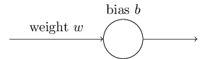
$1$을 입력받아 $0$을 출력하는 뉴런으로 훈련시킬 것이다.
물론 이는 아주 쉬우므로 학습 알고리즘없이 손으로도 가중치와 편향을 찾아낼 수 있다.
그러나 이해를 분명히하기 위해 경사 하강을 이용해 가중치와 편향을 학습해보자.
이제 뉴런이 어떻게 학습하는지 살펴보자.
상황을 명확하게 하기 위해 초기 가중치는 $0.6$, 초기 편향은 $0.9$로 설정하자. 이는 학습을 시작하기 위한 일반적인 선택이며 특별한 상황을 위해 선택한 것은 아니다. 뉴런의 초기 출력은 $0.82$이고 뉴런이 원하는 출력 $0.0$에 가까워 지려면 학습할 필요가 있다. 출력을 $0.0$에 가깝가 만들기 위해 뉴런이 어떻게 학습하는지 아래 비디오에 나타나 있다. (아래 비디오는 원문을 캡처한 것이다. 원문에서는 브라우저를 통해 다이나믹하게 동작한다) 학습률은 $\eta = 0.15$으로 눈 으로 볼 수 있을 정도로 느리게 설정했지만 몇 초 안에 학습을 할 정도로 빠르게 동작한다. 비용은 1장에서 소개 한 이차 비용함수 $C$이다. 곧 비용함수의 정확한 형태를 살펴볼 것이므로 정의를 깊게 파고들 필요는 없다. (원문에서 애니메이션을 동작할 수 있다)
위 비디오에서 본 것처럼 뉴런은 비용을 낮추도록 가중치와 편향을 빠르게 학습하고 약 $0.09$를 출력한다. 이는 원하는 출력 $0.0$은 아니지만 꽤 가까운 값이다. 하지만 초기 가중치와 초기 편향 모두 $2.0$으로 선택한다고 가정하자. 이 경우 초기 출력은 아주 나쁜 값인 $0.98$이다. 이 경우 뉴런이 어떻게 학습하는지 아래 비디오를 보자.(마찬가지로 원문에서 애니메이션을 실행할 수 있다)
이 예는 같은 학습률($\eta = 0.15$)을 사용하지만 더 느린 속도로 학습한다. 처음 150 학습 세대(learning epoch) 정도는 가중치와 편향이 거의 변하지 않는다. 그러다가 학습 효과가 나타나면서 뉴런의 출력은 빠른 속도로 $0.0$에 가까워진다.
인간이 학습하는 것과 비교해 보면 이러한 행동은 이상하다. 이 절의 첫 부분에서 말한 것처럼 인간은 틀릴 때 학습을 빠르게 한다. 하지만 방금 본 것처름 인공 뉴런은 틀릴 때 학습 속도는 매우 느리다. 조금 틀릴 때 보다 훨씬 더 학습하는 것을 어려워 한다. 게다가 이러한 현상은 이 예제 모델에서만 일어나는 것이 아니라 일반적인 신경망에서도 많이 일어난다. 왜 학습 속도가 느릴까? 이 느린 속도를 피할 방법이 있을까?
이 문제의 기원을 이해하기 위해 비용함수의 편도함수 $\partial C/\partial w$과 $\partial C/\partial b$로 결정되는 비율로 가중치와 편향을 바꾸면서 뉴런이 학습한다고 생각하자.
그러면 "학습 속도가 느리다(learning is slow)"는 말은 편도함수가 작다는 말과 똑같다.
문제는 왜 편도함수가 작은지 이해하는 것이다.
편도함수를 계산해서 이해해보자.
식
(6)
$$\begin{eqnarray} C(w,b) \equiv
\frac{1}{2n} \sum_x \| y(x) - a\|^2 \nonumber\end{eqnarray}$$
에서
얻은 이차 비용함수를 다음과 같은 식으로 사용한다.
$$\begin{eqnarray}
C = \frac{(y-a)^2}{2},
\tag{54}\end{eqnarray}$$
여기서 $a$는 학습 데이터 입력 $x = 1$일때 뉴런의 출력이다.
그리고 $y = 0$은 상응하는 원하는 출력이다.
$a = \sigma(z)$을 이용해 이 식을 가중치와 편향에 대해 써보자.
여기서 $z = wx+b$이다.
연쇄법칙을 이용해 가중치와 편향에 대해 미분을 하면 다음과 같다.
$$\begin{eqnarray}
\frac{\partial C}{\partial w} & = & (a-y)\sigma'(z) x = a \sigma'(z) \tag{55}\\
\frac{\partial C}{\partial b} & = & (a-y)\sigma'(z) = a \sigma'(z),
\tag{56}\end{eqnarray}$$
여기서 $x = 1$과 $y = 0$을 대입했다.
이 식이 무엇을 하는지 이해하기 위해 우변에 있는 $\sigma'(z)$을 중심으로 살펴보자.
$\sigma$ 함수의 그래프는 다음과 같은 모양임을 기억하자.
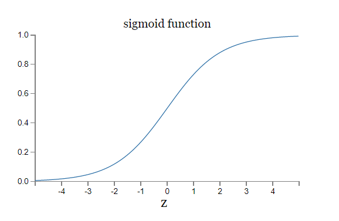
이 그래프에서 뉴런의 출력이 $1$에 가까울 때 곡선은 평평하며 $\sigma'(z)$ 값은 매우 작다. 식 (55) $$\begin{eqnarray} \frac{\partial C}{\partial w} & = & (a-y)\sigma'(z) x = a \sigma'(z) \nonumber\end{eqnarray}$$ 와 (56) $$\begin{eqnarray} \frac{\partial C}{\partial b} & = & (a-y)\sigma'(z) = a \sigma'(z) \nonumber\end{eqnarray}$$ 을 통해 $\partial C / \partial w$과 $\partial C / \partial b$이 매우 작아짐을 알 수 있다. 이것이 느린 학습 속도의 기원이다. 게다가 조금 뒤에 보겠지만 느린 학습 속도는 일반적인 신경망에서도 예제에서와 같은 이유로 일어난다.
느린 학습 속도를 어떻게 처리할 수 있을까?
이차 비용함수를 교차 엔트로피(cross-entropy) 비용함수로 바꿔서 문제를 풀 수 있다.
아주 간단한 예제 모델에서 벗어나서 교차 엔트로피를 이해해보자.
입력 변수 $x_1, x_2, \ldots$과 상응하는 가중치 $w_1, w_2, \ldots$, 편향 $b$를 가지는 뉴런을 학습시킨다고 가정하자.
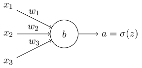
뉴런의 출력은 물론 $a = \sigma(z)$이고 여기서 $z = \sum_j w_j x_j+b$은 입력의 가중치 합(the weighted sum of the inputs)이다.
이 뉴런에 대한 교차 엔트로피 비용함수는 다음과 같이 정의한다.
$$\begin{eqnarray}
C = -\frac{1}{n} \sum_x \left[y \ln a + (1-y ) \ln (1-a) \right],
\tag{57}\end{eqnarray}$$
여기서 $n$은 학습 데이터의 전체 개수이고 학습 모든 학습 데이터 입력 $X$에 대한 값이고 $y$는 원하는 출력이다.
식 (57) $$\begin{eqnarray} C = -\frac{1}{n} \sum_x \left[y \ln a + (1-y ) \ln (1-a) \right] \nonumber\end{eqnarray}$$ 이 느린 학습 속도 문제를 풀 수 있는지 분명하지 않다. 사실 이 식을 비용함수라고 부르는게 맞는지도 분명하지 않다. 느린 학습 속도를 다루기 전에 교차 엔트로피를 어떤 면에서 비용함수로 해석할 수 있는지 살펴보자.
교차 엔트로피를 비용함수로 해석할 수 있는 두 가지 속성이 있다. 첫 번째 속성은 음수가 아니라(non-negative)는 것이다. 즉 $C > 0$이다. 이는 다음을 통해 알 수 있다. (a) 식 (57) $$\begin{eqnarray} C = -\frac{1}{n} \sum_x \left[y \ln a + (1-y ) \ln (1-a) \right] \nonumber\end{eqnarray}$$ 에서 $0$과 $1$사이의 수에 대한 로그를 취하므로 합(sigma, 시그마)의 모든 항은 음수이다. (b) 합 앞에 음의 부호가 있다.
두 번째로 모든 학습 데이터 입력 $x$에 대해 뉴런의 실제 출력이 원하는 출력과 근사하다면 교차 엔트로피는 $0$에 가까워진다.*
이를 증명하기 위해 원하는 출력 $y$가 $0$ 또는 $1$이라고 가정해야한다.
이러한 경우는 분류 문제를 풀 때나 불(boolean) 함수를 계산할 때이다.
이 가정을 하지 않고 이해하기 위해서는 이 절의 끝에 있는 예제를 보자.
예를 들어 어떤 입력 $x$에 대해 $y = 0$이고 $a \approx 0$이라 가정하자.
이는 뉴런이 그 입력에 대해 좋은 결과를 내는 경우이다.
$y = 0$이므로 비용에 대한 식
(57)
$$\begin{eqnarray}
C = -\frac{1}{n} \sum_x \left[y \ln a + (1-y ) \ln (1-a) \right] \nonumber\end{eqnarray}$$
의 첫 번째 항은 없어지고
두 번째 항은 $-\ln (1-a) \approx 0$이 된다.
$y = 1$이고 $a \approx 1$인 경우에 비슷한 분석이 성립한다.
그래서 실제 출력이 원하는 출력에 가까운 경우 비용에 대한 기여는 낮을 것이다.
요약하면 교차 엔트로피는 양수이고 뉴런이 모든 학습 데이터 입력 $x$에 대하 원하는 출력 $y$를 잘 계산하면 0이 되는 경향이 있다. 이는 비용함수에서 볼 수 있는 속성이다. 실제로 이차 비용함수의 경우에도 이 두가지 속성이 만족한다. 따라서 교차 엔트로피도 비용함수로 볼 수 있는 근거가 생겼다. 하지만 이차 비용함수와 달리 교차 엔트로피 비용함수는 느린 학습 속도 문제를 피할 수 있다는 이점이 있다. 이를 알아보기 위해 가중치에 대한 교차 엔프로피 비용함수의 편도함수를 계산해보자. 식 (57) $$\begin{eqnarray} C = -\frac{1}{n} \sum_x \left[y \ln a + (1-y ) \ln (1-a) \right] \nonumber\end{eqnarray}$$ 에 $a = \sigma(z)$을 대입하고 연쇄법칙을 두 번 적용하면 다음을 얻을 수 있다. $$\begin{eqnarray} \frac{\partial C}{\partial w_j} & = & -\frac{1}{n} \sum_x \left( \frac{y }{\sigma(z)} -\frac{(1-y)}{1-\sigma(z)} \right) \frac{\partial \sigma}{\partial w_j} \tag{58}\\ & = & -\frac{1}{n} \sum_x \left( \frac{y}{\sigma(z)} -\frac{(1-y)}{1-\sigma(z)} \right)\sigma'(z) x_j. \tag{59}\end{eqnarray}$$ 공통분모를 이용해 간단하게 나타내면 다음과 같다. $$\begin{eqnarray} \frac{\partial C}{\partial w_j} & = & \frac{1}{n} \sum_x \frac{\sigma'(z) x_j}{\sigma(z) (1-\sigma(z))} (\sigma(z)-y). \tag{60}\end{eqnarray}$$ 시그모이드 함수의 정의 $\sigma(z) = 1/(1+e^{-z})$와 약간의 대수학을 이용하면 $\sigma'(z) = \sigma(z)(1-\sigma(z))$임을 알 수 있다. 아래 예제에서 이를 증명해 보고 지금은 그냥 받아들이자. 위 식에서 $\sigma'(z)$과 $\sigma(z)(1-\sigma(z))$은 소거되므로 간단히 나타내면 다음과 같다. $$\begin{eqnarray} \frac{\partial C}{\partial w_j} = \frac{1}{n} \sum_x x_j(\sigma(z)-y). \tag{61}\end{eqnarray}$$ 이는 아름다운 식이다. 이 식을 통해 $\sigma(z)-y$이 가중치를 학습하는 비율을 제어한다는 것을 알 수 있다. 즉 출력의 오차가 비율을 통제한다. 오차가 커질수록 뉴런은 빠르게 학습한다. 이는 우리가 기대했던 결과이다. 특히 이는 이차비용함수와 비슷한 식 (55) $$\begin{eqnarray} \frac{\partial C}{\partial w} & = & (a-y)\sigma'(z) x = a \sigma'(z) \nonumber\end{eqnarray}$$ 에서 $\sigma'(z)$이 일으키는 느린 학습 속도를 피할 수 있다. 교차 엔트로피를 사용하면 $\sigma'(z)$항은 소거되고 더 이상 이 값이 작아지는 것을 걱정하지 않아도 된다. 이 소거는 교차 엔트로피 비용함수가 보장하는 기적이다. 사실 정말로 기적은 아니다. 뒤에서 살펴보겠지만 교차 엔트로피는 이러한 속성을 가지도록 선택되었다.
비슷한 방법으로 편향에 대한 편도함수를 계산할 수 있다. 자세한 사항을 살펴보진 않겠지만 다음 식을 쉽게 증명할 수 있다. $$\begin{eqnarray} \frac{\partial C}{\partial b} = \frac{1}{n} \sum_x (\sigma(z)-y). \tag{62}\end{eqnarray}$$ 다시 한번 말하자면 이차비용함수와 비슷한 식 (55) $$\begin{eqnarray} \frac{\partial C}{\partial w} & = & (a-y)\sigma'(z) x = a \sigma'(z) \nonumber\end{eqnarray}$$ 에서 $\sigma'(z)$이 일으키는 느린 학습 속도를 피할 수 있다.
처음 살펴봤던 예제로 돌아가자. 그리고 이차 비용함수 대신에 교차 엔트로피를 사용하면 무슨 일이 일어나는지 알아보자. 이차 비용함수에서 결과가 좋았던 초기 가중치가 $0.6$이고 초기 편향은 $0.9$인 경우부터 시작해보자. 아래 비디오는 이차 비용함수를 교차 엔트로피 비용함수로 바꾼 결과이다. (원문에서 애니메이션을 이용할 수 있다)
이전에 살펴보았던 것처럼 이 경우에 뉴런은 완벽하게 학습을 잘 한다. 그리고 이전에는 결과가 좋지 못했던 가중치와 편향이 모두 $2.0$인 경우를 살펴보자.
이번에는 뉴런이 빠르게 학습했다. 자세히 살펴보면 비용함수 곡선의 기울기가 이차 비용함수에 대한 초기 평면 영역보다 훨씬 가파르다는 것을 알 수 있다. 이는 뉴런이 빨리 학습하기를 바랄 때 즉 뉴런이 틀렸을 때 교차 엔트로피가 잘 못된 결과를 내는 것을 막는 가파른 정도이다.
위의 예에서 학습률은 얼마인지 이야기하지 않았다. 이차 비용함수의 경우 학습률 $\eta = 0.15$을 사용했다. 새로운 예에서 같은 학습률을 사용했는가? 사실 다른 비용함수에서 "같은(same)" 학습률을 사용하는 것의 의미를 정확하게 말하기 어렵다. 두 비용함수에 대해 무슨 일이 일어나는지 볼 수 있는 학습률을 실험을 하여 찾았다. 부인해도 여전히 궁금하다면 자세한 사항은 다음과 같다. 방금 주어진 예에서 학습률 $\eta = 0.005$을 사용했다.
학습률의 변화가 위 그래프를 의미없게 만들 것이라 반박할지도 모른다. 학습률을 임의로 선택하면 뉴런이 얼마나 빨리 학습하는지 어떻게 알 수 있냐?! 이 반박은 중요한 점을 놓지고 있다. 그래프는 학습의 절대적인 속도에 대한 것이 아니다. 이는 학습의 속도가 어떻게 변하는지 나타낸다. 특히 이차 비용함수를 사용할때 뉴런이 정확한 출력에 가까워질수록 뉴런이 나중보다 분명히 틀릴 때 더 느리다(slower). 반면에 교차 엔트로피는 뉴런이 분명히 틀릴 때 더 빠르다. 이는 학습률에 얼마인지 상관없이 성립하는 말이다.
이제까지 하나의 뉴런에 대한 교차 엔트로피를 공부했다. 하지만 교차 엔트로피를 다수의 뉴런이 있는 다층 신경망으로 쉽게 일반화할 수 있다. 특히 출력 뉴런 즉 마지막 층에 있는 뉴런에서 원하는 값 $y = y_1, y_2, \ldots$을 가정하자. 반면 $a^L_1, a^L_2, \ldots$은 실제 출력 값이다. 그러면 교차 엔트로피를 다음과 같이 정의한다. $$\begin{eqnarray} C = -\frac{1}{n} \sum_x \sum_j \left[y_j \ln a^L_j + (1-y_j) \ln (1-a^L_j) \right]. \tag{63}\end{eqnarray}$$ 이 식은 모든 출력 뉴런에 대해 합을 하는 $\sum_j$를 제외하고 처음에 본 식 (57) $$\begin{eqnarray} C = -\frac{1}{n} \sum_x \left[y \ln a + (1-y ) \ln (1-a) \right] \nonumber\end{eqnarray}$$ 과 같다. 직접 증명은 하지 않을거지만 식 (63) $$\begin{eqnarray} C = -\frac{1}{n} \sum_x \sum_j \left[y_j \ln a^L_j + (1-y_j) \ln (1-a^L_j) \right] \nonumber\end{eqnarray}$$ 을 이용해 다층 신경망에서 느린 학습 속도를 피할 수 있다. 아래에 있는 연습문제에서 증명을 해보자.
표면적으로 다른 것과 충돌하는 것처럼 보이므로 독자를 혼란스럽게 하는 방식으로 "교차 엔트로피"라는 용어를 사용하고 있다. 특히 두 개의 확률 분포 $p_j$와 $q_j$에 대해 $\sum_j p_j \ln q_j$을 흔히 교차 엔트로피로 정의한다. 이 정의는 뉴런의 활성 $a$와 이것의 보수 $1 - a$로 구성된 확률 분포를 출력하는 하나의 시그모이드 뉴런을 다루면 식 (57) $$\begin{eqnarray} C = -\frac{1}{n} \sum_x \left[y \ln a + (1-y ) \ln (1-a) \right] \nonumber\end{eqnarray}$$ 과 연결된다.
하지만 마지막 층에 많은 수의 시그모이드 뉴런이 있으면 활성 벡터 $a^L_j$은 보통 확률 분포를 형성하지 않는다.
확률 분포를 다루는 것이 아니므로 그 결과 $\sum_j p_j \ln q_j$와 같은 정의는 말이 되지 않는다.
대신 식
(63)
$$\begin{eqnarray} C = -\frac{1}{n} \sum_x
\sum_j \left[y_j \ln a^L_j + (1-y_j) \ln (1-a^L_j) \right] \nonumber\end{eqnarray}$$
을
두 개의 확률 분포 중 하나로 해석되는 각 뉴런의 활성과 뉴런 당 교차 엔트로피를 합한 것이라 생각할 수 있다.*
물론 우리가 다루는 신경망에는 확률적 요소가 없으므로
실제 확률이 아니다.
이런 점에서 식
(63)
$$\begin{eqnarray} C = -\frac{1}{n} \sum_x
\sum_j \left[y_j \ln a^L_j + (1-y_j) \ln (1-a^L_j) \right] \nonumber\end{eqnarray}$$
은
확률 분포에 대한 교차 엔트로피의 일반화이다.
언제 이차 비용 대신에 교차 엔트로피를 사용해야하나? 사실 출력 뉴런이 시그모이드 뉴런이면 교차 엔트로피는 거의 항상 좋은 선택이다. 왜 그런지 살펴보자. 신경망을 설정할 때 보통 가중치와 편향을 무작위로 초기화한다. 이러한 초기화는 신경망에서 어떤 학습 데이터 입력에 대해 결정적으로 나쁜 결과를 낼 수 있다. 즉 출력 뉴런은 출력이 $0$이어야 하지만 $1$ 가까이에서 포화될지도 모른다. 혹은 반대의 경우도 마찬가지다. 이때 이차 비용함수를 사용하면 학습 속도를 떨어뜨린다. 가중치가 원하지 않은 값으로 다른 학습 데이터 입력에 대해 계속 학습하므로 이는 학습을 완전히 멈추지 않을 것이다.
경사 하강과 역전파를 이용해 학습하는 프로그램의 한 부분으로 교차 엔트로피를 구현하는 것은 쉽다.
책의 뒷부분에서 MNIST 손글씨 숫자를 분류하는 프로그램 network.py를 발전시킬 것이다.
교차 엔트로피와 이 장에서 살펴볼 다른 기술*
코드는 Github에서 이용가능하다.
을 합쳐 network2.py 프로그램을 만들어보자.
먼저 새로운 프로그램이 MNIST 숫자를 얼마나 잘 분류하는지 살펴보자.
1장의 경우처럼 30개의 은닉 뉴런(hidden neuron)이 있는 신경망을 사영하고 미니 배치의 크기는 $10$으로 할 것이다.
학습률 $\eta = 0.5$*
1장에서는 이차 비용함수와 학습률 $\eta = 3.0$을 사용했다.
위에서 본 것처럼 다른 비용함수에서 "같은" 학습률을 사용하는 의미를 정확히 이야기하기 어렵다.
다른 하이퍼파라미터를 선택했을 때 거의 최적의 성능을 내는 학습률을 실험을 통해 찾았다.
으로 하고 $30$ 세대(epoch) 동안 학습한다.
network2.py에 대한 인터페이스는 network.py와 조금 다르지만 무엇을 하는지 이해하기는 쉽다.
파이썬 쉘에서 help(network2.Network.SGD)같은 명령어를 사용하여 network2.py에 대한 문서를 볼 수 있다.
>>> import mnist_loader
>>> training_data, validation_data, test_data = \
... mnist_loader.load_data_wrapper()
>>> import network2
>>> net = network2.Network([784, 30, 10], cost=network2.CrossEntropyCost)
>>> net.large_weight_initializer()
>>> net.SGD(training_data, 30, 10, 0.5, evaluation_data=test_data,
... monitor_evaluation_accuracy=True)
명령어 net.large_weight_initializer()은 1장과 같은 방법으로 가중치와 편향을 초기화한다.
이 장의 뒷부분에서 신경망의 가중치를 기본 초깃값을 바꾸므로 이 명령어를 실행해야한다.
위 명령어로 작동한 결과 신경망은 $95.49%$의 정확도를 가진다.
이는 1장에서 이차 비용함수를 사용해 얻은 $95.42%$에 근접하다.
다른 파라미터(parameter)는 그대로 두고 $100$개의 은닉 뉴런과 교차 엔트로피를 사용하는 경우를 보자. 이 경우 $96.82%$의 정확도를 얻을 수 있다. 이는 이차 비용함수를 이용해 $96.59%$의 정확도를 얻은 1장보다 상당히 향상된 결과이다. 작은 변화처럼 보일지 모르지만 오차율(error rate)가 $3.41%$에서 $3.18%$로 떨어진 것에 주목하자. 즉 오차를 $1/14$정도로 줄였다. 이는 꽤 유용한 향상이다.
교차 엔트로피는 이차 비용함수와 비슷하거나 혹은 더 나은 결과를 낸다. 하지만 이 결과로 교차 엔트로피가 더 낫다고 증명할 수 는 없다. 학습률, 미니 배치 크기와 같은 하이퍼파라미터를 선택하는 것에만 노력을 기울였기 때문이다. 개선을 더욱 설득력있게 만들려면 하이퍼파라미터를 최적화해야 한다. 그래도 결과는 긍정적으로 볼 수 있으며 이차 비용함수보다 교차 엔트로피가 더 낫다는 이론적 주장을 뒷받침한다.
하지만 이는 이 장과 책의 나머지 대부분에서 볼 수 있는 일반적인 패터이다. 새로운 기술을 소개하고 직접 해보아 결과를 개선(improved)시킬 것이다. 물론 그러한 개선은 좋다. 하지만 이러한 개선을 해석하는 것은 항상 문제가 된다. 다른 모든 하이퍼파리미터를 최적화하는데 많은 노력을 한 뒤에 개선을 보면 진정으로 확신할 수 있다. 이는 상당한 계산 자원(computing power)를 필요로하는 작업이고 이런 작업을 하지는 않을 것이다. 대신 위에서 한것 같은 테스트(informal test)를 기반으로 진행할 것이다. 하지만 이러한 테스트는 결정적인 증명이 부족하며 주장이 무너지는 징후에 주의를 기울여야 한다.
지금까지 교차 엔트로피에 대해 자세하게 알아보았다. MNIST 결과에 작은 개선을 주는데 왜 이렇게 많은 노력을 기울였을까? 이 장의 뒷부분에서 다른 기술을 살펴볼 것이다. 더 나은 개선을 할 수 있는 정규화(regularization)를 중심으로 볼 것이다. 그래서 왜 이렇게 많이 교차 엔트로피에 집중했을까? 널리 사용하는 비용함수 중 하나가 교차 엔트로피이기 때문에 이해할 가치가 있기 때문이다. 하지만 더 중요한 이유는 뉴런 포화는 신경망에서 중요한 문제이고 책 전반에 걸쳐 반복해서 살펴볼 문제이기 때문이다. 그리고 뉴런 포화를 이해하고 어떻게 이를 다룰지에 대한 좋은 실험이므로 교차 엔트로피를 상세히 설명했다.
수학적인 분석과 실용적인 구현을 중점으로 교차 엔트로피를 살펴보았다. 이는 유용하지만 개념적으로 넓은 질문에 대해 답하지는 않았다. 교차 엔트로피는 무엇을 의미할까? 교차 엔트로피를 생각하는 직관적인 방법이 있을까? 그리고 교차 엔트로피를 처음에 어떻게 생각해냈을까?
마지막 질문부터 살펴보자. 무엇이 처음에 교차 엔트로피를 생각하도록 만들었을까? 이전에 설명했던 느린 학습 속도를 발견했고 그 기원은 식 (55) $$\begin{eqnarray} \frac{\partial C}{\partial w} & = & (a-y)\sigma'(z) x = a \sigma'(z) \nonumber\end{eqnarray}$$ 와 식 (56) $$\begin{eqnarray} \frac{\partial C}{\partial b} & = & (a-y)\sigma'(z) = a \sigma'(z) \nonumber\end{eqnarray}$$ 의 항 $\sigma'(z)$이라는 것을 이해했다고 가정하자. 이 식을 살펴본 뒤 $\sigma'(z)$을 소거할 수 있는지 궁금해할지도 모른다. 이 경우 하나의 학습 데이터 $x$에 대해 비용 $C = C_x$은 다음을 만족한다. $$\begin{eqnarray} \frac{\partial C}{\partial w_j} & = & x_j(a-y) \tag{71}\\ \frac{\partial C}{\partial b } & = & (a-y). \tag{72}\end{eqnarray}$$ 위 식이 참이 되도록 비용함수를 선택할 수 있다면 간단한 방법으로 초기 오차가 커질수록 뉴런을 빨리 학습한다는 직관을 알 수 있다. 또한 느린 학습 속도 문제를 제건한다. 사실 이 식에서 시작해 수학적인 근거를 따라 교차 엔트로피의 형태를 유도할 수 있는지 살펴볼 것이다. 연쇄 법칙으로부터 다음 식을 얻을 수 있다. $$\begin{eqnarray} \frac{\partial C}{\partial b} = \frac{\partial C}{\partial a} \sigma'(z). \tag{73}\end{eqnarray}$$ $\sigma'(z) = \sigma(z)(1-\sigma(z)) = a(1-a)$을 이용하면 다음과 같다. 식 (72) $$\begin{eqnarray} \frac{\partial C}{\partial b } & = & (a-y) \nonumber\end{eqnarray}$$ 을 통해 다음을 얻을 수 있다. $$\begin{eqnarray} \frac{\partial C}{\partial a} = \frac{a-y}{a(1-a)}. \tag{75}\end{eqnarray}$$ 이 식을 어떤 적분 상수에 대해 $a$에 관해 적분하면 다음과 같다. $$\begin{eqnarray} C = -[y \ln a + (1-y) \ln (1-a)]+ {\rm constant}, \tag{76}\end{eqnarray}$$ 이는 하나의 학습 데이터 $x$에서 비용에 기여한 것이다. 전체 비용함수를 얻으려면 학습 데이터를 평균해야한다. 식은 다음과 같다. $$\begin{eqnarray} C = -\frac{1}{n} \sum_x [y \ln a +(1-y) \ln(1-a)] + {\rm constant}, \tag{77}\end{eqnarray}$$ 여기서 상수(constant)는 각 학습 데이터에 대한 개별 상수의 평균이다. 그래서 식 (71) $$\begin{eqnarray} \frac{\partial C}{\partial w_j} & = & x_j(a-y) \nonumber\end{eqnarray}$$ 와 식 (72) $$\begin{eqnarray} \frac{\partial C}{\partial b } & = & (a-y) \nonumber\end{eqnarray}$$ 은 전체 상수항까지 교차 엔트로피 형태를 유일하게 만든다. 교차 엔트로피는 하늘에서 뚝 떨어진 것이 아니다. 오히려 간단하고 자연스러운 방법으로 발견한 것이다.
교차 엔트로피의 직관적인 의미는 무엇을까? 교차 엔트로피를 어떻게 생각할 수 있을까? 이를 깊이있게 설명하는 것은 내가 설명하려는 분야와 다르다. 하지만 정보 이론(information theory) 분야에서 나온 교차 엔트로피를 해석하는 표준적인 방법이 있다는 것을 말할 필요는 있다. 대략적으로 말하면 교차 엔트로피는 놀라움의 척도(a measure of surprise)라는 생각이다. 특히 뉴런은 함수 $x \rightarrow y = y(x)$을 계산하려 하지만 $x \rightarrow a = a(x)$을 계산한다. $a$를 $y$가 $1$인 뉴런의 추정 확률(estimated probability)라 볼 수 있고 $1 - a$는 $y$가 $0$인 추정 확률이라 가정하자. 그러면 교차 엔트로피는 $y$의 실제 값을 배울 때 평균적으로 우리가 얼마나 놀라는(surprise)지 측정한다. 출력이 기대한 값이면 적게 놀라고 출력을 예상하지 못한 값이면 많이 놀란다. 물론 놀란다(surprise)는 의미를 정하기 말하지 않았서 못마땅할 수 있다. 하지만 사실 놀라움을 의미하는 것이 무엇인지 말하는 정보 이론적인 방법이 있다. 하지만 이 주제에 대해 간결하면서 좋은 설명을 알지 못한다. 이는 온라인에서 찾아볼 수 있다. 하지만 더 깊이 알고 싶다면 올바른 방향으로 인도해줄 간단한 요약을 위키피디아에서 찾을 수 있다. 그리고 Cover와 Thomas의 정보 이론에 대한 책의 5장에 있는 Kraft inequality에서 볼 수 있다.
이 장에서 교차 엔트로피를 이용해 학습 속도 저하 문제를 다룰 것이다. 하지만 뉴런의 소프트맥스 층Softmax layers of neurons이라 부르는 것에 근거해 문제에 접근하는 다른 방식을 간단하게 설명하고자 한다. 이 장의 나머지 부분에서 소프트맥스 층을 사용하지는 않으므로 다음 절로 넘어가도 좋다. 하지만 소프트맥스는 이해해볼 가치가 있다. 이는 본질적으로 흥미로우며 6장에서 심층 신경망deep neural networks을 다룰 때 소프트맥스 층을 사용할 것이기 때문이다.
소프트맥스는 신경망에 대한 새로운 유형의 출력층을 정의한다.
가중치 입력*
소프트맥스를 설명할 때 2장에서 소개한 표기법을 사용할 것이다.
표기법의 의미를 살펴보기 위해 2장을 다시 살펴보자.
$z^L_j = \sum_{k} w^L_{jk} a^{L-1}_k + b^L_j$을 형성하는 시그모이드 층과 같은 방식으로 시작한다.
하지만 시그모이드 함수를 이용해 출력을 내지는 않는다.
대신 소프트맥스 층에서 소프트맥스 함수(softmax function)를 $z^L_j$에 적용한다.
이 함수에 따르면 $j$번째 출력 뉴런의 활성 $a^L_j$은 다음과 같다.
$$\begin{eqnarray}
a^L_j = \frac{e^{z^L_j}}{\sum_k e^{z^L_k}},
\tag{78}\end{eqnarray}$$
여기서 분모는 모든 출력 뉴런에 대한 합이다.
소프트맥스 함수에 익숙하지 않으면 식 (78) $$\begin{eqnarray} a^L_j = \frac{e^{z^L_j}}{\sum_k e^{z^L_k}} \nonumber\end{eqnarray}$$ 을 이해하기 어려울 수 있다. 이 함수를 왜 사용하는지 분명하지 않다. 또한 이 함수가 느린 학습 속도 문제를 푸는데 도움이되는지 분명하지 않다. 식 (78) $$\begin{eqnarray} a^L_j = \frac{e^{z^L_j}}{\sum_k e^{z^L_k}} \nonumber\end{eqnarray}$$ 을 더 살펴보자. 네 개의 출력 뉴런과 상응하는 네 개의 가중치 입력으로 구성된 신경망이 있다고 가정하자. 그리고 각 가중치 입력을 $z^L_1, z^L_2, z^L_3, z^L_4$라 표기하자. 아래에 있는 슬라이더를 통해 가중치 입력에 대해 가능한 값을 볼 수 있고 대응하는 출력 활성의 그래프를 볼 수 있다.(원문 이용) $z^L_4$을 증가하는 버튼을 먼저 사용해서 보는 것이 좋다. $z^L_4$을 증가하면 대응하는 출력 활성 $a^L_4$은 증가하고 다른 출력 활성은 감소한다. 비슷한 방법으로 $z^L_4$을 감소하면 $a^L_4$은 감소하고 다른 출력 활성은 증가한다. 사실 자세히 보면 두 가지 경우 모두 다른 활성에서의 전체 변화는 $a^L_4$의 변화와 동일하다. 출력 활성의 합은 항상 $1$을 보장하기 때문이다. 식 (78) $$\begin{eqnarray} a^L_j = \frac{e^{z^L_j}}{\sum_k e^{z^L_k}} \nonumber\end{eqnarray}$$ 을 이용해 간단히 증명할 수 있다. $$\begin{eqnarray} \sum_j a^L_j & = & \frac{\sum_j e^{z^L_j}}{\sum_k e^{z^L_k}} = 1. \tag{79}\end{eqnarray}$$ 그 결과 $a^L_4$이 증가하면 전체 활성의 합을 $1$로 만들기 위해 다른 출력 활성은 같은 양만큼 감소해야 한다. 그리고 물론 다른 모든 활성에 대해서도 이 말은 성립한다.
식 (78) $$\begin{eqnarray} a^L_j = \frac{e^{z^L_j}}{\sum_k e^{z^L_k}} \nonumber\end{eqnarray}$$ 은 또한 지수함수는 양수이므로 출력 활성은 모두 양수라는 의미를 내포한다. 이전 문단에서 살펴본 관찰을 적용하면 소프트맥스 층의 출력은 합이 $1$이 되는 양수들의 집합이다. 즉 소프트맥스 층의 출력은 확률 분포로 생각할 수 있다.
소프트맥스 층이 확률 분포를 출력하는 사실은 기쁜 소식이다. 많은 문제에서 출력 활성 $a^L_j$을 올바른 출력이 $j$라는 확률을 측정하는 것으로 해석할 수 있으면 편리하다. 예를 들어 MNIST 분류 문제에서 $a^L_j$을 올바른 숫자 분류는 $j$라는 신경망의 추정 확률로 해석할 수 있다.
이에 반해 출력층이 시그모이드 층이면 활성이 확률 분포를 형성한다고 가정할 수 없다. 증명하지는 않을 것이지만 시그모이드 층의 활성은 일반적으로 확률 분포를 형성하지 않는다는 사실을 알 수 있다. 그래서 시그모이드 출력층으로 출력 활성의 간단한 해석을 가지지 못한다.
소프트맥스 층이 행동하는 방식과 소프트맥스 함수에 대한 약간의 감을 잡기 시작했다. 잠깐 복습해보자. 식 (78) $$\begin{eqnarray} a^L_j = \frac{e^{z^L_j}}{\sum_k e^{z^L_k}} \nonumber\end{eqnarray}$$ 에서 지수함수때문에 모든 출력 활성은 양수이다. 그리고 식 (78) $$\begin{eqnarray} a^L_j = \frac{e^{z^L_j}}{\sum_k e^{z^L_k}} \nonumber\end{eqnarray}$$ 의 분모에 있는 합은 소프트맥스 출력의 합을 $1$로 만든다. 따라서 이 식은 더 이상 미스테리하지 않다. 오히려 출력활성은 확률 분포를 형성한다는 것을 보장하는 자연스러운 방식이다. 소프트맥스를 $z^L_j$을 정규화rescaling해서 확률 분포를 형성하도록 만드는 방식으로 생각할 수 있다.
학습 속도 저하 문제The learning slowdown problem: 이제 소프트맥스 층에 익숙해졌다. 하지만 아직 소프트맥스 층이 어떻게 학습속도 저하 문제를 다루는지 살펴보지 않았다. 이를 이해하기 위해 로그 우도log-likelihood 비용함수를 정의하자. 신경망에 대한 학습 입력을 $x$라 하고 대응하는 원하는 출력을 $y$라 하자. 그러면 이 학습 입력에 대한 로그 우도 비용은 다음과 같다. $$\begin{eqnarray} C \equiv -\ln a^L_y. \tag{80}\end{eqnarray}$$ 그래서 예를들어 MNIST 이미지를 학습하여 숫자 $7$의 이미지를 입력하면 로그 우도 비용은 $-\ln a^L_7$이다. 이를 직관적으로 이해해보자. 신경망의 성능이 좋은 경우를 고려해보자. 이 경우 대응하는 확률 $a^L_7$에 대한 값을 $1$에 가깝게 측정할 것이다. 그러므로 비용 $-\ln a^L_7$은 작은 값일 것이다. 반대로 신경망의 성능이 나쁘면 확률 $a^L_7$은 작을 것이고 비용 $-\ln a^L_7$은 커질 것이다. 그래서 로그 우도 비용은 우리가 원하는 비용함수와 비슷하게 행동한다.
학습속도 저하 문제의 경우에는 어떨까?
이를 분석하기 위해 학습속도 저하 문제의 핵심은 $\partial C / \partial w^L_{jk}$과 $\partial C / \partial b^L_j$임을 기억하자.
다음 식*
이전 문단과 약간 다른 방법으로 $y$를 사용하여 표기하였다.
이전 문단에서는 신경망의 원하는 출력으로 $y$를 표기했다.
예를 들어 이미지 입력이 $7$이면 출력은 "$7$"이다.
하지만 이 식에서는 $y$를 $7$에 대응하는 출력 활성의 벡터로 표기했다.
즉 $7$번째 위치에 $1$을 제외하고 나머지는 모드 $0$인 벡터이다.
과
같이 유도할 수 있다. 유도는 아래의 연습문제에서 해보자.
$$\begin{eqnarray}
\frac{\partial C}{\partial b^L_j} & = & a^L_j-y_j \tag{81}\\
\frac{\partial C}{\partial w^L_{jk}} & = & a^{L-1}_k (a^L_j-y_j)
\tag{82}\end{eqnarray}$$
이 식은 이전에 교차 엔트로피를 분석할 때 얻은 식과 유사하다.
예를들어 식
(82)
$$\begin{eqnarray} \frac{\partial C}{\partial w^L_{jk}} & = & a^{L-1}_k (a^L_j-y_j) \nonumber\end{eqnarray}$$
과
식
(67)
$$\begin{eqnarray}
\frac{\partial C}{\partial w^L_{jk}} & = & \frac{1}{n} \sum_x
a^{L-1}_k (a^L_j-y_j).
\nonumber\end{eqnarray}$$
을
비교해보자.
후자의 경우 학습 데이터를 평균했지만 이는 같은 식이다.
그리고 이전의 분석처럼 이 식은 학습 속도 저하를 일으키지 않는 것을 보장한다.
사실 로그 우도 비용이 있는 소프트맥스 출력층을 교차 엔트로피 비용이 있는 시그모이드 출력층과 비슷하다고 생각하는 것은 유용하다.
이 유사점을 고려하면 시그모이드 출력층과 교차 엔트로피를 사용하거나 소프트맥스 출력층과 로그 우도를 사용해야 할까? 사실 많은 상황에서 두 가지 접근법은 잘 동작한다. 이 장의 나머지 부분에서 시그모이드 출력층을 교차 엔트로피 비용과 함께 사용할 것이다. 이후에 6장에서 가끔 소프트맥스 출력층과 로그 우도 비용을 사용할 것이다. 이렇게 바꾸는 이유는 이후의 신경망을 영향렬 있는 학술지 논문에서 볼 수 있는 신경망과 더 유사하게 만들기 때문이다. 보다 일반적인 원칙으로 출력 활성을 확률로 해석하고자 할때 소프트맥스와 로그 우도를 사용하는 것이 좋다. 항상 그런 것은 아니지만 분리된 클래스disjoin classes를 포함하는 (MNIST 같은) 분류 문제에는 유용하다.
노벨상 수상자 엔리고 페르미Enrico Fermi는 동료가 중요한 미해결 물리 문제에 대한 해답으로 제시한 수학적 모델에 관해 질문을 받았다.
모델은 실험과 굉장히 잘 맞아떨어졌지만 페르미는 회의적이었다.
그는 모델에서 얼마나 많은 자유 매개변수free parameters를 설정할 수 있는지 물었다.
"네 개"라고 답했다.
페르미는 다음과 같이 대답했다.*
이 인용은 결함있는 모델을 제안한 사람 중 하나은 Freeman Dyson의 기사를 참고했다.
네 개의 파라미터 코끼리는 여기서 볼 수 있다.
"내 친구 폰 노이만Johnny von Neumann이 한 말이 생각난다. 네 개의 파라미터로 나는 코끼리에 맞출 수 있고 다섯 개로는 코끼리 코를 춤추게 만들 수 있다."
물론 요점은 많은 수의 자유 파라미터를 갖는 모델은 놀라울 정도로 많은 현상을 설명할 수 있다는 말이다. 그런 모델이 가능한 데이터와 일치하더라도 좋은 모델이 아니다. 모델의 큰 자유도freedom가 근본적인 현상에 대한 진정한 통찰없이 주어진 크기의 어떤 데이터셋도 설명할 수 있다는 의미이다. 이러면 모델은 기존 데이터에 대해 잘 동작하지만 새로운 상황을 일반화하는데 실패할 것이다. 모델의 진정한 테스트는 이전에 마주하지 않은 상황에서 예측을 하는 능력을 봐야한다.
페르미와 폰 노이만은 네 개의 파라미터를 갖는 모델을 의심했다. MNIST 숫자를 분류하는 $30$개의 은닉 뉴런을 갖는 신경망은 거의 $24,000$개의 파라미터를 갖는다. 이는 엄청 많은 파라미터의 수이다. 100개의 은닉 뉴런을 갖는 신경망읜 거의 $80,000$개의 파라미터를 갖고 최신 심층 신경망state-of-the-art deep neural nets은 수백만 혹은 심지어 수억개의 파라미터를 갖는다. 결과를 믿을 수 있을까?
신경망이 새로운 상황에 일반화를 못하는 상황을 설정해보자.
$23,860$개의 파라미터를 갖는 $30$개의 은닉 뉴런으로 구성된 신경망을 사용하자.
신경망을 학습하는데 $50,000$개의 MNIST 학습 이미지 모두를 사용하지 않을 것이다.
제한된 수의 데이터를 사용해 일반화 문제를 더 분명하게 만들 것이다.
학습률 $\eta = 0.5$으로 하고 미니 배치의 크기는 $10$으로 하여 교차 엔트로피 비용함수를 사용하는 방법으로 학습시킨다.
많은 학습 데이터를 사용하지 않으므로 $400$ 세대동안 학습시킬 것이다.
network2를 사용하여 비용함수가 변하는 방법을 보자.
>>> import mnist_loader
>>> training_data, validation_data, test_data = \
... mnist_loader.load_data_wrapper()
>>> import network2
>>> net = network2.Network([784, 30, 10], cost=network2.CrossEntropyCost)
>>> net.large_weight_initializer()
>>> net.SGD(training_data[:1000], 400, 10, 0.5, evaluation_data=test_data,
... monitor_evaluation_accuracy=True, monitor_training_cost=True)
결과를 이용해 신경망이 학습*
이 그래프와 다음 네 개의 그래프는 overfitting.py 프로그램으로 만들었다.
할 때 비용이 변하는 그래프를 그릴 수 있다.
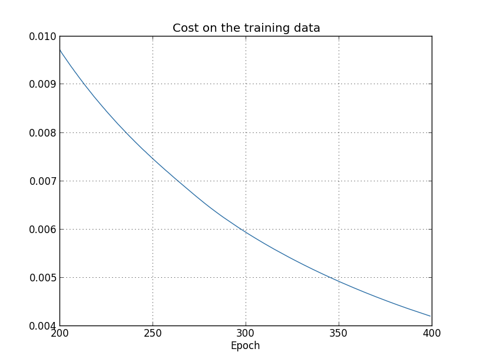
기대한 것처럼 비용이 부드럽게 감소하므로 이는 긍정적인 결고이다.
$200$세대에서 $399$세대 까지의 학습을 나타내고 있다.
이는 흥미로운 행동이 나타나는 학습의 후반부를 집중해서 볼 수 있다.
테스트 데이터에 대한 분류의 정확도가 시간이 지남에 따라 어떻게 변화는지 아래의 그래프를 통해 살펴보자.

다시 한번 특정 부분에 집중하여 그래프를 나타냈다.
(그래프에 나타나지 않은) 처음 $200$세대에서 정확도는 단지 $82%$ 이하이다.
이때 학습은 점점 느려진다.
마침내 $280$세대 근처에서 분류의 정확도는 향상된다.
후반후 세대에서는 단지 $280$ 세대의 정확도 값 근처로 작은 확률적 변동stoachastic fluctuation만 보인다.
이전에 보았던 학습 데이터와 연관된 비용이 부드럽게 감소하는 그래프와 비교해보자.
그 비용을 보면 모델이 점차 개선되고 있음을 알 수 있다.
하지만 테스트 정확도 결과는 그 개선이 환상임을 보여준다.
페르미가 싫어했던 모델처럼 $280$ 세대 이후에 네트워크가 학습하는 것은 더 이상 테스트 데이터를 일반화하지 않는다.
그러므로 이는 불필요한 학습이다.
이를 일컬어 $280$세대 이후에 네트워크는 과적합Overfitting 혹은 오버트레이닝Overtraining되었다고 말한다.
여기서 문제가 테스트 데이터에 대한 분류 정확도classification accuracy가 아닌 학습 데이터에 대한 비용cost인지 궁금해할 수 있다.
즉 문제는 사과와 오렌지의 비교하는 것일 수 있다.
학습 데이터에 대한 비용과 테스트 데이터에 대한 비용을 비용하면 무슨 일이 일어날까?
그러니깐 비슷한 측정 단위를 비교하고 있는 것일까?
아니면 학습 데이터와 테스트 데이터 모두에 대한 분류 정확도를 비교할 수 있을까?
사실 어떻게 비교를 하든 본질적으로 같은 현상이 나타난다.
세부적인 사항들은 바뀌지만 말이다.
예를 들어 테스트 데이터에 대한 비용을 보자.

테스트 데이터에 대한 비용은 약 $15$ 세대 까지 향상된다.
하지만 그 이후에 테스트 데이터에 대한 비용은 나빠지고 학습 데이터에 대한 비용은 나아진다.
이는 모델이 과적합되었다는 또 다른 신호이다.
그런데 이는 한 가지 물음을 제시한다.
과적합이 학습을 지배하는 시점은 $15$ 세대인가 아니면 $280$ 세대인가?
실용적인 관점에서 보면 테스트 데이터에 대한 분류 정확도를 향상시키는 것에 신경써야 하지만 테스트 데이터에 대한 비용은 분류 정확도의 대용proxy에 불과하다.
그러므로 뉴럴 네트워크에서 $280$ 세대 이후에 과적합이 학습을 지배한다고 생각하는 것이 이치에 맞다.
과적합에 대한 또 다른 신호는 학습 데이터에 대한 분류 정확도에서 볼 수 있다.

정확도는 $100$$까지 올라간다.
즉 네트워크는 $1,000$개의 모든 학습 이미지를 올바르게 분류한다.
반면 위에서 본 테스트 정확도는 단지 $82.27%$이다.
그래서 네트워크는 학습 데이터의 특성peculiarity에 대하 잘 학습 했지만 일반적으로 숫자를 인식하지 못한다.
네트워크는 단지 학습 데이터를 기억할 뿐이며 테스트 세트를 일반화할 만큼 숫자를 잘 이해하지는 못한다.
과적합은 뉴럴 네트워크의 주요한 문제 중 하나이다. 특히 현대의 네트워크modern networks는 매우 많은 수의 가중치와 편향을 가진다. 효율적으로 학습시키려면 과적합이 언제 일어나는지 파악하여 지나치게 학습overtrain을 시키면 안된다. 그리고 과적합 효과를 감소하는 기술이 필요하다.
과적합을 명확히 파악하기 위해 위에서 살펴본 방법을 사용한다. 네트워크가 학습할 때 테스트 데이터에 대한 정확도를 살펴봐야 한다. 테스트 데이터에 대한 정확도가 더 이상 향상되지 않으면 학습을 그만둬야 한다. 물론 엄밀히 말하면 이를 항상 과적합의 신호로 볼 수는 없다. 테스트 데이터와 학습 데이터에 대한 정확도 모두가 동시에 향상을 멈추었을 수 있다. 그럼에도 이 전략을 통해 과적합을 미리 막을 수 있을 것이다.
사실 이 전략에 대한 변형을 사용할 것이다. MNIST 데이터를 로드할 때 세 가지 데이터 세트를 로드했다.
>>> import mnist_loader
>>> training_data, validation_data, test_data = \
... mnist_loader.load_data_wrapper()
이때까지 training_data와 test_data를 사용했고, validation_data는 사용하지 않았다.
validation_data는 $10,000$개의 숫자 이미지를 포함하고 $50,000$개의 학습 데이터 세트 이미지, $10,000$개의 테스트 세트 이미지와는 다르다.
과적합을 막기 위해 test_data를 사용하는 대신에 validation_data를 사용한다.
이를 위해 test_data에 대해 위에서 설명한 전략을 그대로 사용할 것이다.
즉 각 세대의 끝에 validation_data에 대한 분류 정확도를 계산할 것이다.
validation_data에 대한 분류 정확도가 보화되면 학습을 중지한다.
이 전략을 초기 종료early stopping이라 부른다.
물론 실제로 언제 정확도가 포화되었는지 즉시 알지는 못한다.
대신 정확도가 포화되었다고 확신할 때까지 학습을 계속한다.*
언제 멈춰야 할 지 결정할 수 있는 판단이 필요하다.
이전의 그래프에서 $280$세대에서 정확도가 포화된다고 보았다.
이는 아주 비관적일 수 있다.
뉴럴 네트워크는 향상되기 전에 잠시 향상을 멈추는 지점이 있다.
개선이 미미하더라도 $400$세대 이후에 학습이 일어날 수도 있다.
그래서 초기 종료에 대한 다소 공격적인 전략을 채택할 수 있다.
과적합을 막기 위해 test_data를 쓰지 않고 validation_data를 사용할까?
사실 validation_data를 사용하여 학습할 세대 수, 학습률, 네트워크 구조와 같은 하이퍼 파라미터를 평가하는 것이 더 일반적인 전략이다.
하이퍼 파라미터에 대한 값을 찾고 설정하기 위해 이러한 평가를 이용한다.
실제로 이때까지 하이퍼 파라미터를 언급하지 않았다.
즉 이 책의 앞부분에서 하이퍼 파라미터를 어떻게 선택했는지 설명하지 않았다.(책의 뒷부분에서 더 자세하게 다룬다.)
물론 과적합을 막기 위해 test_data가 아닌 validation_data를 사용하는 이유에 대한 질문에 답이 될 수 없다.
대신 이는 더 일반적인 물음으로 바꿀 수 있다.
좋은 하이퍼 파라미터를 설정하기 위해 test_data가 아닌 validation_data를 사용하는 이유는 무엇일까?
왜 그런지 이해하기 위해 하이퍼 파라미터를 설정할 때 다른 많은 선택들을 시도할 수 있다고 생각해보자.
test_data의 평가에 근거해 하이퍼 파라미터를 설정하면 test_data에 하이퍼 파라미터를 과적합해 끝날 가능성이 있다.
즉 test_data의 특이한 특성peculiarities에 맞춘 하이퍼 파라미터를 찾고 끝날지도 모른다.
그래서 네트워크의 성능은 다른 데이터 세트를 일반화하지 못할 것이다.
validatioin_data를 사용하여 하이퍼 파라미터를 찾아 과적합을 막을 것이다.
원하는 하이퍼 파라미터를 찾고 나서 test_data를 사용해 정확도를 평가할 것이다.
이를 통해 test_data에 대한 결과가 뉴럴 네트워크가 얼마나 잘 일반화 되었는지 알 수 있다.
다른 말로 하자면 검증 데이터validation data를 좋은 하이퍼 파라미터를 학습하는데 도움을 주는 학습 데이터의 한 종류로 볼 수 있다.
좋은 하이퍼 파라미터를 찾는 이 방법을 홀드 아웃hold out 메소드라 부른다.
이렇게 부르는 이유는 validation_data를 training_data에서 떨어뜨려 놓거나 따로 "유지held out"시키기 때문입니다.
실제로 test_data에 대한 성능을 평가한 후에 마음이 바뀌어 다른 네트워크 구조를 선택한다든지 다른 방법을 시도하고 싶을 수 있다.
그러면 새로운 하이퍼 파라미터 세트를 찾아야 한다.
이렇게 하면 test_data에 과적합되어 끝날 위험은 없을까?
잠재적으로 데이터 세트에 무한히 회귀할 필요가 있을까?
그래서 결과가 일반화 될 것이라 확신할 수 있을까?
이러한 걱정을 완전히 다루는 것은 심오하고 어려운 문제이다.
하지만 실용적인 목적으로 이 문제에 대해 신경을 많이 쓸 필요는 없다.
대신 위에서 설명한 것처럼 training_data, validation_data, test_data에 근거한 홀드 아웃 메소드를 사용해 앞으로 나아갈 것이다.
지금까지 $1,000$개의 학습 이미지를 사용하는 경우에 대한 과적합을 살펴보았다. 전체 학습 데이터 $50,000$개의 이미지를 사용하면 어떨까? 다른 파라미터는 똑같이 두고($30$개의 은닉 뉴런, 학습률 $0.5$, 미니 배치 크기 $10$), $30$세대 동안 $50,000$개의 이미지를 사용해 학습한다. 학습 데이터와 테스트 데이터 둘 모두에 대한 분류 정확도 결과를 아래 그래프에 나타내었다. 초기 그래프와 직접 결과를 비교하기 위해 검증 데이터 대신 테스트 데이터를 사용했다.
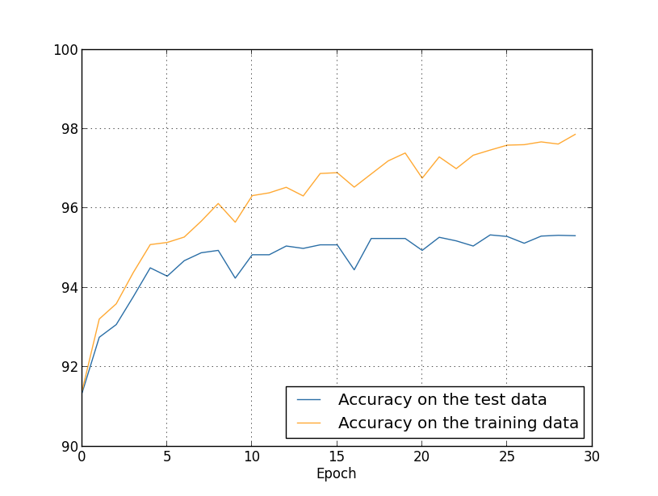
테스트 데이터와 학습 데이터에 대한 정확도는 $1,000$개의 학습 데이터를 사용할 때보다 더 가까운 값으로 나타난다. 특히 학습 데이터에 대한 최상의 분류 정확도는 $97.86%$이고 테스트 데이터에 대한 정확도 $95.33%$보다 단지 $2.53%$ 높다. 이전에 $17.73%$의 차이가 난 것과 비교해보자. 과적합이 여전히 나타나지만 상당히 줄어들었다. 네트워크는 학습 데이터에서 테스트 데이터에 대해 더 일반화를 잘 하고 있다. 일반적으로 과적합을 감소시키는 최선의 방법 중 하나는 학습 데이터의 크기를 늘리는 것이다. 충분히 많은 학습 데이터가 있으면 크기가 큰 네트워크라 할지라도 과적합될 가능성은 적다. 불행히도 학습 데이터를 얻기에는 비용이 많이들고 어려운 점이 있어 항상 실질적인 옵션이 될 수는 없다.
학습 데이터의 양을 늘리는 것은 과적합을 감소시키는 하나의 방법이다. 과적합이 일어나는 정도를 감소시킬 수 있는 다른 방법이 있을까? 가능한 한 가지 방법은 네트워크의 크기를 감소시키는 것이다. 하지만 큰 네트워크large networs는 작은 네트워크smalle networks보다 더 강력한 잠재력을 지니고 있어 이는 마지못해 선택할 수 있는 옵션이다.
다행히도 네트워크와 학습 데이터를 그대로 둔 채 과적합을 감소시키는 다른 기술이 있다. 이를 정규화regularization라 부른다. 이 절에서 가장 흔히 사용하는 정규화 중 하나인 가중치 감쇠weight decay 또는 L2 정규화L2 regularization이라 부르는 기술을 살펴보자. L2 정규화는 비용 함수에 정규화 항regularization term이라 부르는 새로운 항을 추가한다. 정규화된 교차 엔트로피the regularized cross-entropy식은 다음과 같다. $$\begin{eqnarray} C = -\frac{1}{n} \sum_{xj} \left[ y_j \ln a^L_j+(1-y_j) \ln (1-a^L_j)\right] + \frac{\lambda}{2n} \sum_w w^2. \tag{85}\end{eqnarray}$$ 첫 번째 항은 교차 엔트로피에 대한 항이다. 하지만 네트워크의 모든 가중치의 제곱을 합하는 두 번째 항을 추가했다. 두 번째 항을 인자 $\lambda / 2n$으로 곱하며 여기서 $\lambda > 0$은 정규화 파라미터regularization parameter이고, $n$은 학습 데이터 세트의 크기이다. 어떻게 $\lambda$를 선택하는지 뒤에서 알아보도록 하자. 정규화 항은 편향을 포함하지 않는다. 이에 대해 아랫부분에서 설명한다.
물론 이차 비용함수와 같은 다른 비용함수를 정규화하는 것도 가능하다. 비슷한 방법으로 아래와 같이 쓸 수 있다. $$\begin{eqnarray} C = \frac{1}{2n} \sum_x \|y-a^L\|^2 + \frac{\lambda}{2n} \sum_w w^2. \tag{86}\end{eqnarray}$$ 두 경우에 대한 정규화된 비용 함수를 아래와 같이 쓸 수 있다. $$\begin{eqnarray} C = C_0 + \frac{\lambda}{2n} \sum_w w^2, \tag{87}\end{eqnarray}$$ 여기서 $C_0$은 정규화되지 않은 원래의 비용함수이다.
직관적으로 생각해보면 정규화의 효과는 네트워크가 작은 가중치를 학습하는 것을 선호하도록 만드는 것이고 다른 모든 것들은 똑같다. 큰 가중치는 비용 함수의 첫 번째 부분을 상당히 개선시킨다면 허용될 것이다. 즉 정규화는 작은 가중치를 찾는 것과 원래의 비용 함수를 최소화하는 것 사이의 타협점으로 볼 수 있다. 타협의 두 가지 요소 중 상대적인 중요성은 $\lambda$의 값에 의존한다. 원래의 비용 함수를 최소화하는 것을 선호하면 $\lambda$의 값은 작아지고 작은 가중치를 선호하면 $\lambda$의 값은 커진다.
이러한 타협이 왜 과적합을 감소시키는데 도움이 되는지 분명하지 않다. 하지만 이는 분명하다고 알려져 있다. 다음 절에서 왜 도움이 되는지 살펴볼 것이다. 하지만 먼저 정규화가 정말 과적합을 감소시키는 예를 살펴보자.
예를 들기 전에 먼저 정규화된 뉴럴 네트워크에서 확률적 경사 하강 학습 알고리즘을 어떻게 적용시키는지 알아야 한다. 특히 네트워크에서 모든 가중치와 편향에 대한 편도함수 $\partial C / \partial w$와 $\partial C / \partial b$을 계산하는 방법을 알아야 한다. 식 (87) \begin{eqnarray} C = C_0 + \frac{\lambda}{2n} \sum_w w^2 \nonumber\end{eqnarray} 의 편도함수는 다음과 같다. $$\begin{eqnarray} \frac{\partial C}{\partial w} & = & \frac{\partial C_0}{\partial w} + \frac{\lambda}{n} w \tag{88}\\ \frac{\partial C}{\partial b} & = & \frac{\partial C_0}{\partial b}. \tag{89}\end{eqnarray}$$ 2장에서 설명한 것처럼 $\partial C_0 / \partial w$과 $\partial C_0 / \partial b$은 역전파를 이용해 계산할 수 있다. 그러므로 정규화된 비용 함수의 경사를 계산하는 것은 쉽다. 역전파를 이용하고 모든 가중치 항의 편도함수에 $\frac{\lambda}{n} w$을 더하면 된다. 편향에 대한 편도함수는 그대로이고 편향에 대한 경사 하강 학습 규칙은 바뀌지 않는다. $$\begin{eqnarray} b & \rightarrow & b -\eta \frac{\partial C_0}{\partial b}. \tag{90}\end{eqnarray}$$ 가중치에 대한 학습 규칙은 다음과 같다. $$\begin{eqnarray} w & \rightarrow & w-\eta \frac{\partial C_0}{\partial w}-\frac{\eta \lambda}{n} w \tag{91}\\ & = & \left(1-\frac{\eta \lambda}{n}\right) w -\eta \frac{\partial C_0}{\partial w}. \tag{92}\end{eqnarray}$$ 가중치 $w$를 인자 $1-\frac{\eta \lambda}{n}$으로 곱한 것rescale을 제외하고는 경사 하강 학습 규칙과 같다. 이 정규화rescaling은 가중치를 점점 작게 만들기 때문에 가중치 감쇠weight decay라고도 부른다. 언뜻 보기에 가중치가 멈추지 않고 $0$에 가까워지는 것 같다. 하지만 다른 항이 가중치를 증가시키기 때문에 가중치는 $0$에 가까워지지 않으며 정규화 되지 않은 비용 함수를 감소시킨다.
경사 하강이 동작하는 방법에 대해 알아보았다. 확률적 경사 하강에 대해서는 어떨까? 정규화되지 않은 확률적 경사 하강에서 처럼 $m$개의 학습 데이터에 대한 미니 배치를 평균하여 $\partial C_0 / \partial w$을 계산한다. 그러므로 확률적 경사 하강에 대한 정규화된 학습 규칙은 다음과 같다. (식 (20) \begin{eqnarray} w_k & \rightarrow & w_k' = w_k-\frac{\eta}{m} \sum_j \frac{\partial C_{X_j}}{\partial w_k} \nonumber\end{eqnarray} 을 참고하자 ) $$\begin{eqnarray} w \rightarrow \left(1-\frac{\eta \lambda}{n}\right) w -\frac{\eta}{m} \sum_x \frac{\partial C_x}{\partial w}, \tag{93}\end{eqnarray}$$ 여기서 합은 미니 배치에서 학습 데이터 $x$에 대한 값이고 $C_x$은 각 학습 데이터에 대한 (정규화 되지 않은) 비용이다. 이는 가중치 감쇠 인자weight decay factor $1-\frac{\eta \lambda}{n}$을 제외하고 일반적인 확률적 경사 하강 규칙과 동일하다. 이제 편향에 대한 정규화된 학습 규칙을 써보자. 물론 이는 정규화되지 않은 경우와 완전히 동일하다. (식 (21) \begin{eqnarray} b \rightarrow b - \frac{\eta}{m} \sum_x \frac{\partial C_x}{\partial b}, \tag{94}\end{eqnarray} 을 참고하자) 여기서 합은 미니 배치에서 학습 데이터 $x$에 대한 값이다.
정규화가 어떻게 뉴럴 네트워크의 성능을 바꾸는지 알아보자.
$30$개의 은닉 뉴런과 미니 배치 크기 $10$, 학습률 $0.5$, 교차 엔트로피 비용함수로 구성된 네트워크를 사용하자.
하지만 이번에는 정규호 파라미터 $\lambda = 0.1$을 사용하자.
파이썬에서 lambda는 예약어reserved word이므로 변수 이름 lmbda를 사용했다.
또한 validation_data가 아닌 test_data를 사용했다.
엄밀히 말하면 이전에 살펴본 모든 이유 때문에 validation_data을 사용해야 한다.
하지만 이전에 본 정규화 되지 않을 결과와 직접 비교하기 위해 test_data를 사용하였다.
validation_data를 사용하도록 코드를 쉽게 바꿀 수 있으며 이는 비슷한 결과를 낸다.
>>> import mnist_loader
>>> training_data, validation_data, test_data = \
... mnist_loader.load_data_wrapper()
>>> import network2
>>> net = network2.Network([784, 30, 10], cost=network2.CrossEntropyCost)
>>> net.large_weight_initializer()
>>> net.SGD(training_data[:1000], 400, 10, 0.5,
... evaluation_data=test_data, lmbda = 0.1,
... monitor_evaluation_cost=True, monitor_evaluation_accuracy=True,
... monitor_training_cost=True, monitor_training_accuracy=True)
학습 데이터에 대한 비용은 정규화되지 않은 경우* temp 와 같이 전체 시간동안 감소한다.
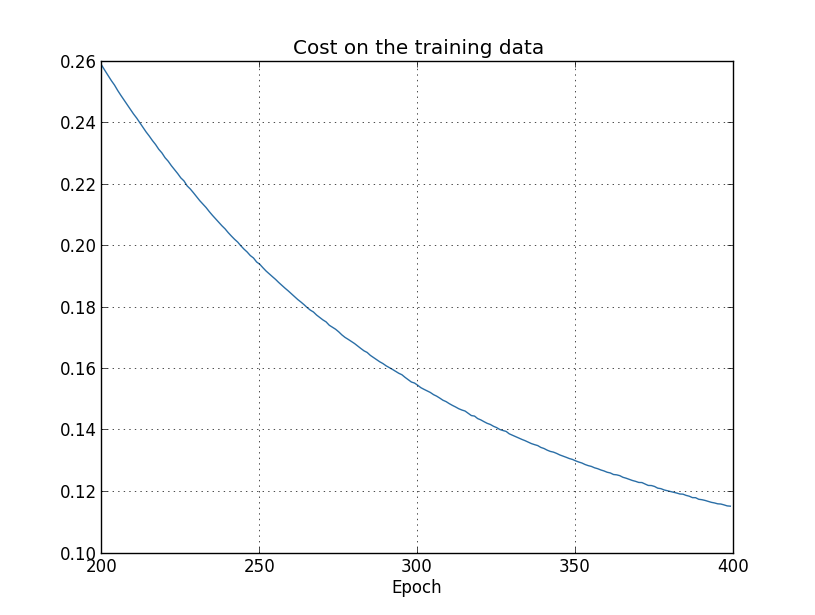
하지만 이번에는 전체 $400$세대 동안 test_data에 대한 정확도는 계속해서 증가한다.

분명히 정규화는 과적합을 억제시켰다. 게다가 정확도는 상당히 높아졌으며 최고 정확도는 $87.1%$에 달한다. 정규화되지 않은 경우의 정확도 $82.27%$와 비교해보자. 실제로 $400$세대를 지나 계속해서 학습하면 상당히 나은 결과를 얻을 수 있다. 경험적으로 정규화는 네트워크를 일반화시키며 과적합 효과를 감소시키는 것 같다.
$1,000$개의 학습 데이터를 사용하는 환경에서 벗어나 $50,000$개의 학습 데이터 이미지 전체를 사용하는 환경으로 돌아가면 어떤 일이 일어날까? 물론 $50,000$개의 이미지를 사용하는 문제에서 과적합은 감소된다는 사실을 이미 보았다. 정규화는 더 도움이 될까? 이전과 같은 하이퍼 파라미터인 $30$ 세대, 학습률 $0.5$, 미니 배치 크기$10$을 사용하자. 하지만 정규화 파라미터를 수정해야한다. 학습 데이터 세트의 크기 $n$이 $n = 1,000$에서 $n = 50,000%으로 바뀌어서 가중치 감쇠 인자 $1 - \frac{\eta \lambda}{n}$도 바뀌기 때문이다. $\lambda = 0.1$을 계속 사용한다면 가중치 감쇠가 덜 일어나고 이에 따라 정규화 효과는 적어진다. 이를 보상하기 위해 $\lambda = 0.5$로 바꾸어야 한다.
먼저 가중치를 초기화 시키고 네트워크를 학습시키자.
>>> net.large_weight_initializer()
>>> net.SGD(training_data, 30, 10, 0.5,
... evaluation_data=test_data, lmbda = 5.0,
... monitor_evaluation_accuracy=True, monitor_training_accuracy=True)
결과는 다음과 같다.

여기에 좋은 소식이 많다. 먼저 테스트 데이터에 대한 분류 정확도는 정규화되지 않았을 때인 $95.49%$에서 $96.49%$로 향상되었다. 이느 매우 큰 개선이다. 두번째로 학습 데이터와 테스트 데이터에 대한 격차가 $1%$정도로 이전보다 훨씬 줄어들었다. 이는 여전히 상당한 격차이지만 과적합을 줄이면서 상당한 진전을 만들어 냈다.
마지막으로 $100$개의 은닉 뉴런을 사용하고 정규화 파라미터 $\lambda = 5.0$을 사용할 때 얻을 수 있는 테스트 분류 정확도를 살펴보자. 여기서 과적합에 대한 상세한 분석은 하지 않을 거고, 교차 엔트로피 비용함수와 L2 정규화를 사용할 때 얻을 수 있는 정확도는 얼마인지 단지 재미를 위해 살펴볼 것이다.
>>> net = network2.Network([784, 100, 10], cost=network2.CrossEntropyCost)
>>> net.large_weight_initializer()
>>> net.SGD(training_data, 30, 10, 0.5, lmbda=5.0,
... evaluation_data=validation_data,
... monitor_evaluation_accuracy=True)
최종적으로 검증 데이터에 대한 분류 정확도는 $97.92%$이다. $30$개의 은닉 뉴런을 사용하는 경우보다 상당한 개선을 보였다. 사실 조금만 더 조정하여 $60$세대 동안 $\eta = 0.1$과 $\lambda = 5.0$에서 구동하면 $98%$의 장벽을 깰 수 있고 검증 데이터에 대한 분류 정확도 $98.04%$를 달성할 수 있다. $152$줄의 코드인 것은 나쁘지 않다.
과적합을 감소시키고 분류 정확도를 증가시키는 방법으로 정규화를 설명했다. 사실 이러한 이점만 있는 것은 아니다. (무작위로) 가중치를 다르게 초기화시켜 MNIST 네트워크를 여러 번 작동할 때 비정규화된 경우 비용함수는 국소 최솟값local minimum에 빠진다는 사실을 경험적으로 발견했다. 작동할 때마다 상당히 다른 결과를 낼 때도 있다. 대조적으로 정규화된 경우 쉽게 따라할 수 있는replicable 결과를 낸다.
왜 이런 일이 일어날까? 경험적으로heuristically 비용함수가 정규화되지 않으면 가중치 벡터의 길이는 길어질 것이고 다른 것들은 그대로 같다. 시간이 지날수록 가중치 벡터는 실제로 커진다. 그래서 벡터의 길이가 길면 경사 하강에 의한 변화가 방향에 작은 변화를 주므로 가중치 벡터는 어느정도 같은 방향을 가리킨다. 이 현상은 학습 알고리즘이 적절하게 가중치 공간weigth space을 탐색하는 것을 어렵게 만들며 결과적으로 비용 함수의 최솟값을 찾는것이 어려워진다.
정규화가 과적합을 감소시키는 사실을 경험적으로empirically 살펴보았다. 이는 고무적이지만 불행히도 정규화가 왜 도움이 되는지 명확하지 않다. 무슨 일이 일어나는지 설명하는 표준적인 이야기는 다음과 같다. 적은 가중치는 어떤 면에서 적은 복잡도이고 데이터에 대한 더 간결하고 강력한 설명을 하므로 선호되어야 한다. 이는 간단한 이야기이지만 수상하고 미심쩍은 몇몇 요소를 포함한다. 이야기를 풀어서 살펴보자. 이를 위해 모델을 만들고 싶은 간단한 데이터 세트가 있다고 가정하자.
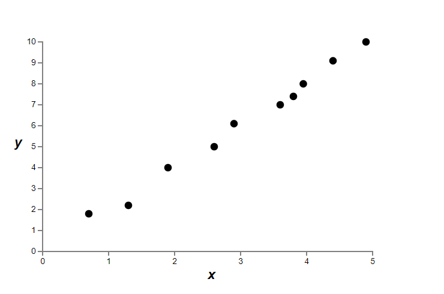
여기서 암묵적으로 현실 세계의 데이터를 나타내는 $x$와 $y$로 어느 정도 현실 세계 현상을 공부할 것이다.
목표는 $x$에 대한 함수 $y$를 예측하는 모델을 개발하는 것이다.
그런 모델을 구축하기 위해 뉴럴 네트워크를 이용할 수 있지만 더 간단한 것을 사용할 것이다.
$y$를 $x$에 대한 다항식으로 모델링할 것이다.
다항식을 이용하여 분명하고 투명하게 나타내도록 뉴럴 네트워크 대신 사용할 것이다.
다항식의 경우를 먼저 이해하면 뉴럴 네트워크로 해석할 수 있다.
위의 그래프에서 $10$개의 점이 있고 데이터에 정확히 들어맞는 유일한 $9$차 다항식 $y = a_0 x^9 + a_1 x^8 + \ldots + a_9$을 찾을 수 있다.
이 다항식*
Numpy의 polyfit을 이용해 계수를 찾기 쉽지만
여기서는 계수를 명시하지 않을 것이다.
다항식의 정확한 형태는 소스코드에서 볼 수 있다.
temp
에 대한 그래프는 아래와 같다.
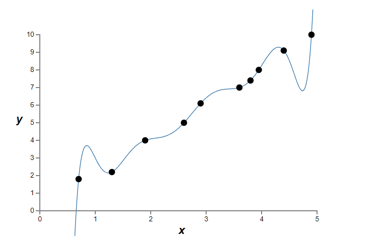
다항식은 정확히 일치한다. 하지만 선형 모델 $y = 2x$를 이용할 수도 있다.
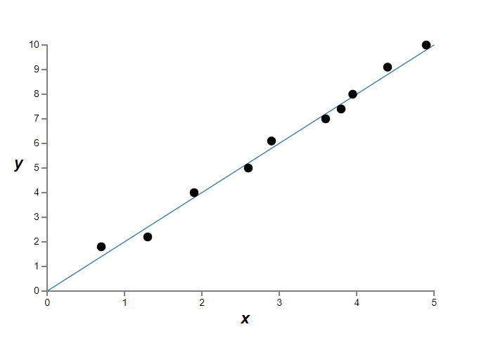
어느 것이 더 나은 모델일까? 어느 것이 더 사실에 가까울까? 그리고 같은 현실 세계의 현상에 대한 다른 데이터에 대한 어느 것이 더 잘 일반화할까?
이는 어려운 질문이다. 사실 근본적인 현실 세계의 현상에 대한 더 많은 정보 없이 위의 어떤 질문에 대해서도 확신을 갖고 답할 수 없다. 하지만 두 가지 가능성을 고려해보자. (1) 사실 $9$차 다항식은 현실 세계의 현상을 잘 설명하는 모델이고 그러므로 일반화를 완벽하게 할 것이다. (2) 올바른 모델은 $y = 2x$이지만 측정 오차measurement error때문에 추가적인 잡음noise이 있고 그래서 모델은 정확하게 데이터와 맞지 않다.
두 가지 가능성 중 어느 것이 맞는지 연역적으로a priori 설명할 수 없다. 논리적으로 두 가지 모두 사실일 수 있다. 그리고 그것은 사소한 차이가 아니다. 제공된 데이터에 대해 두 가지 모델 사이에 아주 작은 차이만 있다. 하지만 위의 그래프에서 본 어떤 값보다 훨씬 큰 $x$에 대한 $y$의 값을 예측하고자 한다고 가정하자. 그러면 두 가지 모델 사이에 큰 차이가 있을 것이다. $9$차 다항식 모델은 $x^9$ 항이 지배하는 반면 선형 모델은 그대로 선형으로 남아있는다.
과학에서 하나의 관점은 간단한 설명을 선택해야 한다는 것이다. 많은 데이터를 설명하는 간단한 모델을 찾을 때 "유레카!Eureka"라는 말을 한다. 무엇보다 간단한 설명은 우연히 나타나지 않는다. 오히려 현상에 대한 근본적인 사실을 설명해야 한다고 생각한다. 이 경우 모델 $y = 2x+{\rm noise}$은 $y = a_0 x^9 + a_1 x^8 + \ldots$보다 간단하다. 우연히 그 간결함이 일어났다면 놀라울 것이므로 $y = 2x+{\rm noise}$은 근본적인 진실을 설명하는 것을 의심한다. 이러한 관점에서 $9$차식 모델은 국소 잡음local noise을 단지 학습한다. 그래서 $9$차 식 모델은 이러한 특정 데이터에 대해서는 완벽하게 동작하지만 다른 데이터를 일반화하지 못하며 선형 모델noisy linear model은 더 잘 예측할 것이다.
이런 관점이 뉴럴 네트워크에서 무엇을 의미하는지 살펴보자. 정규화된 네트워크의 경우처럼 네트워크가 대부분 작은 가중치를 가진다고 가정하자. 작은 가중치는 입력을 여기저기서 무작위로 바꾸더라도 네트워크의 행동은 많이 변하지 않는다는 것을 의미한다. 이는 정규화된 네트워크가 데이터의 국소 잡읍을 학습하지 못하도록 만든다. 이를 하나의 근거evidence가 네트워크의 출력에 많이 중요하지 않다는 것으로 생각할 수 있다. 대시 정규화된 네트워크는 학습 데이터 세트 전체에서 흔히 볼 수 있는 근거에 대해 반응해서 학습한다. 대조적으로 큰 가중치를 갖는 네트워크는 입력의 작은 변화에 반응하여 행동을 바꾼다. 그러므로 정규화되지 않은 네트워크는 큰 가중치를 이용해서 학습 데이터에 있는 잡음에 대한 많은 정보를 담고 있는 복잡한 모델을 학습한다. 요약하면 정규화된 네트워크는 학습 데이터에서 자주 볼 수 있는 패턴에 근거해 상대적으로 간단한 모델을 만들고 학습 데이터에 있는 잡음의 특성을 학습하지 않는다. 네트워크가 현상에 대해 실제로 학습하여 잘 일반화하도록 강요할 것이라는 희망이 있다.
그렇기는 하지만 더 간단한 설명을 선호하는 아이디어는 당신을 긴장하게 만든다. 사람들은 때때로 이 아이디어를 "오컴의 면도날Occam's Razor"이라 부르고 일반적인 과학 원칙인 것처럼 열심히 적용한다. 하지만 물론 이는 일반적인 과한 원리가 아니다. 더 복잡한 설명에 대해 간단한 설명을 선허한다는 연역적으로 논리적인 이유가 없다. 실제로 때론 더 복잡한 설명이 옳다고 밝혀졌다.
더 복잡한 설명이 옳다고 밝혀진 두 가지 예를 설명해보겠다.
$1940$년대 물리학지 마르셀 쉐인Marcel Schein은 자연의 새로운 입자를 발견했다고 발표했다.
그가 일하는 회사 General Electric은 기뻐하며 그 발견을 널리 알렸다.
그러나 물리학자 한스 베테Hans Bethe는 회의적이였다.
베테는 쉐인을 찾아갔고 쉐인의 새로운 입자의 경로를 보여주는 플레이트plate를 보았다.
쉐인은 베테에게 플레이트를 계속해서 보여주었고 베테는 각 플레이트에서 버려야할 데이터가 있다는 것을 알아냈다.
마침내 쉐인은 좋은 결과를 보이는 플레이트를 베테에게 보여주었다.
베테는 이는 단지 통계적인 행운이라고 말했다.
쉐인은 말했다.
"맞습니다. 이것이 통계가 될 확률은 당신의 공식을 따른다해도 $1/5$입니다."
베테는 말했다.
"하지만 이미 5개의 플레이트를 봤습니다."
마침내 쉐인은 다음과 같이 말했다.
"하지만 플레이트에서 각 플레이트에 대해 당신은 다른 이론으로 설명했고 저는 모든 플레이트를 설명하는 하나의 가설hypothesis을 세웠습니다."
베테는 다음과 같이 답했다.
"당신과 제 설명 중 단 하나의 차이는 당신은 틀렸고 제 설명의 모든 것은 맞다는 사실입니다.
당신의 하나의 설명은 틀렸고 저의 다수의 설명은 모두 맞습니다."
후속 실험에서 네이처Nature는 베테에 동의했고 쉐인의 입자는 더 이상 존재하지 않는다.*
이 이야기는 물리학자 리차드 파인만Richard Feynman이
역사학자 찰스 와이너Charles Weiner와의 인터뷰에서 말했다.
두 번째 예로 1895년 천문학자 위르뱅 르베리에Urbain Le Verrier는 수성의 궤도가 뉴턴의 중력법칙을 따르지 않는 것을 관찰했다. 이는 뉴턴의 이론과 약간의 편차가 있었고 그 당시의 몇몇 설명은 뉴턴의 이론은 어느 정도 맞지만 약간의 변형이 필요하다는 것이다. $1916$년 아인슈타인Einstein은 그 편차는 뉴턴의 중력법칙과는 근본적으로 다르면서 훨씬 더 복잡한 수학을 기본으로 한 그의 일반 상대성 이론을 이용하면 잘 설명할 수 있다는 것을 보여주었다. 추가적으로 복잡하지만 아인슈타인의 설명은 맞다고 받아들여지고 있고 뉴턴의 중력법칙은 변형된 형태로도 틀렸다고 받아들여진다. 이는 아인슈타인의 이론이 뉴턴의 이론이 설명하지 못하는 다른 현상들을 설명하기 때문이다. 게다가 아인슈타인의 이론은 뉴턴의 중력법칙이 전혀 예측하지 못하는 몇몇 현상을 정확하게 예측한다. 하지만 이러한 점들은 초기에 명확하지 않았다. 단순함만을 놓고 판단했다면 뉴턴의 이론을 수정한 형태가 더 매력적이었을 것이다.
이 이야기에서 얻을 수 있는 세 가지 교훈이 있다. 첫 번째 두 가지 설명 중 어느 것이 더 "간단한지" 선택하는 것은 미묘해서 결정하기 어렵다. 두 번째로 그러한 판단을 할 수 있더라도 간단함은 많은 주의를 기울여 사용해야한다. 세 번째로 모델의 진정한 테스트는 간단함이 아니고 새로운 행동의 영역에서 새로운 현상을 얼마나 잘 예측하는지를 보는 것이다.
그렇긴 하지만 주의를 기울일 필요가 있으며 정규화된 뉴럴네트워크가 정규화되지 않은 네트워크보다 더 잘 일반화한다는 것은 경험적 사실(empirical fact)이다. 그러므로 책의 나머지 부분에서 정규화를 자주 사용할 것이다. 위 이야기는 단지 정규화가 네트워크를 일반화하는데 도움을 주는 이유에 대한 완전히 설득력 있는 이론적 설명이 아직 없는 이유를 전달하기 위해 포함했다. 실제로 연구자들은 정규화에 대한 다른 접근법을 시도하는 논문을 계속해서 쓰고 있고 어느 것이 더 나은지 비교하고 왜 더 나은지 혹은 나쁜지 이해하려고 시도하고 있다. 그러므로 정규화를 클루지(kludge, 서투른 해결법)로 볼 수 있다. 정규화가 도움은 되지만 완전히 만족할만한 체계적인 이해는 못 하고 있고 단지 불충분한 경험적 발견(heuristics)와 경험 법칙(rule of thumb)만 있다.
여기에 과학의 핵심으로 들어가는 더 심오한 문제가 있다. 이는 어떻게 일반화를 하느냐에 대한 물음이다. 정규화는 네트워크를 잘 일반화하는 계산하는 마술 지팡이이지만 어떻게 일반화가 이루어지는지 원칙적인 이해를 할 수 없으며 어느 것이 최상의 접근법인지도 모른다.* 이는 귀납의 문제로 귀결된다. temp 일상생활에서 인간은 아주 잘 일반화하기 때문에 이는 특히 짜증이 나는 상황이다. 단지 몇 장의 사진을 아이에게 보여주면 아이는 다른 코끼리를 인식하는 방법을 곧 잘 학습한다. 물론 코뿔소를 코끼리로 혼동하는 등 실수를 하는 경우도 있지만 일반적으로 이 과정은 상당히 정확하게 일어난다. 따라서 인간은 뇌(brain)라는 엄청난 수의 자유 파라미터(free parameter)로 구성된 시스템을 가지고 있다. 그래서 하나 이상의 학습 이미지를 보고 난 후 시스템은 다른 이미지를 일반화 하는 방법을 학습힌다. 이런 점에서 인간의 뇌는 놀라울 정도로 정규화를 잘 해낸다. 어떻게 이런 일이 일어나는 걸까? 현시점에서 어떻게 일어나는지 아무도 모른다. 나는 다가올 몇 년안에 인공 뉴럴 네트워크를 정규화하는 더욱 강력한 기술들이 개발될 것이라 기대한다. 그 기술들은 궁극적으로 뉴럴네트워크가 심지어 아주 작은 데이터 세트를 일반화하는 것도 가능하게 만들 것이다.
사실 네트워크는 이미 연역적으로(a priori) 기대한 것 보다 더 잘 일반화한다. $100$개의 은닉 뉴런을 가지는 네트워크는 거의 $80,000$개의 파라미터를 가진다. 학습 데이터로 단지 $50,000$개의 이미지만 가지는데 말이다. 이는 $80,000$차 다항식을 $50,000$개의 데이터에 맟추려는(fit) 시도와 비슷하다. 모든 것을 생각해 볼 때 이 네트워크는 끔찍하게 과적합할 가능성이 높다. 하지만 이전에 본 것처럼 그러한 네트워크는 사실 일반화를 아주 잘 한다. 이 경우는 왜 그런걸까? 잘 이해되지 않는다. 다층 네트워크에서 경사 하강 학습의 역동성(dynamics)이 자가 정규화(self-regularization) 효과가 있다고 추측되어진다. 이는 예외적으로 운이 좋은 경우이지만 왜 이런지 이해하지 못하는 불안한 면도 있다. 반면 가능한 경우에 실용적인 접근법을 채택하고 정규화를 사용할 것이다. 뉴럴 네트워크는 이에 대해 더 나을 것이다.
이전에 설명하지 않은 상세한 사항으로 돌아가 이 절을 마무리 하자. L2 정규화는 편향을 제약하지 않는다는 사실을 살펴보자. 물론 편향을 정규화하도록 정규화 절차를 수정하는 것은 쉬울 것이다. 경험적으로(empirically) 이는 결과를 많이 바꾸지 않으며 편향을 정규화하느냐 마느냐는 단지 관습의 문제이다. 하지만 큰 편향을 가지면 큰 가중치를 갖는 경우처럼 뉴런은 입력에 민감하게 반응하지 않는다는 점을 알아두어야 한다. 그러므로 네트워크가 학습 데이터에서 잡음을 학습하게 만드는 큰 편향에 대해 걱정할 필요는 없다. 동시에 큰 편향을 허용하면 네트워크는 융통성 있게 행동할 수 있다. 특히 큰 편향은 뉴런이 쉽게 포화되도록 만들며 이는 때로는 원하는 결과이다. 이러한 이유로 정규화할 때 편향 항을 포함하지 않는다.
L2 정규화말고 정규화를 하는 여러가지 방법이 있다. 사실 여러 많은 기술들이 개발되었지만 모든 것을 요약해서 알려줄 순 없다. 이 절에서는 과적합을 감소시키는 세 가지 다른 방법을 간단하기 설명한다. 세 가지 방법은 L1 정규화, 드랍아웃(droptout), 인위적으로 학습 데이터 세트의 크기를 늘리는 것이다. 이전에 설명했던 방식처럼 이 기술에 대해 깊이있게 들어가진 않을 것이다. 대신 목적은 주된 아이디에어 익숙해지는 것이고 다양한 정규화 방법이 가능하다는 것을 이해하는 것이다.
L1 정규화(L1 regularization): 이 방법은 가중치의 절댓값의 합을 더해 정규화되지 않은 비용함수를 수정한다. $$\begin{eqnarray} C = C_0 + \frac{\lambda}{n} \sum_w |w|. \tag{95}\end{eqnarray}$$ 직관적으로 보면 이는 L2 정규화와 유사하다. 큰 가중치에 대해서는 불이익을 줘서 네트워크가 작은 가중치를 선호하도록 만든다. 물론 L1 정규화의 항은 L2 정규화의 항과 완전히 같지는 않다. 따라서 정확히 같은 행동을 얻을 수 없다. L1 정규화를 이용해 학습한 네트워크와 L2 정규화를 이용한 네트워크가 어떻게 다른지 살펴보자.
먼저 비용함수의 편도함수를 살펴볼 것이다. 식 (95) $$\begin{eqnarray} C = C_0 + \frac{\lambda}{n} \sum_w |w| \nonumber\end{eqnarray}$$ 를 미분하면 다음과 같다. $$\begin{eqnarray} \frac{\partial C}{\partial w} = \frac{\partial C_0}{\partial w} + \frac{\lambda}{n} \, {\rm sgn}(w), \tag{96}\end{eqnarray}$$ 여기서 ${\rm sgn}(w)$은 $w$의 부호이다. 즉 $w$가 양수이면 $+1$이고 $w$가 음수이면 $-1$이다. 이 식을 이용하면 확률적 경사 하강이 L1 정규화를 하도록 역전파를 수정할 수 있다. L1 정규화된 네트워크에 대한 결과적으로 수정된 규칙은 다음과 같다. $$\begin{eqnarray} w \rightarrow w' = w\left(1 - \frac{\eta \lambda}{n} \right) - \eta \frac{\partial C_0}{\partial w}. \tag{98}\end{eqnarray}$$ 여기서 평소대로 미니 배치의 평균을 이용해 $\partial C_0 / \partial w$을 구할 수 있다. L2 정규화에 대한 수정된 규칙과 비교해 보자.(식 (95) $$\begin{eqnarray} w \rightarrow \left(1-\frac{\eta \lambda}{n}\right) w -\frac{\eta}{m} \sum_x \frac{\partial C_x}{\partial w}, \nonumber\end{eqnarray}$$ 을 참고하자 ) 두 식에서 정규화는 가중치를 줄이는(shrink) 효과가 있다. 이는 큰 가중치에 불이익을 준다는 직관과 일치한다. 하지만 가중치가 줄어드는 방법은 다르다. L1 정규화는 가중치를 $0$을 향해 상수로 줄여나간다. L2 정규화는 가중치를 $w$에 비례하는 양으로 줄인다. 그러므로 특정 가중치가 큰 크기 $|w|$을 가지면 L1 정규화는 L2 정규화보다 적게 줄어든다. 대조적으로 $|w|$이 작으면 L1 정규화는 L2 정규화보다 훨씬 많이 가중치를 줄인다. 결과적으로 L1 정규화는 상대적으로 적은 수의 중요도가 높은(high-importance) 연결을 하는 가중치에 집중하고 다른 가중치는 $0$으로 만든다.
위에서 $w = 0$일 때 편도함수 $\partial C / \partial w$은 정의되지 않는다는 문제에 대해 대충 넘어갔다. 함수 $|w|$가 $w = 0$에서 뾰족한(sharp) "코너(corner)"를 가지기 때문에 이 점에서 미분할 수 없다. 하지만 괜찮다. $w = 0$에서 확률적 경사 하강에 대해 일반적인 (정규화되지 않은) 규칙을 적용할 것이다. 직관적으로 정규화의 효과는 가중치를 줄이며 이미 $0$인 가중치는 줄일 수 없기 때문에 괜찮다. 조금 더 정확하게 말하면 $\mbox{sgn}(0) = 0$으로 식 (96) $$\begin{eqnarray} \frac{\partial C}{\partial w} = \frac{\partial C_0}{\partial w} + \frac{\lambda}{n} \, {\rm sgn}(w) \nonumber\end{eqnarray}$$ 과 (97) $$\begin{eqnarray} w \rightarrow w' = w-\frac{\eta \lambda}{n} \mbox{sgn}(w) - \eta \frac{\partial C_0}{\partial w} \nonumber\end{eqnarray}$$ 을 사용할 것이다. 이를 통해 확률적 경사 하강을 L1 정규화하는 간결한 규칙을 얻을 수 있다.
드랍아웃(Dropout): 드랍아웃(dropout)은 근본적으로 다른 정규화 기술이다. L1, L2 정규화와 달리 드랍아웃은 비용함수를 수정하지 않는다. 대신 드랍아웃은 네트워크 자체를 수정한다. 드랍아웃이 동작하는 이유가 무엇인지 결과는 무엇인지 살펴 보기에 앞서 어떻게 동작하는지 기본 메카니즘을 살펴보자.
네트워크를 학습시킨다고 가정하자.
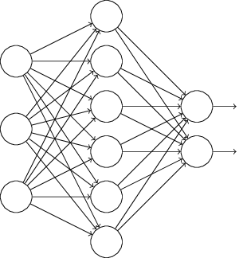
특히 학습 입력 $x$와 대응하는 원하는 출력 $y$가 있다고 가정하자.
보통은 네트워크에 $x$를 앞으로 전달하여(forward-propagate) 학습한다.
그리고 역전파하여 경사에 대한 기여(contribuion to the gradient)을 결정한다.
드랍아웃은 이 과정을 수정한다.
네트워크에서 입력과 출력 뉴런은 그대로 둔 채 은닉 뉴런의 절반을 무작위로 (그리고 임시로) 삭제한다.
이렇게 하면 다음과 같이 네트워크가 구성된다.
드랍아웃 뉴런(dropout neuron) 즉 일시적으로 삭제된 뉴런은 고스트 입력(ghosted in)된다.
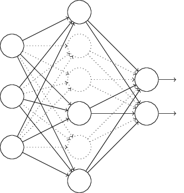
수정된 네트워크에 입력 $x$를 앞으로 전파(forward-propagate)한 다음에 결과 또한 수정된 네트워크로 역전파(backpropagate)한다.
하나의 미니 배치에 대해 이를 한 후에 적절한 가중치와 편향을 갱신한다.
그런 다음 이 과정을 반복하고 드랍아웃 뉴런을 복원시킨다.
그리고 다시 삭제할 은닉 뉴런을 무작위로 고르고 다른 미니 배치에 대해 경사를 측정하여 가중치와 편향을 갱신한다.
이 과정을 계속 반복해서 네트워크는 가중치와 편향 집합을 학습한다. 물론 이 가중치와 편향은 절반의 은닉 뉴런이 드랍아웃(dropped out)된 채로 학습될 것이다. 실제로 완전한 네트워크를 동작시킬 때 이는 두 배의 은닉 뉴런이 활성화된다는 것을 의미한다. 이를 보상하기 위해 은닉 뉴런에서 나오는 가중치를 절반으로 나눈다.
드랍아웃 과정은 이상하고 임시적인(ad hoc) 방법이라 볼 수 있다. 왜 드랍아웃은 정규화에 도움이 될까? 잠시 드랍아웃에 대한 생각을 멈추고 표준적인 방법 (드랍아웃을 사용하지 않는 방법)으로 뉴럴 네트워크를 학습시킨다고 생각해보자. 특히 같은 학습 데이터를 사용해 다른 뉴럴 네트워크를 학습시킨다고 상상하자. 물론 네트워크는 동일하게 시작하지 않을 수 있으며 학습 결과로 네트워크는 서로 다른 결과를 낼 수 있다. 다른 출력이 나오면 어느 출력을 받아 들일지 평균하거나 투표를 통해 선택할 수 있다. 예를 들어 다섯 개의 네트워크를 학습시켰고 그 중 세 개각 숫자를 "3"으로 분류했다면 아마도 이는 정말 "3"일 가능성이 있다. 다른 두 개의 네트워크가 아마도 실수를 했을 것이다. 이렇게 평균하는 방법은 (비용이 크지만) 과적합을 줄이는 강력한 방법이다. 다른 네트워크는 서로 다른 방식으로 과적합될 것이고 이를 평균하는 것은 과적합을 제거할 수 있기 때문이다.
이게 왜 드랍아웃과 관련이 있을까? 발견적인 방법으로(heuristically) 다른 뉴런의 집합을 드랍아웃하는 것은 다른 네트워크를 학습하는 것과 비슷하다. 그러므로 드랍아웃 과정은 많은 수의 다른 네트워크의 효과를 평균하는 것과 같다. 다른 네트워크는 서로 다른 방식으로 과적합되므로 드랍아웃의 순 효과(net effect)는 과적합을 줄일 것이다.
드랍아웃에 대한 발견적(heuristic) 설명은 이 기술을 사용하는 초창기 논문 중 하나* ImageNet Classification with Deep Convolutional Neural Networks, by Alex Krizhevsky, Ilya Sutskever, and Geoffrey Hinton (2012). 에 나와있다. "이 기술은 뉴런은 다른 특정 뉴런의 존재에 의존할수 없으므로 복잡한 뉴런의 공동 적응(co-adaptation)을 감소시킨다. 그러므로 무작위로 뽑힌 서로 다른 뉴런의 부분집합과 함께 더욱 뚜렷한 특징을 배운다." 즉 네트워크를 예측하는 모델로 생각한다면 드랍아웃을 모델이 개별 증거의 손실(loss)에 견고하게 만드는 확실한 방법으로 생각할 수 있다. 이 점에서 가중치를 감소시키는 L1, L2 정규화와 어느정도 비슷하다. 따라서 네트워크에서 개별 연결이 손실되지 않도록 만든다.
물론 드랍아웃의 진정한 척도는 뉴럴 네트워크의 성능을 성곡적으로 향상시켰다. 드랍아웃을 도입한 원래의 논문* temp 은 다른 많은 과제에 이를 적용시켰다. 특히 MNIST 숫자 분류에 드랍아웃을 적용시킨 것은 우리에게 흥미롭게 다가온다. 논문에서는 우리가 고려한 것과 비슷하게 바닐라 피드포워드 뉴럴 네트워크(vanilla feedforward neural network)를 이용했다. 그러한 구조를 이용해 누구나 얻을 수 있는 최상의 결과는 테스트 데이터 세트에 대한 $98.4%$의 분류 정확도라고 논문은 말한다. 그들은 드랍아웃과 수정된 L2 정규화를 조합하여 $98.7%$의 정확도를 달성했다. 이미지, 언어인식과 자연어 처리 등의 여러 과제에서 비슷하게 인상적인 결과를 얻었다. 드랍아웃은 특히 과적합의 문제가 극심하게 나타나는 크고 깊은 네트워크(large, deep networks)를 학습하는데 유용하다.
인공적으로 학습데이터 늘리기(Artificially expanding the training data:
이전에 $1,000$개의 학습 이미지만 사용할 때 MNIST 분류 정확도가 $80%$ 중반대로 떨어지는 것을 보았다.
적은 학습 데이터는 네트워크가 인간이 숫자를 쓰는 변형된 방식에 적게 노출되는 것을 의미하므로 놀라운 일은 아니다.
$30$개의 은닉 뉴런을 가지는 네트워크를 다양한 크기의 학습 데이터 세트로 학습하여 그에 따라 성능이 어떻게 변하는지 살펴보자.
미니 배치의 크기는 $10$, 학습률 $\eta = 0.5$, 정규화 파라미터 $\lambda = 5.0$, 교차 엔트로피 비용함수를 사용하여 학습시킨다.
완전한 학습 데이터 세트가 사용되면 $30$ 세대 동안 학습을 시키고, 더 적은 학습 세트가 사용되면 비례하여 세대의 수를 늘려 학습시킨다.
학습 데이터 세트마다 가중치 감쇠 인자를 동일하게 두기 위해 전체 학습 데이터 세트를 사용하면 정규화 파라미터를 $\lambda = 5.0$로 하고 더 적은 학습 데이터 세트를 사용하면 비례하여 $\lambda$를 축소한다.*
temp
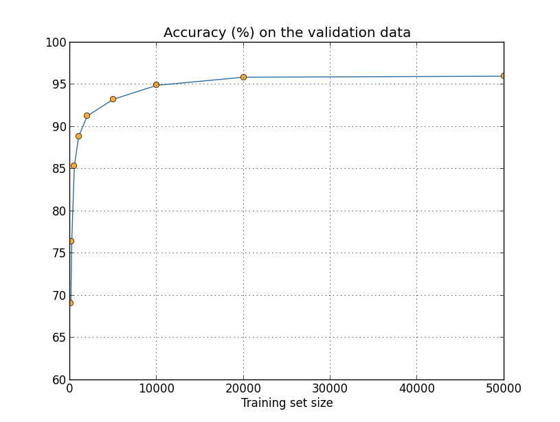
더 많은 학습 데이터를 사용하면 분류 정확도는 상당히 향상된다.
더 많은 데이터를 사용한다면 아마도 이러한 향상은 계속될 것이다.
물론 위의 그래프를 보면 점점 포화되는 것을 볼 수 있다.
하지만 학습 세트 크기를 대수적으로(logarithmically) 표현하여 그래프를 다시 그려보자.
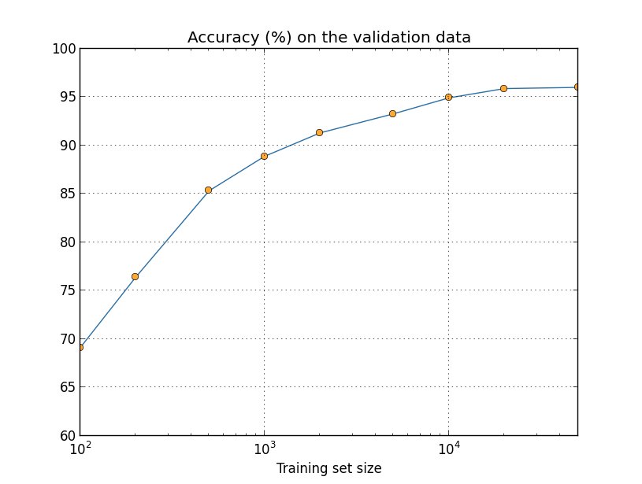
그래프는 끝까지 올라가는 것처럼 보인다.
$50,000$개의 데이터가 아니라 백 만개 혹은 수십 억개의 손글씨 데이터를 사용하면 이 작은 네트워크에서도 상당히 좋은 성능을 얻을 수 있다는 것을 그래프를 통해 알 수 있다.
더 많은 학습 데이터를 얻는 것은 좋은 아이디어이다.
하지만 불행히도 이는 비용이 많이 들며 실질적으로 항상 가능하지 않다.
그래도 꽤 좋은 성능을 낼 수 있는 다른 아이디어가 있으며 이 방법은 인공적으로 학습 데이터를 늘리는 것이다.
예를 들어 숫자 $5$를 나타내는 MNIST 학습 이미지를 얻었다고 가정하자.
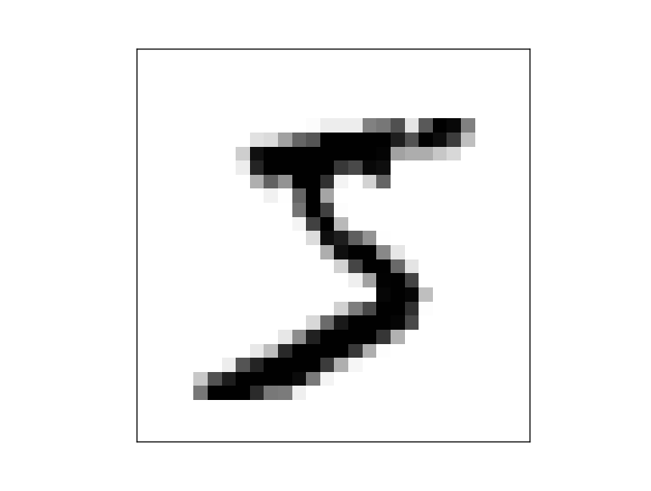
그리고 예를 들어 약 $15$도 정도 회전시킨다고 하자.
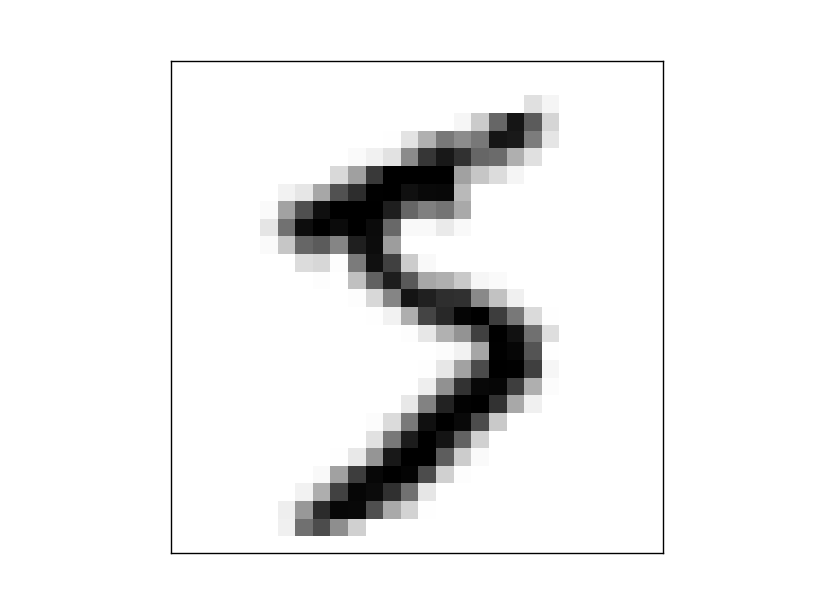
이는 여전히 같은 숫자이지만 픽셀 수준에서 보면 현재 MNIST 학습 데이터에 있는 어떤 이미지와도 상당히 다르다.
이 이미지를 학습 데이터에 추가하면 네트워크가 숫자를 분류하는 방법을 더 학습하도록 만들 수 있다.
게다가 이 이미지 하나의 경우만 해당하는 것은 아니다.
모든 MNIST 학습 이미지에 대해 작은 회전을 많이하여 학습 데이터를 늘릴 수 있으며 늘어난 학습 데이터를 이용해 네트워크의 성능을 향상시킬 수 있다.
이 생각은 매우 강력하며 널리 이용되고 있다. 이 아이디어를 변형해 MNIST에 적용한 논문* temp 의 결과를 살펴보자. 그들이 생각한 뉴럴 네트워크의 구조 중 하나는 우리가 사용한 것과 비슷하며 $800$개의 은닉 뉴런과 교차 엔트로피 비용함수를 사용하는 피드포워드(feedforward) 네트워크이다. 그들은 표준 MNIST 학습 데이터를 이용한 네트워크로 테스트 세트에 대해 $98.4%$의 분류 정확도를 달성했다. 그들은 위에서 설명한 회전(rotation)뿐만 아니라 이미지를 번역(translating)하고 기울이기(skewing)도 하면서 학습 데이터를 확장했다. 그들은 확장한 데이터 세트를 이용해 학습을 시켜 네트워크의 정확도를 $98.9%$까지 높였다. 또한 무작위로 움직이는 손 근육의 진동을 모방한 특별한 이미지 왜곡 유형인 "탄성 변형(elastic distortion)"을 이용해 실험했다. 탄성 변형을 이용해 데이터를 확장해 더 높은 정확도인 $99.3%$를 달성했다. 네트워크를 실제 손글씨에서 발견할 수 있는 여러 종류의 변형에 노출시켜 네트워크의 경험을 효과적으로 넓히고 있다.
이 아이디어에 대한 변형을 이용해 손글씨 인식뿐 아니라 여러 학습 과제에 대한 성능을 향상시킬 수 있다. 실제 세계의 변형을 반영하는 연산을 적영해 학습 데이터를 늘리는 것이 일반적인 원칙이다. 이렇게 하는 방법을 생각하는 것은 어렵지 않다. 예를 들어 음성 인식을 하는 뉴럴 네트워크를 개발한다고 가정해보자. 인간은 배경 잡음(background noise) 같은 왜곡이 있더라도 음성을 인식할 수 있다. 그러므로 배경 잡음을 추가해 데이터의 수를 늘릴 수 있다. 또한 음성의 속도가 낮든 높든 인간은 인식할 수 있다. 그래서 이는 학습 데이터를 늘릴 수 있는 또 다른 방법이다. 이러한 기술이 항상 사용되는 것은 아니다. 예를 들어 노이즈를 추가해 학습 데이터를 늘리는 대신에 네트워크 입력에 노이즈 감소 필터(noise reduction filter)를 적용하는 것이 효과적일 수 있다. 그래도 학습 데이터를 늘리는 아이디어를 기억해 두는 것이 좋으며 이를 적용할 방법을 찾아보자.
위에서 본 것처럼 MNIST 학습 데이터를 늘리는 한 가지 방법은 학습 이미지를 약간 회전(rotation)시키는 것이다. 임의로 학습 데이터를 많이 회전하면 어떠한 문제가 일어날 수 있을까?
빅 데이터를 제외하고 분류 정확도를 비교하는 것의 의미(An aside on big data and what it means to compare classification accuracies):
학습 데이터 세트 크기에 대해 뉴럴 네트워크의 정확도가 어떻게 바뀌는지 다시 한번 살펴보자.
뉴럴 네트워크를 사용하는 대신에 숫자를 분류하는 다른 머신 러닝(machine learning) 기술을 사용한다고 가정해보자.
예를 들어 1장에서 잠깐 살펴본 서포트 벡터 머신(SVM, support vector machine)을 사용해보자.
SVMs을 모르더라도 상관없으며 자세한 사항을 이해할 필요도 없다.
대신 scikit-learn library가 제공하는 SVM을 사용할 것이다.
학습 데이터 세트 크그에 대해 SVM의 성능이 어떻게 바뀌는지 나타나 있다.
쉽게 비교하기 위해 뉴럴 네트워크 결과도 그래프*
temp
에 나타냈다.
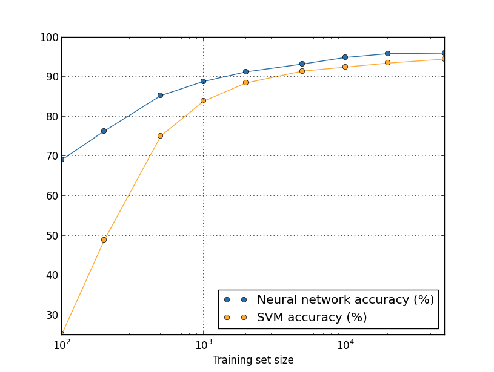
모든 학습 데이터에 대해 뉴럴 네트워크의 성능이 SVM 성능보다 좋다는 점이 그래프에서 눈에 띤다.
뉴럴 네트워크를 향상시키기 위해 많은 시간을 쏟았지만 scikit-learn의 SVM의 설정을 이용해 SVM에 대해 자세히 알 필요가 없는 것은 좋다.
더 미묘하지만 흥미로운 사실은 $50,000$개의 이미지를 이용해 SVM을 학습시킨 경우(정확도 $94.48%$) $5,000$개를 이용해 학습시킨 뉴럴 네트워크(정확도 $93.24%$)보다 성능이 훨씬 뛰어나다는 점이다.
즉 더 많은 학습 데이터는 때때로 사용되는 머신 러닝 알고리즘의 차이를 상쇄시킬 수 있다.
더 흥미로운 점이 있다. 두 가지 머신 러닝 알고리즘 A와 B를 이용해 문제를 푼다고 가정해보자. 어떤 학습 데이터 세트에 대해 알고리즘 A가 알고리즘 B보다 성능이 좋지만 또 다른 학습 데이터 세트에 대해서는 알고리즘 B의 성능이 좋은 경우가 있다. 이는 그래프가 교차해서 나타나며 위 그래프에서는 볼 수 없지만 일어나는* temp 사실이다. "알고리즘 A가 알고리즘 B보다 성능이 좋은가?"라는 물업에 대한 올바른 답은 "어떤 학습 데이터를 사용하고 있나?"이다.
개발을 하는 경우든 연구 논문을 읽을 때든 이를 명심하고 있어야한다. 많은 논문이 표준 벤치마크(benchmark) 데이터 세트에 대한 성능 향상을 위해 새로운 기술을 찾는 것에 집중하고 있다. 연구 주장의 표준적인 형태는 다음과 같다. "우리의 훌륭한 기술은 표준 벤치마크 데이터 세트 $Y$에 대해 $X$ 퍼센트만큼 향상했습니다." 이러한 주장은 종종 흥미롭지만 사용된 특정 학습 데이터 세트의 문맥에서 적용하는 것으로 이해해야한다. 벤치마크 데이터 세트를 만든 사람들이 더 많은 연구 자금을 받은 역사를 생각해보자. 그들은 더 많은 학습 데이터를 모으기 위해 자금을 더 사용할지도 모른다. 훌륭한 기술에 의한 "개선"이 더 큰 데이터 세트에서는 드러나지 않을 가능성이 있다. 즉 알려진 개선은 단지 역사의 우연일 수 있다. 특히 실용적인 응용에서 더 나은 알고리즘과 더 좋은 학습 데이터 모두 필요하다는 말은 없어져야 한다. 좋은 알고리즘을 찾는 것도 좋지만 더 많과 좋은 학습 데이터를 가지면 쉽게 이길 수 있다는 사실을 배제한채 더 나은 알고리즘에만 집중해서는 안된다.
연구 문제(Reaserch problem) 우리의 머신 러닝 알고리즘은 매운 큰 데이터 세트의 범위 내에서 어떻게 작동하는가? 어떤 알고리즘이 주어지면 빅 데이터의 범위 내에서 점근적인 성능을 개념적으로 정의하려는 시도는 자연스럽다. 이 문제에 대한 간단한 접근법은 위에서 본 그래프에 곡선을 맞추면 마춰진 곡선이 무한대로 외삽(extrapolate)하는 것이다. 곡선 피팅(fitting)에 대한 다른 접근법이 점근적 성능의 다른 개념을 준다는 것은 이 접근법의 반대이다. 특정 곡선 클래스(class)에 맟추기 위한 원칙적인 정당성을 찾울 수 있나? 그렇다면 다른 머신 러닝 알고리즘의 점근적인 성능을 비교해봐라.
요약: 과적합과 정규화를 깊이있게 다루었다. 물론 이러한 문제에 대해 다시 돌아올 것이다. 몇 번 언급한것처럼 과적합은 뉴럴 네트워크에서 주요한 문제이다. 특히 컴퓨터가 더욱 강력해지면서 더 큰 네트워크를 학습시킬 능력이 생겼다. 그 결과 과적합을 줄이기 위해 강력한 정규화 기술을 개발할 필요성이 부각되고 있으며 현재 활발히 연구되고 있는 분야이다.
뉴럴 네트워크를 만들 때 가중치와 편향의 초깃값을 선택해야한다. 지금까지 1장에서 짦게 살펴본 방법에 따라 초깃값을 선택하였다. 평균 $0$, 표준 편차 $1$로 정규화된normalized 독립적인 가우스Gaussian 변수를 사용하여 가중치와 편향 모두 선택하는 것이 1장에서 살펴본 방법이었다. 이 방법은 잘 동작하지만 이는 임시방편ad hoc이었고, 뉴럴 네트워크가 학습을 빠르게 할 수 있는 초기 가중치와 편향을 설정하는 나은 방법을 찾을 수 있는지 살펴볼만하다.
정규화된 가우스 변수로 초기화하는 것보다 더 나은 방법이 있다고 밝혀졌다.
가령 $1,000$개의 입력 뉴런이 있는 네트워크가 있다고 가정해보자.
그리고 첫 번째 은닉층에 연결되는 가중치를 초기화하려고 정규화된 가우스 변수를 사용한다고 가정하자.
네트워크의 다른 부분은 제외하고 은닉층의 첫 번째 뉴런에 연결되는 입력뉴런의 가중치에 집중해서 살펴보자.
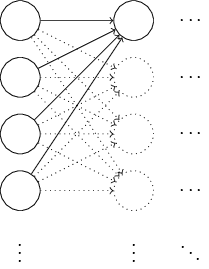
입력 뉴런의 절반은 $1$로 설정하고 나머지 절반은 $0$으로 설정한 학습 데이터 입력 $x$를 사용하여 학습을 한다고 간결하게 가정하자.
다음에 나오는 인자(argument)가 더 일반적으로 사용되지만 이 특수한 경우에서 핵심 내용을 얻을 수 있다.
은닉 뉴런에 대한 입력의 가중치 합 $z = \sum_j w_j x_j+b$을 고려해보자.
대응하는 입력 $x_j$이 $0$이므로 이 합에서 $500$개의 항은 사라진다.
그러므로 $z$는 $500$개의 가중치 항과 $1$개의 편향으로 구성된 $501$개의 정규화된 무작위의 가우스 변수에 대한 합이다.
따라서 $z$는 평균 $0$과 표준 편차 $\sqrt{501} \approx 22.4$인 가우스 분포가된다.
즉 $z$는 전혀 뾰족하지 않고 매우 넓은 가우스 분포(Gaussian distribution)이다.
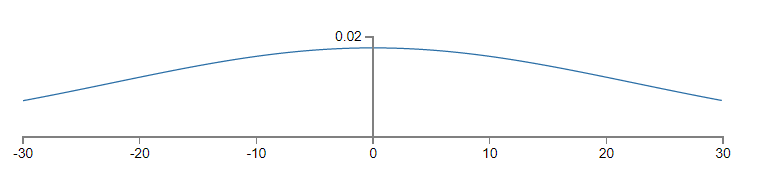
특히 $|z|$는 꽤 큰 값, 즉 $z \gg 1$ 또는 $z \ll -1$이 될 수 있다는 사실을 그래프에서 알 수 있다.
이런 경우라면 은닉 뉴런의 출력 $\sigma(z)$은 $1$ 또는 $0$에 매우 가까울 것이다.
이는 은닉 뉴런이 포화될거라는 의미이다.
보다시피 가중치에 약간의 변화를 주면 은닉 뉴런의 활성화에 아주 사소한 변화만 가해진다.
은닉 뉴런 활성화의 이 사소한 변화는 결국 네트워크에 있는 나머지 뉴런에 거의 영향을 주지 않으며 비용함수에서도 아주 사소한 변화를 준다.
그 결과 이러한 가중치는 경사 하강 알고리즘*
temp
을 사용할 때 매우 느리게 학습된다.
이 장의 앞부분에서 다루었던 출력 뉴런이 잘못된 값으로 포화되면 학습 속도를 저하시키는 문제와 비슷하다.
이 문제에서 이전에 다른 비용함수를 선택해 다루었다.
불행히도 포화된 출력 뉴런 문제에는 도움이 될 수 있지만 포화된 은닉 뉴런 문제에 대해서는 전혀 도움이 안된다.
첫 번째 층에 대한 가중치 입력에 대해 이야기하고 있다. 물론 비슷한 인자가 이후의 층에도 적용된다. 이후의 층에 가중치를 정규화된 가우스로 초기화하면 활성화는 $0$ 또는 $1$에 매우 가까워지고 학습은 매우 천천히 일어날 것이다.
가중치와 편향을 잘 초기화하여 이런 종류의 포화를 하지 않고 학습 속도 저하를 피할수 있는 방법이 있을까?
입력 가중치로 $n_{\rm in}$을 가지는 뉴런이 있다고 가정하자.
평균은 $0$이고 표준 편차가 $1/\sqrt{n_{\rm in}}$인 가우시안 랜덤 변수(Gaussian random variable)로 가중치를 초기화할 것이다.
즉 가우시안을 좁혀(squash down) 뉴런이 포화될 가능성을 줄일 것이다.
잠시후 다시 돌아올 것이므로 평균은 $0$이고 표준 편차는 $1$인 가우시안으로 편향을 계속 선택한다.
이렇게 선택해서 가중치 합 $z = \sum_j w_j x_j + b$은 다시 평균이 $0$인 가우시안 랜덤 변수가 될 것이지만 이전 보다 훨씬 날카로운 곡선인 된다.
이전과 같이 입력의 $500$개는 0, 나머지 $500$개는 1로 가정하자.
그러면 $z$가 평균은 $0$이고 표준 편차는 $\sqrt{3/2} = 1.22\ldots$인 가우스 분포를 가지는 것을 쉽게 알 수 있다.
이는 이전보다 훨씬 꼭지점이 날카롭다.
이전의 그래프와 비교하면 수직축의 크기를 재조정해야하므로 아래의 그래프가 상황을 잘 드러내지는 못한다.
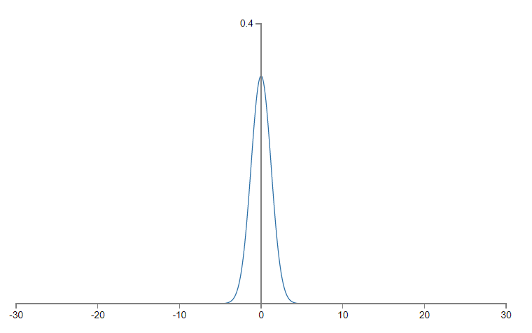
이러한 뉴런은 포화될 가능성이 적으며 이에 맞게 학습 속도 저하 문제를 일으킬 가능성도 적다.
위의 문단에서 $z = \sum_j w_j x_j + b$의 표준 편차가 $\sqrt{3/2}$임을 증명하여라. 다음의 사실을 이용해 증명해라. (a) 독립인 랜덤 변수에 대한 합의 분산은 각 랜덤 변수에 대한 분산의 합이다. (b) 분산은 표준 편차의 제곱이다.
위에서 편향을 이전과 같이 평균은 $0$이고 표준 편차는 $1$인 가우시안 랜덤 변수로 초기화할거라고 이야기했다. 뉴런이 포화될 가능성을 높이지 않기 때문에 괜찮았다. 사실 포화 문제를 피한다면 편향을 어떻게 초기화하든 중요하지 않다. 어떤 사람들은 모든 편향을 $0$으로 초기화하기도 하며 적절한 편향을 학습하기 위해 경사 하강에 의존하기도 한다. 하지만 큰 차이가 없기 때문에 이전과 같은 초기화 가정을 이용할 것이다.
MNIST 숫자 분류 과제를 이용해 가중치 초기화에 대한 두 가지 접근법에 대한 결과를 비교해보자. 이전처럼 $30$개의 은닉 뉴런과 미니 배치 크기 $10$개, 정규화 파라미터 $\lambda = 5.0$, 교차 엔트로피 비용함수를 사용할 것이다. 학습률은 $\eta = 0.5$에서 $0.1$로 아주 약간 감소시켜 그래프에서 결과를 보기 쉽도록 만들 것이다. 가중치 초기화에 대한 이전 버전을 이용해 학습시킬 수 있다.
>>> import mnist_loader
>>> training_data, validation_data, test_data = \
... mnist_loader.load_data_wrapper()
>>> import network2
>>> net = network2.Network([784, 30, 10], cost=network2.CrossEntropyCost)
>>> net.large_weight_initializer()
>>> net.SGD(training_data, 30, 10, 0.1, lmbda = 5.0,
... evaluation_data=validation_data,
... monitor_evaluation_accuracy=True)
가중치 초기화에 대한 새로운 방법을 이용해서도 학습시킬 수 있다.
network2에서 가중치를 초기화하는 기본적인 방법으로 이 새로운 접근법을 이용하므로 이를 구현하는 것은 훨씬 쉽다.
즉 위에서 net.large_weight_initializer() 호출을 제외할 수 있다.
>>> net = network2.Network([784, 30, 10], cost=network2.CrossEntropyCost)
>>> net.SGD(training_data, 30, 10, 0.1, lmbda = 5.0,
... evaluation_data=validation_data,
... monitor_evaluation_accuracy=True)
결과*
temp
를 그래프로 그리면 아래와 같다.

두 가지 경우 모두 분류 정확도는 $96%$를 약간 넘긴다.
마지막 부분에서 분류 정확도는 두 경우에서 거의 정확히 일치한다.
하지만 초기화하는 새로운 방법은 최고 정확도에 더 빨리 도달한다.
첫 번째 세대를 학습한 이후에 가중치를 초기화하는 이전의 접근법은 분류 정확도가 $87%$보다 낮지만 새로운 접근법은 거의 $93%$에 달한다.
새로운 접근 법은 좋은 결과를 더 빨리 얻도록하는 영역에서 시작한다는 것을 알 수 있다.
$100$개의 은닉 뉴런에 대한 결과를 그래프로 그려보아도 같은 현상이 일어난다.

이 경우 두 개의 곡선은 약간 떨어져 있다.
하지만 이 실험은 단지 몇 세대의 학습으로 정확도가 거의 같아진다는 것을 보여준다.
이 실험을 근거로 개선된 가중치 초기화 방법은 단지 학습의 속도를 높이고 네트워크의 최정 성능은 바꾸지 않는다는 것을 알 수 있다.
하지만 4장에서 네트워크의 장기적인 행동이 $1/\sqrt{n_{\rm in}}$ 가중치 초기화보다 훨씬 좋아지는 예를 살펴볼 것이다.
그러므로 개선되는 것은 학습의 속도만이 아니라 때로는 최종적은 성능도 개선된다.
가중치 초기화에 대한 $1/\sqrt{n_{\rm in}}$ 방법은 뉴럴 네트워크가 학습하는 방법을 향상시키는데 도움을 준다. 이 기본적인 아이디어를 바탕으로 가중치 초기화를 하는 다른 기술들이 제안되었다. $1/\sqrt{n_{\rm in}}$이 우리 목적에 맞게 잘 동작하므로 다른 방법들을 여기서 살펴보지는 않을 거다. 더 공부하고 싶다면 요슈아 벤지오(Yoshua Bengio* temp )의 2012년 논문의 14, 15페이지를 살펴보길 바란다. 또한 이 논문의 참고자료를 살펴보자.
정규화와 개선된 가중치 초기화 방법을 연결시키기Connecting regularization and the improved method of weight initialization L2 정규화는 가중치 초기화에 대한 개선된 방법과 비슷한 것을 자동으로 제공한다. 가중치 초기화에 대한 이전의 방법을 사용한다고 가정하자. 경험적 인자heuristic argument를 선택하자. (1) $\lambda$을 너무 작지 않게 가정하면 학습의 첫 번째 세대는 가중치 감쇠가 거의 전적으로 지배한다. (2) $\eta \lambda \ll n$이면 가중치는 세대당 $\exp(-\eta \lambda / m)$으로 감쇠한다. (3) $\lambda$가 너무 크지 않으면 가중치 크기가 약 $1/\sqrt{n}$으로 작아질 때 가중치 감쇠는 약해진다. 여기서 $n$은 네트워크에서 가중치의 전체 수이다. 이러한 조건이 이 절의 그래프로 보여준 예에서 모두 만족함을 보여라.
이 장에서 배운 아이디어를 구현해보자.
1장에서 구현한 프로그램 network.py를 개선한 버전인 새로운 프로그램 network2.py를 개발해보자.
network.py가 잘 생각나지 않는다면 시간을 들여 빠르게 다시 한 번 살펴보는 것이 도움이 될 것이다.
이는 단지 74줄의 코드이므로 이해하기 쉽다.
network.py에서 처럼 network2.py의 핵심은 Network 클래스이고 이는 뉴럴 네트워크를 나타낸다.
네트워크에 있는 각 층에 대한 sizes의 리스트로 Network 인스턴스를 초기화한다.
그리고 사용할 cost는 기본값인 교차 엔트로피로 초기화한다.
class Network(object):
def __init__(self, sizes, cost=CrossEntropyCost):
self.num_layers = len(sizes)
self.sizes = sizes
self.default_weight_initializer()
self.cost=cost
__init__메소드의 처음 두 줄은 network.py와 같으며 따로 설명할 필요없이 알 수 있다.
하지만 그 다음 새로운 두 줄은 무엇을 하는지 자세히 이해할 필요가 있다.
default_weight_initializer 메소드를 먼저 살펴보자.
이는 가중치 초기화에 대한 새롭고 개선된 방식을 이용한다.
이 방법은 뉴런에 대한 가중치 입력을 평균은 $0$이고 표준 편차는 $1$인 가우시안 랜덤 변수를 뉴런에 대해 연결된 수의 제곱근으로 나눈 값으로 초기화한다.
아래에 코드가 있다.
def default_weight_initializer(self):
self.biases = [np.random.randn(y, 1) for y in self.sizes[1:]]
self.weights = [np.random.randn(y, x)/np.sqrt(x)
for x, y in zip(self.sizes[:-1], self.sizes[1:])]
np는 선형 대수를 계산하기 위한 Numpy library이다.
프로그램의 앞 부분에서 Numpy를 import할 것이다.
또한 뉴런의 첫 번째 층에 대한 어떤 가중치도 초기화하지 않은 것에 주목해라.
첫 번째 층은 입력 층이고 이에 따라 어떤 편향도 사용하지 않으므로 이렇게 하는 것을 피한다.
network.py에서도 정확히 같은 것을 했다.
default_weight_initializer를 보완하기 위해 large_weight_initializer를 포함시킬 것이다.
이 메소드는 1장에서 본 접근법을 이용해 가중치와 편향을 초기화한다.
가중치와 편향 모두 평균은 $0$이고 표준 편차는 $1$인 가우시안 랜덤 변수로 초기화된다.
물론 코드는 default_weight_initializer와 조금 다르다.
def large_weight_initializer(self):
self.biases = [np.random.randn(y, 1) for y in self.sizes[1:]]
self.weights = [np.random.randn(y, x)
for x, y in zip(self.sizes[:-1], self.sizes[1:])]
이 장의 결과와 1장의 결과를 쉽게 비교하기 위해 large_weight)initializer를 포함했다.
실용적인 문제에서 이를 사용하는 것은 추천하지 않는다.
Network의 __init__ 메소드에서 cost도 초기화한다.
교차 엔트로피 비용*
temp
을 구현하는 클래스를 살펴보고 cost가 어떻게 동작하는지 보자.
class CrossEntropyCost(object):
@staticmethod
def fn(a, y):
return np.sum(np.nan_to_num(-y*np.log(a)-(1-y)*np.log(1-a)))
@staticmethod
def delta(z, a, y):
return (a-y)
위 코드를 자세히 살펴보자.
교차 엔트로피는 수학적으로 말하면 함수이지만 파이썬 함수가 아닌 파이썬 클래스로 구현하였다.
왜 클래스로 선택했을까?
네트워크에서 비용은 두 가지 역할을 하기 때문이다.
출력 활성화 a가 얼마나 잘 원하는 출력 y와 맞는지 측정하는 것이 한 가지 역할이다.
이는 CrossEntropy.fn 메소드가 수행한다.
(하지만 CrossEntropy.fn안에서 np.nan_to_num을 호출해 $0$에 매우 가까운 수의 로그값을 Numpy가 처리한다.)
그러나 비용함수가 네트워크로 들어오는 두 번째 방법이 있다.
역전파 알고리즘을 동작시킬 때 네트워크의 출력 오차 $\delta^L$을 계산해야 했던 2장의 내용을 기억하자.
출력 오차 식은 비용 함수로 무엇을 선택하는지에 따라 달라진다.
비용함수가 다르면 다른 출력 오차 식을 갖는다.
교차 엔트로피의 경우 출력 오차는 식 (66)
$$\begin{eqnarray}
\delta^L = a^L-y.
\nonumber\end{eqnarray}$$
과 같다.
$$\begin{eqnarray}
\delta^L = a^L-y.
\tag{99}\end{eqnarray}$$
이때문에 두 번째 메소드 CrossEntropyCost.delta를 정의해 출력 오차를 어떻게 계산할지 네트워크에 알려준다.
따라서 두 개의 메소드를 하나의 클래스에 넣어 네트워크가 비용함수에 대해 알아야 할 모든 것을 하나의 클래스가 포함하도록 만들었다.
비슷한 방법으로 network2.py는 이차 비용함수를 나타내는 클래스를 가진다.
이는 1장의 결과와 비교하기 위해 포함되었다.
이후에는 대부분 교차 엔트로피를 사용할 것이다.
코드는 아래에 나타나 있다.
QuadraticCost.fn 메소드는 실제 출력 a와 원하는 출력 y와 연관된 이차 비용을 간단히 계산한다.
QuadraticCost.delta가 반환하는 값은 2장에서 유도했던 이차 비용에 대한 출력 오차의 식 (30)
$$\begin{eqnarray}
\delta^L = (a^L-y) \odot \sigma'(z^L) \nonumber\end{eqnarray}$$
을 기반으로 한다.
class QuadraticCost(object):
@staticmethod
def fn(a, y):
return 0.5*np.linalg.norm(a-y)**2
@staticmethod
def delta(z, a, y):
return (a-y) * sigmoid_prime(z)
network2.py와 network.py의 주요한 차이점을 살펴보았다.
차이점은 매우 간단하다.
L2 정규화의 구현을 포함한 작은 차이는 아래에서 살펴보자.
그 전에 network2.py코드 전체를 보자.
전체 코드를 자세히 살펴볼 필요는 없지만 전체적인 구조는 살펴봐야 한다.
특히 문서화 문자열을 읽으면 프로그램의 각 부분이 무엇을 하는지 이해할 수 있다.
물론 원한다면 깊이 살펴보아도 좋다.
만약 이해되지 않는 부분이 있다면 책의 아랫부분을 계속 읽고 코드를 다시 보도록 하자.
어쨋든 아래에 코드가 나타나 있다.
"""network2.py
~~~~~~~~~~~~~~
An improved version of network.py, implementing the stochastic
gradient descent learning algorithm for a feedforward neural network.
Improvements include the addition of the cross-entropy cost function,
regularization, and better initialization of network weights. Note
that I have focused on making the code simple, easily readable, and
easily modifiable. It is not optimized, and omits many desirable
features.
"""
#### Libraries
# Standard library
import json
import random
import sys
# Third-party libraries
import numpy as np
#### Define the quadratic and cross-entropy cost functions
class QuadraticCost(object):
@staticmethod
def fn(a, y):
"""Return the cost associated with an output ``a`` and desired output
``y``.
"""
return 0.5*np.linalg.norm(a-y)**2
@staticmethod
def delta(z, a, y):
"""Return the error delta from the output layer."""
return (a-y) * sigmoid_prime(z)
class CrossEntropyCost(object):
@staticmethod
def fn(a, y):
"""Return the cost associated with an output ``a`` and desired output
``y``. Note that np.nan_to_num is used to ensure numerical
stability. In particular, if both ``a`` and ``y`` have a 1.0
in the same slot, then the expression (1-y)*np.log(1-a)
returns nan. The np.nan_to_num ensures that that is converted
to the correct value (0.0).
"""
return np.sum(np.nan_to_num(-y*np.log(a)-(1-y)*np.log(1-a)))
@staticmethod
def delta(z, a, y):
"""Return the error delta from the output layer. Note that the
parameter ``z`` is not used by the method. It is included in
the method's parameters in order to make the interface
consistent with the delta method for other cost classes.
"""
return (a-y)
#### Main Network class
class Network(object):
def __init__(self, sizes, cost=CrossEntropyCost):
"""The list ``sizes`` contains the number of neurons in the respective
layers of the network. For example, if the list was [2, 3, 1]
then it would be a three-layer network, with the first layer
containing 2 neurons, the second layer 3 neurons, and the
third layer 1 neuron. The biases and weights for the network
are initialized randomly, using
``self.default_weight_initializer`` (see docstring for that
method).
"""
self.num_layers = len(sizes)
self.sizes = sizes
self.default_weight_initializer()
self.cost=cost
def default_weight_initializer(self):
"""Initialize each weight using a Gaussian distribution with mean 0
and standard deviation 1 over the square root of the number of
weights connecting to the same neuron. Initialize the biases
using a Gaussian distribution with mean 0 and standard
deviation 1.
Note that the first layer is assumed to be an input layer, and
by convention we won't set any biases for those neurons, since
biases are only ever used in computing the outputs from later
layers.
"""
self.biases = [np.random.randn(y, 1) for y in self.sizes[1:]]
self.weights = [np.random.randn(y, x)/np.sqrt(x)
for x, y in zip(self.sizes[:-1], self.sizes[1:])]
def large_weight_initializer(self):
"""Initialize the weights using a Gaussian distribution with mean 0
and standard deviation 1. Initialize the biases using a
Gaussian distribution with mean 0 and standard deviation 1.
Note that the first layer is assumed to be an input layer, and
by convention we won't set any biases for those neurons, since
biases are only ever used in computing the outputs from later
layers.
This weight and bias initializer uses the same approach as in
Chapter 1, and is included for purposes of comparison. It
will usually be better to use the default weight initializer
instead.
"""
self.biases = [np.random.randn(y, 1) for y in self.sizes[1:]]
self.weights = [np.random.randn(y, x)
for x, y in zip(self.sizes[:-1], self.sizes[1:])]
def feedforward(self, a):
"""Return the output of the network if ``a`` is input."""
for b, w in zip(self.biases, self.weights):
a = sigmoid(np.dot(w, a)+b)
return a
def SGD(self, training_data, epochs, mini_batch_size, eta,
lmbda = 0.0,
evaluation_data=None,
monitor_evaluation_cost=False,
monitor_evaluation_accuracy=False,
monitor_training_cost=False,
monitor_training_accuracy=False):
"""Train the neural network using mini-batch stochastic gradient
descent. The ``training_data`` is a list of tuples ``(x, y)``
representing the training inputs and the desired outputs. The
other non-optional parameters are self-explanatory, as is the
regularization parameter ``lmbda``. The method also accepts
``evaluation_data``, usually either the validation or test
data. We can monitor the cost and accuracy on either the
evaluation data or the training data, by setting the
appropriate flags. The method returns a tuple containing four
lists: the (per-epoch) costs on the evaluation data, the
accuracies on the evaluation data, the costs on the training
data, and the accuracies on the training data. All values are
evaluated at the end of each training epoch. So, for example,
if we train for 30 epochs, then the first element of the tuple
will be a 30-element list containing the cost on the
evaluation data at the end of each epoch. Note that the lists
are empty if the corresponding flag is not set.
"""
if evaluation_data: n_data = len(evaluation_data)
n = len(training_data)
evaluation_cost, evaluation_accuracy = [], []
training_cost, training_accuracy = [], []
for j in xrange(epochs):
random.shuffle(training_data)
mini_batches = [
training_data[k:k+mini_batch_size]
for k in xrange(0, n, mini_batch_size)]
for mini_batch in mini_batches:
self.update_mini_batch(
mini_batch, eta, lmbda, len(training_data))
print "Epoch %s training complete" % j
if monitor_training_cost:
cost = self.total_cost(training_data, lmbda)
training_cost.append(cost)
print "Cost on training data: {}".format(cost)
if monitor_training_accuracy:
accuracy = self.accuracy(training_data, convert=True)
training_accuracy.append(accuracy)
print "Accuracy on training data: {} / {}".format(
accuracy, n)
if monitor_evaluation_cost:
cost = self.total_cost(evaluation_data, lmbda, convert=True)
evaluation_cost.append(cost)
print "Cost on evaluation data: {}".format(cost)
if monitor_evaluation_accuracy:
accuracy = self.accuracy(evaluation_data)
evaluation_accuracy.append(accuracy)
print "Accuracy on evaluation data: {} / {}".format(
self.accuracy(evaluation_data), n_data)
print
return evaluation_cost, evaluation_accuracy, \
training_cost, training_accuracy
def update_mini_batch(self, mini_batch, eta, lmbda, n):
"""Update the network's weights and biases by applying gradient
descent using backpropagation to a single mini batch. The
``mini_batch`` is a list of tuples ``(x, y)``, ``eta`` is the
learning rate, ``lmbda`` is the regularization parameter, and
``n`` is the total size of the training data set.
"""
nabla_b = [np.zeros(b.shape) for b in self.biases]
nabla_w = [np.zeros(w.shape) for w in self.weights]
for x, y in mini_batch:
delta_nabla_b, delta_nabla_w = self.backprop(x, y)
nabla_b = [nb+dnb for nb, dnb in zip(nabla_b, delta_nabla_b)]
nabla_w = [nw+dnw for nw, dnw in zip(nabla_w, delta_nabla_w)]
self.weights = [(1-eta*(lmbda/n))*w-(eta/len(mini_batch))*nw
for w, nw in zip(self.weights, nabla_w)]
self.biases = [b-(eta/len(mini_batch))*nb
for b, nb in zip(self.biases, nabla_b)]
def backprop(self, x, y):
"""Return a tuple ``(nabla_b, nabla_w)`` representing the
gradient for the cost function C_x. ``nabla_b`` and
``nabla_w`` are layer-by-layer lists of numpy arrays, similar
to ``self.biases`` and ``self.weights``."""
nabla_b = [np.zeros(b.shape) for b in self.biases]
nabla_w = [np.zeros(w.shape) for w in self.weights]
# feedforward
activation = x
activations = [x] # list to store all the activations, layer by layer
zs = [] # list to store all the z vectors, layer by layer
for b, w in zip(self.biases, self.weights):
z = np.dot(w, activation)+b
zs.append(z)
activation = sigmoid(z)
activations.append(activation)
# backward pass
delta = (self.cost).delta(zs[-1], activations[-1], y)
nabla_b[-1] = delta
nabla_w[-1] = np.dot(delta, activations[-2].transpose())
# Note that the variable l in the loop below is used a little
# differently to the notation in Chapter 2 of the book. Here,
# l = 1 means the last layer of neurons, l = 2 is the
# second-last layer, and so on. It's a renumbering of the
# scheme in the book, used here to take advantage of the fact
# that Python can use negative indices in lists.
for l in xrange(2, self.num_layers):
z = zs[-l]
sp = sigmoid_prime(z)
delta = np.dot(self.weights[-l+1].transpose(), delta) * sp
nabla_b[-l] = delta
nabla_w[-l] = np.dot(delta, activations[-l-1].transpose())
return (nabla_b, nabla_w)
def accuracy(self, data, convert=False):
"""Return the number of inputs in ``data`` for which the neural
network outputs the correct result. The neural network's
output is assumed to be the index of whichever neuron in the
final layer has the highest activation.
The flag ``convert`` should be set to False if the data set is
validation or test data (the usual case), and to True if the
data set is the training data. The need for this flag arises
due to differences in the way the results ``y`` are
represented in the different data sets. In particular, it
flags whether we need to convert between the different
representations. It may seem strange to use different
representations for the different data sets. Why not use the
same representation for all three data sets? It's done for
efficiency reasons -- the program usually evaluates the cost
on the training data and the accuracy on other data sets.
These are different types of computations, and using different
representations speeds things up. More details on the
representations can be found in
mnist_loader.load_data_wrapper.
"""
if convert:
results = [(np.argmax(self.feedforward(x)), np.argmax(y))
for (x, y) in data]
else:
results = [(np.argmax(self.feedforward(x)), y)
for (x, y) in data]
return sum(int(x == y) for (x, y) in results)
def total_cost(self, data, lmbda, convert=False):
"""Return the total cost for the data set ``data``. The flag
``convert`` should be set to False if the data set is the
training data (the usual case), and to True if the data set is
the validation or test data. See comments on the similar (but
reversed) convention for the ``accuracy`` method, above.
"""
cost = 0.0
for x, y in data:
a = self.feedforward(x)
if convert: y = vectorized_result(y)
cost += self.cost.fn(a, y)/len(data)
cost += 0.5*(lmbda/len(data))*sum(
np.linalg.norm(w)**2 for w in self.weights)
return cost
def save(self, filename):
"""Save the neural network to the file ``filename``."""
data = {"sizes": self.sizes,
"weights": [w.tolist() for w in self.weights],
"biases": [b.tolist() for b in self.biases],
"cost": str(self.cost.__name__)}
f = open(filename, "w")
json.dump(data, f)
f.close()
#### Loading a Network
def load(filename):
"""Load a neural network from the file ``filename``. Returns an
instance of Network.
"""
f = open(filename, "r")
data = json.load(f)
f.close()
cost = getattr(sys.modules[__name__], data["cost"])
net = Network(data["sizes"], cost=cost)
net.weights = [np.array(w) for w in data["weights"]]
net.biases = [np.array(b) for b in data["biases"]]
return net
#### Miscellaneous functions
def vectorized_result(j):
"""Return a 10-dimensional unit vector with a 1.0 in the j'th position
and zeroes elsewhere. This is used to convert a digit (0...9)
into a corresponding desired output from the neural network.
"""
e = np.zeros((10, 1))
e[j] = 1.0
return e
def sigmoid(z):
"""The sigmoid function."""
return 1.0/(1.0+np.exp(-z))
def sigmoid_prime(z):
"""Derivative of the sigmoid function."""
return sigmoid(z)*(1-sigmoid(z))
코드에서 L2 정규화를 포함한 것을 알 수 있다.
이는 개념적으로 중요한 변화이지만 구현하기 쉬어 코드에서 자칫 놓치기 쉽다.
Network.SGD를 포함해 많은 메소드에 대한 파라미터로 lambda를 넘겨주고 있다.
Network.update_mini_batch 메소드의 마지막에서 네 번째에 있는 단 한 줄이 실질적인 구현을 한다.
경하 하강 갱신 규칙에 가중치 감쇠가 포함되도록 구현한 부분이다.
수정은 미미하지만 결과에는 아주 큰 영향을 준다.
하지만 뉴럴 네트워크에 새로운 기술을 구현할 때 이는 흔히 일어난다. 정규화를 설명하는데 수천 단어를 사용했고 개념적으로 미묘한 차이가 있어 이해하기 어려웠지만 프로그램에 추가하는 것은 별 일 아니다. 코드를 아주 조금 수정하여 정교한 기술을 구현할 수 있는 일은 종종 발생한다.
사소하지만 중요한 또 다른 변화는 확률적 경사 하강 메소드 Network.SGD에 추가적인 플래그flag이다.
이 플래그는 training_data나 Network.SGD로 전달될 수 있는 evaluation_data에 대한 비용과 정확도를 모니터할 수 있다.
이 장의 앞부분에서 플래그를 종종 사용하였지만 어떻게 동작하는지 예를 들어서 다시 생각해보자.
>>> import mnist_loader
>>> training_data, validation_data, test_data = \
... mnist_loader.load_data_wrapper()
>>> import network2
>>> net = network2.Network([784, 30, 10], cost=network2.CrossEntropyCost)
>>> net.SGD(training_data, 30, 10, 0.5,
... lmbda = 5.0,
... evaluation_data=validation_data,
... monitor_evaluation_accuracy=True,
... monitor_evaluation_cost=True,
... monitor_training_accuracy=True,
... monitor_training_cost=True)
evalutation_data를 validation_data로 설정했다.
하지만 test_data나 다른 데이터 세트에 대한 성능도 모니터할 수 있다.
evaluation_data와 training_data에 대한 비용과 정확도를 모니터하는 네 가지 플래그도 있다.
이 플래그의 기본값은 False이지만 이 플래그를 켜서 Network의 성능을 모니터할 수 있다.
게다가 network2.py의 Network.SGD 메소드는 모니터링 결과를 나타내는 4개의 요소로 구성된 튜플tuple을 반환한다.
이를 다음과 같이 사용할 수 있다.
>>> evaluation_cost, evaluation_accuracy,
... training_cost, training_accuracy = net.SGD(training_data, 30, 10, 0.5,
... lmbda = 5.0,
... evaluation_data=validation_data,
... monitor_evaluation_accuracy=True,
... monitor_evaluation_cost=True,
... monitor_training_accuracy=True,
... monitor_training_cost=True)
그래서 예를 들면 evaluation_cost는 각 세대의 끝에 평가 데이터evalutation data에 대한 비용을 포함하는 $30$개의 원소를 갖는 리스트이다.
이러한 정보는 네트워크의 행동을 이해하는데 매우 유용하다.
예를 들어 시간이 지날수록 네트워크가 어떻게 학습하는지 보여주는 그래프를 그릴 수 있다.
실제로 이 장의 앞부분에서 모든 그래프를 그렸단 방법과 같다.
하지만 모니터링 플래그가 설정되어 있지 않으면 해당하는 원소는 튜플에서 빈 리스트empty list가 된다.
Network 객체를 디스크에 저장하는 Network.save 메소드와 이를 다시 불러오는 load 함수가 코드에 포함되어 있다.
저장하고 로딩하는데 파이썬의 pickle과 cPickle 모듈을 사용하지 않고 JSON을 사용한 점에 주의하자.
이는 파이썬에서 디스크에 객체를 저장하고 디스크에서 객체를 불러오는 일반적인 방법이다.
JSON을 사용하면 pickle 또는 cPickle을 사용하는 것 보다 코드를 많이 써야한다.
JSON을 사용한 이유를 살펴보자.
시그모이드 뉴런이 아닌 다른 뉴런에 적용되도록 Network 클래스를 바꾼다고 생각해보자.
이를 위해 Network.__init__ 메소드에 정의된 속성을 바꾸어야 한다.
간단히 pickle을 이용하면 load 함수에서 오류가 난다.
JSON을 이용해 직렬화serialization를 명시적으로 사용하면 이전의 Network도 load 함수를 이용할 수 있다.
network2.py에 다른 사소한 변화도 있지만 이는 network.py의 간단한 변형이다.
결과적으로 $74$줄의 프로그램을 $152$줄로 확장시켰다.
위 코드를 수정해 L1 정규화를 구현하여라. $30$개의 은닉 뉴런 네트워크와 L1 정규화를 이용해 MNIST 숫자를 분류해보자. 비정규화된 채로 동작하는 것보다 나은 성능을 보이는 정규화 인자를 찾을 수 있을까?
network.py에 있는 Network.cost_derivative 메소드를 보자.
이 메소드는 이차 비용을 구현한다.
교차 엔트로피 비용에 대한 메소드로 어떻게 다시 작성할 수 있을까?
교차 엔트로피 버전에서 일어나는 문제를 생각해 볼 수 있을까?
network2.py에서 Network.cost_derivative 메소드 전체를 제거했다.
대신에 이 기능을 CrossEntropyCost.delta 메소드에 통합했다.
이것이 당신이 생각한 문제를 어떻게 해결하는가?
지금까지 학습률 $\eta$, 정규화 파라미터 $\lambda$과 같은 하이퍼 파라미터를 어떻게 선택했는지 설명하지 않았다. 단지 잘 동작하는 값을 제공하였다. 실제로 문제를 풀기 위해 뉴럴 네트워크를 사용할 때 좋은 하이퍼 파라미터를 찾는 것은 어려울 수 있다. 예를 들어 이제 막 MNIST 문제를 풀기 시작했고 어떤 하이퍼 파라미터를 사용해야하는지 전혀 모른다고 생각해보자. 운 좋게 첫 번째 실험에서 이 장의 첫 부분에서 사용한 같은 하이퍼 파라미터를 골랐다고 가정하자. 즉 은닉 뉴런은 $30$개, 미니 배치 크기는 $10$, 학습은 $30$ 세대, 교차 엔트로피를 선택했다. 하지만 학습률 $\eta = 10.0$으로 정규화 인자 $\lambda = 1000.0$으로 선택한다. 이를 동작시키면 아래와 같다.
>>> import mnist_loader
>>> training_data, validation_data, test_data = \
... mnist_loader.load_data_wrapper()
>>> import network2
>>> net = network2.Network([784, 30, 10])
>>> net.SGD(training_data, 30, 10, 10.0, lmbda = 1000.0,
... evaluation_data=validation_data, monitor_evaluation_accuracy=True)
Epoch 0 training complete
Accuracy on evaluation data: 1030 / 10000
Epoch 1 training complete
Accuracy on evaluation data: 990 / 10000
Epoch 2 training complete
Accuracy on evaluation data: 1009 / 10000
...
Epoch 27 training complete
Accuracy on evaluation data: 1009 / 10000
Epoch 28 training complete
Accuracy on evaluation data: 983 / 10000
Epoch 29 training complete
Accuracy on evaluation data: 967 / 10000
이 분류기의 정확도는 우연에 의해 동작하는 것과 같고 네트워크는 랜덤 노이즈 생성기처럼 행동한다.
"글쎄, 그건 고치기 쉬운데. 단지 학습률과 정규화 인자를 낮추면 돼."라고 당신은 말 할지도 모른다. 불행히도 조정할 필요가 있는 하이퍼 파라미터를 연역적으로a priori 알지 못 한다. 다른 하이퍼 파라미터를 어떻게 선택하든 $30$개의 은닉 뉴런을 갖는 네트워크가 절대 잘 동작하지 않는 것은 아닐까? 적어도 $100$개의 은닉 뉴런을 사용해야 하나? 아니면 $300$개? 아니면 다수의 은닉 층? 그것도 아니면 출력을 인코딩하는 다른 방법이 필요한가? 네트워크가 학습을 하지면 더 많은 세대동안 학습시켜야 하나? 미니 배치가 너무 작은 것은 아닐까? 이차 비용함수를 다시 사용해야 할까? 가중치 초기화에 대한 다른 방법을 해봐야 하나? 하이퍼 파라미터 공간에서 길을 잃기 쉽다. 네트워크가 매우 크거나 많은 학습 데이터를 사용하면 몇 일 혹은 몇 주 동안 학습하여 아무런 결과도 내지 못하므로 이는 절망적이다. 이 상황이 계속되면 당신의 자신감은 하락할 수 밖에 없다. 뉴럴 네트워크가 문제에 대한 잘 못된 접근법일까? 일을 그만두고 양봉을 해야하나?
뉴럴 네트워크에서 하이퍼 파라미터를 설정하는 발견적인 방법heuristic을 이 절에서 설명한다. 하이퍼 파라미터를 잘 설정할 수 있는 작업 흐름을 키우는 것이 목표이다. 물론 하이퍼 파라미터 최적화에 대한 모든 것을 다루지 않을 것이다. 이는 엄청난 주제이며 완전히 해결된 문제가 아니다. 실무자들 사이에서도 사용하는 바른 전략에 대한 일치된 의견은 없다. 네트워크에서 조금 더 성능을 낼 수 있는 하나 이상의 트릭trick이 있지만 이 절에 있는 발견적 방법heuristic으로 시작하자.
광범위한 방법: 네트워크를 이용해 문제를 해결할 때 처음 해야하는 것은 사소하지 않은 어떤 학습을 하는 것이다. 즉 네트워크가 우연보다 나은 결과를 얻도록 학습시킨다. 특히 새로운 유형의 문제에 직면했을 때 이는 놀라울 정도로 어려울 수 있다. 이러한 어려움을 겪을 때 취할 수 있는 전략을 살펴보자.
예를 들어 처음으로 MNIST 문제를 푼다고 가정하자. 열정을 가지고 시작했지만 위에서 본 것과 같은 실패를 하면 사기가 조금 꺽인다. 그 문제를 제거하여 해결한다. $0$ 또는 $1$인 이미지를 제외하고 모든 학습 이미지와 검증 이미지를 제거한다. 이는 숫자 열 개를 분류하는 것보다 본질적으로 훨씬 쉬운 문제이고 학습 데이터를 $80%$ 정도 줄이며 학습 속도는 $5$배 정도 향상된다. 이는 훨씬 더 빠른 실험을 가능하게 만들며 좋은 네트워크를 어떻게 만들지에 대한 통찰력을 훨씬 빨리 얻을 수 있다.
의미있는 학습을 할 가능성이 높은 간단한 네트워크로 만들어 실험 속도를 훨씬 더 높일 수 있다.
[784, 10] 네트워크가 MNIST 숫자를 우연히 분류하는 확률보다 높다면 그 네트워크로 실험을 시작해도 된다.
이는 [784, 30, 10] 네트워크를 학습시키는 것보다 훨씬 빠를 것이며 후자를 다시 만들 수 있다.
모니터링의 빈도를 높여 실험 속도를 높일 수 있다.
network2.py은 각 학습 세대 끝에서 성능을 모니터한다.
네트워크가 얼마나 잘 학습하고 있는지 피드백feedback 받기 전에 잠시동안 기다린다는 의미이다.
각 세대마다 $50,000$개의 이미지로 [784, 30, 10] 네트워크를 학습시킬 때 내 노트북을 기준으로 각 세대마다 $10$초 정도 기다린다.
물론 $10$초는 매우 길지 않지만 수 십개의 하이퍼 파라미터를 실험할 때는 성가신 일이다.
수 백개 혹은 수 천개의 시도를 한다면 이는 점점 쇠약하게 만든다.
검증 정확도를 더 자주 모니터링하면 피드백을 더 빨리 받을 수 있다.
가령 $1,000$개의 학습 이미지마다 모니터링한다.
게다가 $10,000$개의 검증 이미지 세트로 성능을 모니터링하는 대신에 단 $100$개의 검증 이미지만 사용하여 더 빨리 측정할 수 있다.
네트워크가 실제로 학습하여 꽤 좋은 성능을 내려면 충분한 수의 이미지를 보는 것이 중요하다.
물론 network2.py 프로그램은 현재 이런 모니터링을 하지 않는다.
하지만 설명의 목적과 유사한 효과를 내기 위해 학습 데이터를 처음 $1,000$개의 MNIST 이미지로 줄였다.
한 번 해보고 무슨 일이 일어나는지 살펴보자.
(코드를 간단히 나타내기 위해 $0$과 $1$의 이미지를 이용하는 아이디어는 아래에서 구현하지 않았다. 물론 조금만 노력을 기울이면 이를 구현할 수 있다.)
>>> net = network2.Network([784, 10])
>>> net.SGD(training_data[:1000], 30, 10, 10.0, lmbda = 1000.0, \
... evaluation_data=validation_data[:100], \
... monitor_evaluation_accuracy=True)
Epoch 0 training complete
Accuracy on evaluation data: 10 / 100
Epoch 1 training complete
Accuracy on evaluation data: 10 / 100
Epoch 2 training complete
Accuracy on evaluation data: 10 / 100
...
여전히 노이즈가 있지면 이는 큰 성과이다. 이제 매 십초 정도마다 피드백을 받는 것이 아니라 몇 초만에 피드백을 받는다. 즉 다른 하이퍼 파라미터를 가지고 더 빨리 실험할 수 있으며 심지어 거의 동시아 다른 하이퍼 파라미터를 실험해볼 수 있다.
위의 예에서 이전에 사용한 것처럼 $\lambda = 1000.0$을 사용했다. 하지만 학습 데이터의 수를 바꿨으므로 가중치 감쇠가 같도록 $\lambda$을 바꾸어야 한다. 즉 $\lambda$를 $20.0$으로 바꾼다. 이렇게 하면 다음과 같은 결과가 나온다.
>>> net = network2.Network([784, 10])
>>> net.SGD(training_data[:1000], 30, 10, 10.0, lmbda = 20.0, \
... evaluation_data=validation_data[:100], \
... monitor_evaluation_accuracy=True)
Epoch 0 training complete
Accuracy on evaluation data: 12 / 100
Epoch 1 training complete
Accuracy on evaluation data: 14 / 100
Epoch 2 training complete
Accuracy on evaluation data: 25 / 100
Epoch 3 training complete
Accuracy on evaluation data: 18 / 100
...
좋지 않지만 어떤 신호를 볼 수 있다. 더 개선하기 위해서는 하이퍼 파라미터를 수정해야한다는 신호이다. 학습률이 더 높아야 한다고 생각할지도 모른다. (이는 어리석은 추측이다. 이유는 잠시뒤 다루겠다.) 생각을 테스트하기 위해 $\eta$을 $100.0$으로 높인다.
>>> net = network2.Network([784, 10])
>>> net.SGD(training_data[:1000], 30, 10, 100.0, lmbda = 20.0, \
... evaluation_data=validation_data[:100], \
... monitor_evaluation_accuracy=True)
Epoch 0 training complete
Accuracy on evaluation data: 10 / 100
Epoch 1 training complete
Accuracy on evaluation data: 10 / 100
Epoch 2 training complete
Accuracy on evaluation data: 10 / 100
Epoch 3 training complete
Accuracy on evaluation data: 10 / 100
...
결과는 좋지 않다. 우리의 추측이 틀렸다는 것을 보여주고 학습률이 너무 낮은 것이 문제가 아니라는 점을 나타낸다. 그러므로 대신에 $\eta = 1.0$로 낮춘다.
>>> net = network2.Network([784, 10])
>>> net.SGD(training_data[:1000], 30, 10, 1.0, lmbda = 20.0, \
... evaluation_data=validation_data[:100], \
... monitor_evaluation_accuracy=True)
Epoch 0 training complete
Accuracy on evaluation data: 62 / 100
Epoch 1 training complete
Accuracy on evaluation data: 42 / 100
Epoch 2 training complete
Accuracy on evaluation data: 43 / 100
Epoch 3 training complete
Accuracy on evaluation data: 61 / 100
...
더 나은 결과가 나왔다. 그러므로 조금씩 성능을 개선시키기 위해 각 하이퍼 파라미터를 계속해서 조정해볼 수 있다. 일단 $\eta$에 대한 값을 찾았다면 $\lambda$에 대한 좋은 값을 찾아보자. 그 다음 $10$개의 은닉 뉴런을 가지는 네트워크처럼 조금 더 복잡한 구조에서 실험하자. 그리고 $\eta$와 $\lambda$에 대한 값을 다시 조정한다. 그런 다음 은닉 뉴런을 $20$개로 늘린다. 그리고 다른 하이퍼 파라미터를 조금 더 조정한다. 이 과정을 반복하며 각 단계마다 검증 데이터held out validation data를 이용해 성능을 측정하고 이 성능을 이용해 더 나은 하이퍼 파라미터를 찾는다. 하이퍼 파라미터의 수정에 대한 효과를 관찰하는 것은 오래 걸리므로 조금씩 모니터링 빈도를 감소시킨다.
이는 전체적인 전략으로 좋아 보인다. 하지만 네트워크가 무엇이든 배울 수 있는 하이퍼 파라미터를 찾는 초기 단계로 돌아가고자 한다. 사실 바로 위에서 살펴본 내용도 너무 긍정적인 관점으로 다루고 있다. 아무것도 학습하지 않는 네트워크를 다룰 때 엄청난 절망을 느낀다. 몇 일동안 하이퍼 파라미터를 수정해도 의미있는 결과를 얻지 못 할 수 있다. 그러므로 실험의 초기 단계에서 빠른 피드백을 받아야 한다는 점을 다시 강조하고 싶다. 직관적으로 이는 문제를 단순화하는 것처럼 보일 수 있고 구조는 단지 당신의 속도를 낮춘다. 사실 의미있는 신호를 보이는 네트워크를 더 빨리 찾을 수 있기 때문에 이는 속도를 높인다. 일단 신호를 파악하면 하이퍼 파라미터를 수정해 빠른 개선을 할 수 있다. 인생에서 많은 것이 그러하듯 시작하는 것이 어려운 일이다.
전체적인 전략을 살펴보았다. 이제 하이퍼 파라미터를 설정하는 구체적인 방법에 대해 공부해보자. 학습률 $\eta$, L2 정규화 파라미터 $\lambda$ 그리고 미니 배치 크기를 집중적으로 다루겠다. 하지만 네트워크 구조와 관련된 것과 정규화의 다른 형태와 같은 다른 하이퍼 파라미터에도 적용할 수 있다. 이 책의 뒷 부분에서 볼 운동량 계수momentum co-efficient같은 하이퍼 파라미터에도 적용 가능하다.
학습률:
세 개의 서로 다른 학습률 $\eta = 0.025$, $\eta = 0.25$, $\eta = 2.5$를 가지는 세 개의 MNIST 네트워크가 있다고 가정하자.
다른 하이퍼 파라미터는 이전의 절과 같이 미니 배치 크기는 $10$, $\eta = 5.0$으로 $30$세대 동안 동작하도록 설정한다.
또한 $50,000$개의 학습 이미지 전체를 사용할 것이다.
학습할 때 비용의 행동에 대한 그래프가 아래에 있다.*
temp

$\eta = 0.025$인 경우 비용은 마지막 세대 까지 부드럽게 감소한다.
$\eta = 0.25$인 경우 비용은 초기에 감소하지만 약 $20$세대 이후에 거의 포화되며 따라서 변화는 아주 작으며 무작위로 진동한다.
마지막으로 $\eta = 2.5$인 경우 비용은 시작부터 크게 진동한다.
확률적 경사 하강은 비용함수의 계곡valley으로 점진적으로 내려가는 것을 떠올려 진동하는 이유를 이해해보자.
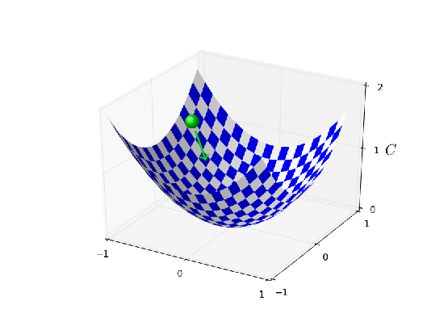
$\eta$이 너무 크다면 하강하는 단계step은 너무 커져 실제로 최솟값을 지나치며overshoot 알고리즘은 계곡을 거슬러 올라간다.
이 때문에 $\eta = 2.5$에서 진동할 가능성이 높다.*
temp
$\eta = 0.25$로 선택하면 초기 단계는 비용함수의 최솟값으로 향한다.
그리고 일단 최솟값 근처에 도달하면 최솟값을 지나치는 문제overshooting problem을 해결할 수 있다.
$\eta = 0.025$로 선택하면 처음 $30$세대 동안은 이 문제에 대해 걱정할 필요가 없다.
물론 $\eta$를 너무 작게 하면 확률적 경사 하강이 느려지는 또 다른 문제가 발생한다.
$\eta = 0.25$로 $20$세대 동안 학습한 후 $\eta = 0.025$로 바꾸는 것이 더 나은 방법이다.
이후에 학습률을 어떠한 값들로 계획할지 살펴보자.
당분간은 학습률 $\eta$에 대한 하나의 좋은 값을 어떻게 찾는지에 집중하자.
이 그림을 명심하여 $\eta$값을 다음과 같이 설정할 수 있다. 먼저 학습 데이터에 대한 비용이 진동하거나 증가하지 않고 즉시 감소하는 $\eta$에 대한 역치 값을 측정하자. 측정이 정확할 필요는 없다. $\eta = 0.01$로 시작하여 크기의 차수order를 측정할 수 있다. 비용이 처음 몇 세대동안 감소한다면 비용이 진동하거나 증가하는 $\eta$값을 찾을 때 까지 $\eta = 0.1, 1.0, \ldots$을 시도한다. 반대로 $\eta = 0.01$일 때 비용이 처음 몇 세대동안 진동하거나 증가한다면 비용이 감소하는 $\eta$를 찾을 때 까지 $\eta = 0.001, 0.0001, \ldots$을 시도해본다. 이 과정을 따라해 $\eta$에 대한 역치 값 크기의 차수를 알 수 있다. 처음 몇 세대동안 비용이 감소하는 가중 큰 $\eta$ 값, 가령 $\eta = 0.5$ 또는 $\eta = 0.2$(매우 정확할 필요는 없다)와 같이 고르기 위해 측정을 개선할 수도 있다. 이를 통해 $\eta$에 대한 역치 값을 추정할 수 있다.
실제로 사용하는 $\eta$값은 역치 값보다 크면 안된다. 사실 $\eta$ 값이 여러 세대 동안 사용가능한 값으로 만들려고 $\eta$ 값을 예를 들어 역치의 절반 정도 되는 작은 값으로 사용하고 싶은 마음이 클 수 있다. 이렇게 선택하면 학습 속도를 저하시키지 않으면서 여러 세대동안 학습하는 것이 가능하다.
MNIST 데이터의 경우에 이러한 전략을 따라가면 $\eta$의 역치 값에 대한 크기의 차수는 $0.1$로 추정할 수 있다. 조금더 정교하게 가다듬으면 역치값으로 $\eta = 0.5$를 얻을 수 있다. 위의 방법에 따라 학습률에 대한 값은 $\eta = 0.25$로 사용한다. 사실 $\eta = 0.5$일 때 $30$세대 동안 충분히 잘 동작한다는 것을 발견했기 때문에 대부분의 경우 낮은 $\eta$ 값을 사용하는 것을 고려하지 않는다.
이는 꽤 간단하고 쉽게 알 수 있다. 하지만 $\eta$를 선택하기 위해 학습 비용을 이용하는 것은 이 절의 앞부분에서 이야기한 것과 모순되는 것처럼 보인다. 앞부분에서 유보 검증 데이터held-out validation data를 이용해 성능을 평가하여 하이퍼 파라미터를 골랐다. 사실 정규화 하이퍼 파라미터, 미니 배치 크기, 층과 은닉 뉴런의 개수같은 네트워크 파라미터 등을 선택하기 위해 검증 데이터의 정확도를 사용할 것이다. 왜 학습률에 대해서는 다를까? 솔직히 말해 이 선택은 내 개인적인 미적 선호이다. 그리고 어느 정도 기이할 수 있다. 다른 하이퍼 파라미터는 테스트 세트에 대한 최종 분류 정확도를 향상시키도록 선택해야 해서 검증 데이터에 대한 정확도를 기반으로 하이퍼 파라미터를 선택하는 것이 이치에 맞다. 하지만 학습률은 단지 부수적으로 최종 분류 정확도에 영향을 준다. 학습률의 주된 목적은 경사 하강에서 스텝 사이즈step size를 조절하는 것이고 학습 비용을 모니터링하는 것이 스텝 사이트가 큰지 작은지 판별하는 최상의 방법이다. 그렇기에 이는 개인적인 미적 선호이다. 검증 데이터의 정확도가 향상되면 학습 초기에 학습 비용은 감소한다. 따라ㅓ 실제로 당신이 사용하는 기준과 차이가 많이 날 확률은 적다.
조기 멈춤early stopping을 사용하여 학습 세대의 수를 정하기 : 이 장의 앞부분에서 설명한 바와 같이 각 세대의 끝에서 검증 데이터에 대한 분류 정확도를 계산하는 것이 조기 멈춤이다. 개선이 멈추면 종료한다. 이는 세대의 수를 매우 단순하게 설정하도록 만든다. 특히 세대의 수가 다른 하이퍼 파라미터에 따라 어떻게 달라지는지 이해하는 것에 걱정할 필요가 없다. 대신 이는 자동적으로 처리된다. 게다가 조기 멈춤은 자동으로 과적합을 방지한다. 물론 이는 좋지만 실험의 초기 단계에서는 조기 멈춤을 꺼 놓는 것이 좋다. 그러면 과적합의 다른 신호를 볼 수 있고 이를 이용해 정규화에 대한 방법을 생각할 수 있다.
조기 멈춤을 구현하기 위해 분류 정확도의 향상이 멈추었다는 의미를 정확히 알 필요가 있다. 위에서 본 것처럼 전체적인 경향이 향상되더라도 정확도는 아주 조금씩 향상될 수 있다. 정확도가 처음 감소할 때 멈춘다면 더 개선할 점이 있을 때 확실히 멈출 수 있을 것이다. 최상의 분류 정학도가 일정한 시간 동안 개선되지 않을 때 종료하는 것이 더 나은 방법이다. MNIST 분류를 한다고 가정하자. 그러면 지난 $10$ 세대 동안 분류 정확도가 향상되지 않으면 종료하도록 하는 방법을 선택할 수 있다. 이는 학습 중 운이 나쁜 경우에 반응해서 너무 일찍 멈추는 것을 막아주며 개선이 일어나지 않을 때까지 영원히 기다리지 않아도 된다.
이 규칙no-improvement-in-ten rule은 MNIST의 초기 탐색에 좋다. 하지만 네트워크는 분류 정확도가 향상되기 전에 일정한 시간동안 특정 정확도에 머무를 수 있다. 정말 좋은 성능을 얻고자 한다면 이 규칙은 멈추는 것에 너무 민감할 수 있다. 이 경우 초기 실험에만 이 규칙을 사용하고 네트워크가 학습하는 방식을 더 잘 이해했을 때 점진적으로 더 관대한 규칙을 적용할 것을 제안한다. 즉 점진적으로 $20$세대 동안 개선이 없으면 멈추던지no-improvement-in-twenty, $50$세대 동안 개선이 없으면 머추는no-improvement-in-fifty 방법을 선택한다. 물론 이는 또 다른 하이퍼 파라미터 최적화를 요구한다. 하지만 실제로 좋은 결과를 얻기 위해 이 하이퍼 파라미터를 설정하는 것은 보통 쉽다. MNIST가 아닌 다른 문제에서도 비슷하게 이 규칙은 문제의 자세한 사항에 따라 너무 민감할 수도 그렇지 않을 수도 있다. 하지만 보통 약간의 실험을 통해 조기 멈춤에 대한 좋은 전략을 쉽게 찾을 수 있다.
이때까지 MNIST에 대해 초기 멈춤을 사용하지 않았다.
서로 다른 학습 방법을 비교하는 작업이 많았기 때문이다.
비교를 할 때 각 경우마다 같은 세대의 수를 사용하는 것이 유용하다.
하지만 network2.py를 수정하여 조기 멈춤을 구현하는 것도 한번 해볼 만하다.
network2.py를 수정해 $n$ 세대 동안 개선이 없으면no-improvement-in-n epochs 조기에 멈추는 전략을 구현해보자.
여기서 $n$은 설정할 수 있는 파라미터이다.
$n$세대 동안 개선이 없으면 멈추는no-improvement-in-n 방법 이외에 다른 조기 멈춤 규칙을 생각해 볼 수 있을까?
이상적으로 규칙은 높은 검증 데이터 정확도와 길지 않은 학습 시간을 가져야한다.
새로운 규칙을 network2.py에 추가해보고 세 가지 실험을 해서 검증 정확도와 학습 세대의 수를 no-improvement-in-10과 비교해보자.
학습률 계획learning rate schedule: 이제까지 학습률 $\eta$을 상수로 사용했다. 하지만 학습률을 바꿔지는 것이 좋은 경우도 있다. 학습 과정의 초기에는 가중치가 매우 나쁠 가능성이 높다. 따라서 가중치를 빨리 바꾸도록 큰 값의 학습률을 사용하는 것이 좋다. 이후에 학습률을 줄여 가중치르 더 미세하게 조정할 수 있다.
학습률을 어떻게 계획해야 할까? 가능한 많은 방법이 있다. 한 가지 자연스러운 접근은 조기 멈춤과 같은 기본적인 아이디어를 사용하는 것이다. 이 아이디어는 검증 정확도가 나빠질 때 까지 학습률을 상수로 유지하는 것이다. 그런 다음 $1/2$ 혹은 $1/10$과 같이 어떤 양으로 학습률을 줄인다. 초깃값보다 $1/1,024$ (혹은 $1/1,000$)만큼 작아지도록 반복한다. 그 다음 종료한다.
학습률을 다양하게 설정하는 계획은 성능을 향상시키지만 학습 계획에 대한 또 다른 선택의 문제가 따라온다. 이 선택은 골치아플 수 있다. - 학습 계획은 최적화하기 위해 영원히 시간을 써야할 수 있다. 첫 번째 실험에 대해서는 학습률에 대해 하나의 상수를 사용할 것을 제안한다. 이를 통해 좋은 첫 번째 근사를 할 수 있다. 이후 네트워크에서 최고의 성능을 얻고자 한다면 내가 설명한 방식으로 학습 계획을 실험해볼만 하다.* temp
network2.py를 수정해 학습 계획을 구현하자.
검증 정확도가 $10$세대 동안 개선이 없으면 조기에 멈추는 규칙no-improvement-in-10 rule을 만족할 때마다 학습률을 반으로 줄이자.
그리고 학습률이 원래의 값의 $1/128$로 떨어지면 멈추자.
정규화 인자 $\lambda$: 위에서 본 것처럼 처음에는 정규화를 사용하지 않고 ($\lambda = 0.0$) 시작한 후 $\eta$에 대한 값을 결정하는 것을 제안한다. $\eta$를 선택한 다음에 검증 데이터를 사용하여 $\lambda$에 대한 좋은 값을 선택할 수 있다. $\lambda = 10$으로 시작해보자.* temp 그런 다음 검증 데이터에 대한 성능을 향상 시킬 필요가 있으면 $10$배씩 증가시키거나 감소시킨다. 일단 크기의 차수를 찾은 다음에 $\lambda$에 대한 값을 조정할 수 있다. $\lambda$값을 조정했으면 다시 돌아가 $\eta$값 최적화를 다시 한번 한다.
경사 하강을 이용해 $\lambda$와 $\eta$같은 하이퍼 파라미터에 대한 값을 학습하려 한다. 경사 하강을 이용해 $\lambda$ 값을 결정할 때 어떠한 문제를 생각해 볼 수 있을까? 경사 하강을 이용해 $\eta$ 값을 결정할 때는 어떠한 문제를 고려해 볼 수 있을까?
내가 이 책의 앞 부분에서 하이퍼 파라미터를 선택한 방법: 이 절에서 추천하는 방법을 사용한다면 이전에 책에서 사용한 값들과 정확히 일치하는 $\eta$와 $\lambda$값을 얻을 수 없다. 책은 서술상 제약이 있어 하이퍼 파라미터를 최적화하는 것이 실용적이지 않기 때문이다. 학습에 대한 다른 방법을 모두 비교한다고 생각해보자. 예를 들어 이차 비용과 교차 엔트로피 비용 함수를 비교하거나 가중치 초기화에 대한 방법, 정규화 유무 등을 비교한다고 생가하자. 이러한 비교가 의미있도록 만들기 위해 비교하는 방법 사이에 하이퍼 파라미터를 일정하게 유지했다. (혹은 적절한 방법으로 하이퍼 파라미터를 조정했다.) 물론 동일한 하이퍼 파라미터가 학습에 대한 모든 방법에 대해 최적은 아니므로 내가 사용한 하이퍼 파라미터는 절충안이다.
이 절충안에 대한 대안으로 학습에 대한 각 접근법에 대한 하이퍼 파라미터를 최적화할 수도 있었다. 원칙적으로 학습에 대한 모든 접근법에 대한 최고의 성능을 낼 수 있으므로 이는 더 공정하고 나은 방식이다. 하지만 이러한 방식으로 비교를 하였고 실질적으로 이는 계산 비용이 많이 든다. 그렇기 때문에 (반드시 최적은 아니지만) 꽤 좋은 하이퍼 파라미터를 선택하는 절충안을 선택했다.
미니 배치 크기: 어떻게 미니 배치 크기를 선택해야 할까? 이 문제에 답하기 위해 먼저 미니 배치 크기를 $1$로 하는 온라인 러닝online learning을 한다고 가정하자.
단 하나의 학습 데이터를 갖는 미니 배치를 이용하면 경사 측정에 상당한 오차가 있을 거라는 걱정을 할 수 있다. 하지만 사실 오차는 그렇게 큰 문제가 아님이 밝혀졌다. 각 경사를 측정하는 것이 매우 정확할 필요는 없기 때문이다. 비용함수가 감소할 만큼 만 측정이 정확하면 된다. 이는 당신이 북극에 가려고 하는데 볼 때마다 $10-20$도 씩 바뀌는 나침판을 가진 것과 비슷하다. 나침판을 자주 볼 수록 평균적으로 나침판은 올바른 방향을 가리키고 결과 북극에 도달할 수 있다.
이 주장을 근거로 하면 온라인 러닝을 이용해야 하는 것처럼 들릴 수 있다. 사실 상황은 이보다 다소 복잡하다. 2장의 문제에서 미니 배치에서 모든 입력에 대한 경사를 계산하기 위해 반복문 대신에 행렬 테크닉을 이용할 수 있다고 이야기했다. 사용하는 하드웨어와 선형 대수 라이브러리에 따라 예를 들어 크기가 $100$인 미니 배치에 대한 경사 계산을 더 빠르게 할 수 있다. 100개의 학습 데이터를 각각 돌면서 미니 배치 경사를 계산하는 것은 더 느리다. 100배가 아니라 50배만 더 걸릴 수 있다.
이제 처음에는 이것으 우리에게 그렇게 도움이 되는 것 같지 않다. 미니 배치 크기 $100$일 때 가중치에 대한 학습 규칙은 다음과 같다. $$\begin{eqnarray} w \rightarrow w' = w-\eta \frac{1}{100} \sum_x \nabla C_x, \tag{100}\end{eqnarray}$$ 여기서 합은 미니 배치에서 학습 데이터에 대한 값이다. 온라인 러닝과 비교해보자. $$\begin{eqnarray} w \rightarrow w' = w-\eta \nabla C_x \tag{101}\end{eqnarray}$$ 미니 배치 업데이트에 $50$배가 더 걸리지만 더 자주 업데이트하므로 온라인 러닝을 하는 것이 더 좋아 보인다. 그러나 미니 배치를 사용하는 경우에서 학습률을 $100$배 올린다고 가정하자. 그러면 업데이트 규칙은 다음과 같다. $$\begin{eqnarray} w \rightarrow w' = w-\eta \sum_x \nabla C_x. \tag{102}\end{eqnarray}$$ 이는 학습률 $\eta$로 온라인 러닝을 100개의 개별 인스턴스로 하는 것과 같다. 하지만 온라인 러닝의 하나의 인스턴스만 하는 것보다 단지 $50$배가 더 걸린다. 물론 $100$개의 온라인 러닝 인스턴스가 완전히 같지는 않다. 온라인 러닝에서 일어나는 누적 학습cumulative learning과 반대로 미니배치에서 $\nabla C_x$는 같은 가중치 세트에 대해 평가되기 때문이다. 더 큰 미니 배치가 속도를 높인다는 사실은 의심할 여지가 없다.
이러한 요소들을 염두해 두고 최상의 미니 배치 크기를 선택해야 한다. 크기가 너무 작으면 빠른 하드웨어에 최적화된 좋은 행렬 라이브러리의 이점을 최대한 이용하지 못 한다. 크기가 너무 큭면 가중치를 충분히 자주 업데이트하지 못한다. 학습 속도를 최대화 하는 절충 값을 고르는 것이 필요하다. 다행히도 속도를 최대화하는 미니 배치 크기를 고르는 것은 상대적으로 다른 하이퍼 파라미터와 독립적이다. 그래서 좋은 미니 배치 크기를 찾기 위해 하이퍼 파라미터를 최적화할 필요는 없다. 그러므로 다른 하이퍼 파라미터에 대해 (최적일 필요는 없지만) 수용 가능한 값을 사용하고, 위에서 처럼 $\eta$로 크기를 조정해 서로 다른 미니 배치 크기를 적용해 본다. 시간(여기서 시간은 세대가 아니라 실제로 흘러간 시간이다)에 대한 검증 정확도를 그래프로 그려보고 미니 배치 크기 중 어느 것이 성능 향상이 가장 빠른지 고른다. 선택한 미니 배치 크기로 다른 하이퍼 파라미터 최적화를 진행해 나갈 수 있다.
물론 이 책에서는 최적화를 하지 않았다. 사실 우리가 구현한 것은 미니 배치 업데이트에 대해 가장 빠른 접근 방법이 아니다. 거의 모든 예시에서 별다른 언급이나 설명 없이 미니 배치 크기를 $10$으로 사용했다. 이 때문에 미니 배치 크기를 줄이면서 학습 속도를 높일 수 있었다. 크기가 $1$보다 큰 미니 배치를 사용하는 것을 보여주기 위해 최적화를 하지 않은 부분도 있고, 예비 실험에서 속도 향상이 다소 크지 않을 것이라는 암시가 있었기 때문이기도 하다. 하지만 실용적인 구현에서는 미니 배치를 업데이트하는 더 빠른 접근법을 이용할 것이고 전체 스피드를 최대화하기 위해 미니 배치 크기를 최적화하려는 노력을 할 것이다.
자동화 기술Automated techniques: 이러한 발견적 방법heuristics을 하이퍼 파라미터를 손으로 직접 최적화하는 것처럼 설명해오고 있다. 손으로 최적화하는 것은 신경망이 어떻게 행동하는지에 대한 감을 잡기 위한 좋은 방법이다. 하지만 대부분의 작업은 그 과정을 자동화햐여 이루어 진다. 보편적인 기술은 그리드 검색grid search이다. 그리드 검색은 하이퍼 파라미터 공간에서 체계적으로 그리드를 검색한다. James Bergstra와 Yoshua Bengio의 2012년 논문* Random search for hyper-parameter optimization, by James Bergstra and Yoshua Bengio (2012). 에서 (쉽게 구현한 대안에 대한 제안과 함께) 그리드 검색의 성과와 한계에 관한 내용을 볼 수 있다. 더 정교한 많은 접근법 또한 제안되어 왔다. 모든 방법을 여기서 언급하지 않을 거지만 특히 하이퍼 파라미터를 자동으로 최적화하는 베이지안Bayesian 접근법을 사용한 2012년 논문* Practical Bayesian optimization of machine learning algorithms, by Jasper Snoek, Hugo Larochelle, and Ryan Adams. 을 언급하고 싶다. 논문의 코드는 공개적으로 이용 가능하며 다른 연구자이 성공적으로 사용하고 있다.
요약: 설명한 경험 법칙을 따른다고 신경망에서 가능한 최상의 결과를 주지는 않을 것이다. 하지만 이는 좋은 시작점이 될 것이고 더 나은 향상을 위한 기초 토대가 될 것이다. 특히 하이퍼 파라미터를 독립적으로 다루었다. $\eta$에 대해 실험을 하여 적당한 값을 찾았다고 느껴 $\lambda$에 대해 최적화를 시작하면 $\eta$에 대한 최적화에 문제가 발생한 것을 발견할 것이다. 실제로 왔다 갔다 하면서 점진적으로 좋은 값을 찾아야 한다. 무엇보다 설명한 발견적 방법heuristics은 확실한 규칙이 아니라 어림 잡은 경험 법칙이다. 잘 못 되고 있다는 신호를 찾아 기꺼이 다시 실험해야 한다. 특히 네트워크의 행동을 철저히 모니터링 해야함을 의미한다. 특히 검증 정확도를 모니터링 해야한다.
하이퍼 파라미터 선택의 어려움은 어떻게 하이퍼 파라미터를 선택해야 하는지에 대한 구전 지식이 많은 연구 논문과 소프트웨어 프로그램에 널리 퍼져 있고 때로는 몇몇 전문가들만 이용할 수 있다는 사실 때문에 악화된다. 어떻게 진행할지에 대한 방법을 추천하는 논문이 많이 있다.(때로는 서로 모순되는 논문도 있다) 하지만 이 지식들을 통합하여 정제하는 특별히 유용한 논문이 몇 개 있다. 딥 뉴럴 네트워크를 포함한 뉴럴 네트워크를 학습시키기 위해 역전파와 경사 하강을 이용하는 것에 대한 실용적인 권고 사항을 제시하는 Yoshua Bengion의 2012년 논문* *Practical recommendations for gradient-based training of deep architectures, by Yoshua Bengio (2012). 이 있다. Bengio는 어떻게 더 체계적으로 하이퍼 파라미터를 검색하는지에 대한 내용을 포함한 많은 이슈를 구체적으로 설명하고 있다. 또 다른 좋은 논문은 Yann LeCun, Leo Bottou, Genevieve Orr, Klaus-Robert Muller가 쓴 1998년 논문* Efficient BackProp, by Yann LeCun, Léon Bottou, Genevieve Orr and Klaus-Robert Müller (1998) 이다. 두 논문은 뉴럴 네트워크에서 흔히 사용하는 많은 트릭을 모아 놓은 2012년 책* Neural Networks: Tricks of the Trade, edited by Grégoire Montavon, Geneviève Orr, and Klaus-Robert Müller. 에서 매우 유용하게 나타난다. 이 책은 비싸지만 많은 기사는 각 저자가 온라인으로 게시한 것으로 생각되며 검색 엔진을 이용해 찾아볼 수 있다.
기사를 읽으면서 특히 자신의 실험에 참여하면서 분명해지는 하나의 사실은 하이퍼 파라미터 최적화는 완전히 해결된 문제가 아니라는 점이다. 성능을 향상시킬 수 있는 다른 트릭이 항상 존재한다. 책은 절대로 끝나지 않고 단지 버려질 뿐이라는 말을 작가들 끼리 흔히 한다. 뉴럴 네트워크 최적화에 대해서도 같은 말이 적용될 수 있다. 하이퍼 파라미터의 공간은 너무 넓어서 절대로 최적회를 끝마칠 수 없으면 단지 네트워크를 후대에 넘겨주는 것이다. 그래서 최적화를 빨리 할 수 있는 작업 흐름을 개발하는 것이 목표이고 더 자세한 최적화를 시도할 융통성을 남겨두어야 한다.
하이퍼 파라미터를 설정하는 어려움 때문에 몇몇 사람들은 뉴럴 네트워크가 다른 머신 러닝 기술에 비해 많은 작업을 필요로 한다고 불평한다. 나는 다음과 같은 종류의 불평을 많이 들어왔다. "잘 조율된 뉴럴 네트워크는 문제에 대해 최상을 성능을 낼 것이다. 반면 랜덤 포레스트random forest [또는 SVM, 선호하는 다른 기술]을 시도할 수 있고 그것도 잘 동작한다. 올바른 뉴럴 네트워크를 찾아내기 위한 시간이 없다." 물론 실용적인 관점에서 쉽겍 적용할 수 있는 기술을 갖는 것이 좋다. 문제를 풀어야 하고 어떤 머신 러닝이 문제를 풀 수 있는지 명확히 알지 못할 때 특히 유용하다. 반면 최적 성능을 내야하는 것이 중요하면 더 전문적인 지식을 필요로 하는 방법들을 시도할 필요가 있을지도 모른다. 머신 러닝이 항상 쉬웠다면 좋았을테지만 머신러닝이 쉬울 것이라는 연역적 이유는 없다.
이 장에서 배운 각각의 기술은 그 자체로도 중요하지만 또 다른 이유가 있다. 뉴럴 네트워크에서 일어날 수 있는 몇몇 문제에 익숙해지고 그 문제를 극복할 수 있도록 분석하는 방법을 익히는 것이 더 큰 요점이다. 이런 점에서 뉴럴 네트워크에 대해 생각하는 방법에 대해 학습하였다. 이 장의 나머지 부분에서는 다른 기술 몇 가지를 소개하려 한다. 이전에 다루었던 것 보다 깊이 있게 다루지는 않지만 뉴럴 네트워크에서 사용할 수 있는 기술의 다양성에 대해 느낄 수 있다.
확률적 경사 하강과 역전파를 이용해 MNIST 숫자 분류 문제를 잘 해결하였다. 하지만 비용 함수를 최적화하는 다른 접근법이 많이 있고 이러한 다른 접근법이 때로는 미니 배치 확률적 경사 하강보다 성능이 뛰어나다. 이번 절에서는 헤시안Hessian과 모멘텀momentum 기술을 다루겠다.
헤시안 기술Hessian technique: 논의를 진행하기에 앞서 뉴럴 네트워크를 잠시 고려하지 않는 것이 도움이 될 것이다. 대신 다수의 변수 $w = w_1, w_2, \ldots$에 대한 함수인 비용 함수 $C$, 즉 $C = C(w)$를 최소화하는 추상적인 문제를 고려할 것이다. 테일러 정리Taylor's theorem에 의해 비용 함수는 점 $w$ 근처에서 다음과 같이 근사한다. $$\begin{eqnarray} C(w+\Delta w) & = & C(w) + \sum_j \frac{\partial C}{\partial w_j} \Delta w_j \nonumber \\ & & + \frac{1}{2} \sum_{jk} \Delta w_j \frac{\partial^2 C}{\partial w_j \partial w_k} \Delta w_k + \ldots \tag{103}\end{eqnarray}$$ 위 식을 간략하게 나타내면 다음과 같다. $$\begin{eqnarray} C(w+\Delta w) = C(w) + \nabla C \cdot \Delta w + \frac{1}{2} \Delta w^T H \Delta w + \ldots, \tag{104}\end{eqnarray}$$ 여기서 $\nabla C$는 일반적인 경사 벡터gradient vector이다. $H$는 헤시안 행렬Hessian matrix로 알려진 행렬이며 $jk$번째 원소는 $\partial^2 C / \partial w_j \partial w_k$이다. 위 식에서 $\ldots$으로 나타낸 고차항을 버려서 $C$를 근사한다고 가정하자. $$\begin{eqnarray} C(w+\Delta w) \approx C(w) + \nabla C \cdot \Delta w + \frac{1}{2} \Delta w^T H \Delta w. \tag{105}\end{eqnarray}$$ 미분을 이용하면 우변에 있는 식은 다음 식을 선택하여 최소화* Strictly speaking, for this to be a minimum, and not merely an extremum, we need to assume that the Hessian matrix is positive definite. Intuitively, this means that the function C looks like a valley locally, not a mountain or a saddle. 할 수 있음을 보일 수 있다. $$\begin{eqnarray} \Delta w = -H^{-1} \nabla C. \tag{106}\end{eqnarray}$$ 식 (105) $$\begin{eqnarray} C(w+\Delta w) \approx C(w) + \nabla C \cdot \Delta w + \frac{1}{2} \Delta w^T H \Delta w \nonumber\end{eqnarray}$$ 이 비용 함수에 대한 좋은 근사식이라면 점 $w$에서 $w+\Delta w = w-H^{-1} \nabla C$로의 움직임은 비용 함수를 상당히 감소시킬 것이다. 이는 비용을 최소화하는 가능한 알고리즘을 제시한다.
실제로 (105) $$\begin{eqnarray} C(w+\Delta w) \approx C(w) + \nabla C \cdot \Delta w + \frac{1}{2} \Delta w^T H \Delta w \nonumber\end{eqnarray}$$ 는 단지 근사이며 더 작은 단계를 갖는 것이 더 낫다. 반복해서 $w$를 $\Delta w = -\eta H^{-1} \nabla C$만큼 바꿔가면서 작은 단계를 갖는다. 여기서 $\eta$는 학습률learning rate이다.
비용 함수를 최소화하는 이 방식을 헤시안 기술Hessian technique 혹은 헤시안 최적화Hessian Optimization라고 한다. 헤시안 방법이 확률적 경사 하강보다 더 적은 단계로 최솟값에 수렴한다는 이런적이고 경험적인 결과가 있다. 특히 헤시안 방법이 비용 함수에서 이차second-order 변화에 대한 정보를 통합하여 경사 하강에서 일어날 수 있는 이상한 측변을 피할 수 있다. 게다가 헤시안을 계산하는데 사용할 수 있는 역전파 알고리즘이 있다.
헤시안 최적화가 좋다면 왜 뉴럴 네트워크에서 이를 사용하지 않은 것일까? 불행히도 헤시안 최적화는 원하는 속성을 많이 가지지만 한 가지 좋지 못한 속성을 갖는다. 이 때문에 실제에 적용하기 힘들다. 문제의 일부는 헤시안 행렬의 크기이다. $10^7$개의 가중치와 편향을 뉴럴 네트워크가 가진다고 가정하자. 그러면 상응하는 헤시안 행렬은 $10^7 \times 10^7 = 10^{14}$개의 원소를 갖는다. 이는 매우 많은 수의 원소이다! 이것이 실제로 $H^{-1} \nabla C$ 계산을 어렵게 만든다. 하지만 이해해도 쓸모가 없다는 의미는 아니다. 사실 헤시안 최적화에 영감을 받은 경사 하강의 많은 변형이 존재하며 이들은 엄청 큰 행렬이 가지는 문제를 피하고 있다. 그러한 기술 중 하나인 모멘텀 기반 경사 하강momentum-based gradient descent을 살펴보자.
모멘텀 기반 경사 하강Momentum-based gradient descent: 직관적으로 헤시안 최적화가 가지는 이점은 경사에 대한 정보 뿐만 아니라 경사가 변하는 방법에 대한 정보 또한 통합한다는 점이다. 모멘텀 기반 경사 하강은 비슷한 직관을 가지지만 이차 도함수의 큰 행렬 문제를 피한다. 모멘텀 기술을 이해하기 위해 계곡으로 굴러 내려가는 공이라고 생각한 경사 하강에 대한 설명으로 돌아가 보자. 경사 하강이라는 이름에도 불구하고 계곡의 바닥으로 굴러 떨어지는 공과 막연히 비슷하다고 관찰했다. 모멘텀 기술은 경사 하강을 훨씬 더 물리적인 이해와 비슷하게 하는 두 가지 방식으로 수정한다. 먼저 최적화 하려는 파라미터에 대한 "속도" 개념을 도입한다. 경사는 물리적인 힘이 속도를 바꾸고 간접적으로만 위치에 영향을 주는 것처럼 "위치"를 (직접) 바꾸는 것이 아니라 속도를 바꾸면서 행동한다. 두 번째로 모멘텀 메소드method는 속도를 점진적으로 줄이는 경향이 있는 일종의 마찰항friction term을 도입한다.
조금 더 수학적으로 정확하게 나타내보자.
속도 변수 $v = v_1, v_2, \ldots$는 각각 변수 $w_j$*
신경망에서 변수 $w_j$는 모든 가중치와 편향을 포함한다.
에 대응한다.
그러면 경사 하강 업데이트 규칙 $w \rightarrow w'= w-\eta \nabla C$을 다음의 식으로 대신할 수 있다.
$$\begin{eqnarray}
v & \rightarrow & v' = \mu v - \eta \nabla C \tag{107}\\
w & \rightarrow & w' = w+v'.
\tag{108}\end{eqnarray}$$
이 식에서 $\mu$은 시스템에서 감쇠damping 혹은 마찰의 양을 제어하는 하이퍼 파라미터이다.
먼저 $\mu = 1$인 경우 마찰이 없는 것에 해당하며 이를 먼저 고려하는 것이 식을 이해하는데 도움이 된다.
이 경우 "힘" $\nabla C$는 속도 $v$를 수정하며 속드는 $w$의 변화율을 제어한다.
직관적으로 보면 반복해서 경사항을 더해 속도를 만든다.
몇 번의 학습을 통해 경사가 (대략적으로) 같은 방향이면 그 방향으로 아주 조금 움직일 수 있다는 의미이다.
예를 들어 기울기를 따라 곧바로 아래로 움직인다면 무슨 일이 일어날지 생각해보자.

각 단계에서 기울기를 따라 내려가면서 속도는 커지고 그에 따라 계곡의 바닥으로 점점 더 빠르게 이동한다.
덕분에 표준적인 경사 하강 보다 모멘텀 기술이 훨씬 더 빨리 동작한다.
물론 일단 계곡의 바닥에 도달하면 목표 지점을 지나쳐서 더 가는overshoot 문제가 있다.
또는 경사가 급하게 바뀌면 잘못된 방향으로 움직일 수 있다.
이 때문에 식 (107)
$$\begin{eqnarray}
v & \rightarrow & v' = \mu v - \eta \nabla C \nonumber\end{eqnarray}$$
에
하이퍼 파라미터 $\mu$가 있다.
앞서 $\mu$가 시스템에서 마찰의 양을 통제한다고 말했다.
조금 더 정확하게 말하면 $1-\mu$을 시스템에서 마찰의 양으로 생각해야 한다.
$\mu = 1$일 때 마찰은 없으며 속도는 경사 $\nabla C$에 따라 완전히 달라진다.
대조적으로 $\mu = 0$일 때 마찰이 많으며 속도는 커질 수 없다.
식 (107)
$$\begin{eqnarray}
v & \rightarrow & v' = \mu v - \eta \nabla C \nonumber\end{eqnarray}$$
과 (108)
$$\begin{eqnarray}
w & \rightarrow & w' = w+v' \nonumber\end{eqnarray}$$
은
경사 하강에 대한 일반적인 식 $w \rightarrow w'=w-\eta \nabla C$으로 유도된다.
실제로 $0$과 $1$사이의 중간값으로 $\mu$를 사용하면 속도를 높이면서 목표 지점을 지나쳐 가지 않을 수 있다.
그러한 $\mu$값은 $\eta$와 $\lambda$를 선택한 방식과 같은 방법으로 held-out 검증 데이터를 이용해 선택할 수 있다.
지금까지 하이퍼 파라미터 $\mu$에 따로 이름을 붙이지 않았다. $\mu$에 대한 표준 이름이 올바르게 선택되었지 않기 때문이다. $\mu$는 모멘텀 계수momentum co-efficient라 부른다. $\mu$는 물리학에서 모멘텀의 개념과 완전히 같지 않기 때문에 혼란스러울 가능성이 크다. 오히려 이는 마찰과 더 밀접하게 관련이 있다. 하지만 모멘텀 계수라는 용어는 널리 사용되고 있으며 앞으로 이 용어를 사용할 것이다.
모멘텀 기술의 장점은 모멘텀을 포함하기 위해 경사 하강의 구현을 수정할 필요가 없다는 점이다. 이전과 같이 경사를 계산하기 위해 역전파를 이용할 수 있으며 확률적으로 선택하여 미니 배치를 샘플링하는 아이디어를 사용할 수 있다. 이러한 방법으로 경사가 바뀌는 방법에 대한 정보를 이용하여 헤시안 기술의 이점을 가질 수 있다. 하지만 코드에 사소한 수정만 가하여 단점 없이 이루어 낼 수 있다. 실제로 모멘텀 기술은 흔히 사용하고 있고 학습 속도를 높이기도 한다.
network2.py에 추가해라.
비용 함수를 최소화하는 다른 방법: 비용 함수를 최소화하는 많은 방법들이 개발되었지만 어느 것이 최고의 방법인지에 대한 합의된 의견은 없다. 신경망을 깊이있게 다룰수록 다른 기술들은 어떻게 동작하며 강점과 약점은 무엇인지 어떻게 실질적으로 적용할 수 있는지 파고들 가치가 있다. 이전에 언급한 논문* Efficient BackProp, by Yann LeCun, Léon Bottou, Genevieve Orr and Klaus-Robert Müller (1998). 에서 콘쥬게이트conjugate 경사 하강과 BFGS 메소드(L-BFGS라 알려진 limited-memory BFGS method 또한 살펴보자)를 포함한 다른 몇몇 기술들을 소개하고 비교하고 있다. 최근에 좋은 결과* See, for example, On the importance of initialization and momentum in deep learning, by Ilya Sutskever, James Martens, George Dahl, and Geoffrey Hinton (2012). 를 보여주는 또 다른 기술은 Nesterov의 가속된 경사 기술accelerated gradient technique이며 이는 모멘텀 기술을 향상시킨다. 하지만 많은 문제에서 특히 모멘텀을 사용하면 확률적 경사 하강plain stochastic gradient descent은 잘 동작한다. 따라서 책의 나머지 부분에서는 확률적 경사 하강을 사용할 것이다.
지금까지 시그모이드 뉴런을 이용하여 뉴럴 네트워크를 구성했다. 이론적으로 시그모이드 뉴런으로 구성한 네트워크는 어떠한 함수도 계산할 수 있다. 하지만 실질적으로 다른 뉴런 모델을 이용한 네트워크는 시그모이드 네트워크의 성능을 뛰어 넘는다. 응용에 따라 그러한 대안적인 모델을 기반으로 한 네트워크는 빠르게 학습하기도 하며 테스트 데이터에 대해 일반화를 잘하기도 하고 혹은 둘 다 잘 할 때도 있다. 다른 뉴런 모델을 소개하고 흔히 사용하는 변형을 제시하겠다.
아마도 가장 간단한 변형은 tanh ("tanch"라 발음한다) 뉴런이다.
이는 시그모이드 함수를 쌍곡 탄젠트 함수로 대체한다.
입력이 $x$, 가중치 벡터 $w$이고 편향은 $b$일 때 tanh 뉴런의 출력은 다음과 같다.
$$\begin{eqnarray}
\tanh(w \cdot x+b),
\tag{109}\end{eqnarray}$$
여기서 물론 tanh는 쌍곡 탄젠트 함수이다.
이는 시그모이드 뉴런과 매우 관련이 있다고 알려져 있다.
tanh 함수는 다음과 같이 정의된다.
$$\begin{eqnarray}
\tanh(z) \equiv \frac{e^z-e^{-z}}{e^z+e^{-z}}.
\tag{110}\end{eqnarray}$$
위 식에서 약간의 수학적 조작을 하면 다음을 쉽게 증명할 수 있다.
$$\begin{eqnarray}
\sigma(z) = \frac{1+\tanh(z/2)}{2},
\tag{111}\end{eqnarray}$$
즉 tanh는 단지 시그모이드 함수의 배수에 불과하다.
또한 그래프를 그려보면 tanh 함수는 시그모이드 함수와 같은 모양을 가진다.
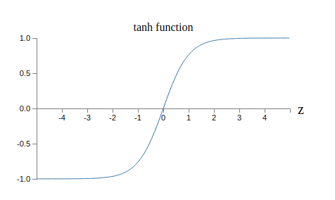
tanh 뉴런과 시그모이드 뉴런의 한 가지 차이점은 tanh 뉴런의 출력 범위는 $0$에서 $1$이 아니라 $-1$에서 $1$ 사이라는 점이다.
이는 tanh 뉴런으로 네트워크를 구성하면 시그모이드 네트워크에서와는 조금 다르게 출력을 (그리고 응용의 자세한 사항에 따라 입력을) 정규화normalize할 필요가 있다.
시그모이드 뉴런과 비슷하게 tanh 뉴런의 네트워크는 이론적으로 입력을 $-1$과 $1$ 사이로 매핑하는 어떠한 함수* There are some technical caveats to this statement for both tanh and sigmoid neurons, as well as for the rectified linear neurons discussed below. However, informally it's usually fine to think of neural networks as being able to approximate any function to arbitrary accuracy. 도 계산할 수 있다. 게다가 역전파 같은 아이디어와 확률적 경사 하강은 시그모이드 뉴런의 네트워크에서처럼 tanh 뉴런의 네트워크에도 쉽게 적용된다.
네트워크에서 tanh와 시그모이드 중 어떤 뉴런을 사용해야 할까? 연역적으로 대답은 명확하지 않다. 그러나 tanh가 때로는 성능이 더 좋다* See, for example, Efficient BackProp, by Yann LeCun, Léon Bottou, Genevieve Orr and Klaus-Robert Müller (1998), and Understanding the difficulty of training deep feedforward networks, by Xavier Glorot and Yoshua Bengio (2010). 는 이론적인 주장과 경험적인 증거가 있다. tanh 뉴런에 대한 이론적인 주장 중 하나를 간략하게 살펴보자. 시그모이드 뉴런을 사용하고 네트워크의 모든 활성화가 양수라고 가정하자. $l+1$번째 층에 있는 $j$번째 뉴런으로 입력되는 가중치 $w^{l+1}_{jk}$을 고려해보자. 역전파에 대한 규칙에서 연관된 경사가 $a^l_k \delta^{l+1}_j$라는 것을 알 수 있다. 활성화가 양수이므로 이 경사의 부호는 $\delta^{l+1}_j$의 부호와 같다. 이는 $\delta^{l+1}_j$이 양수라면 모든 가중치 $w^{l+1}_{jk}$은 경사 하강 동안에 감소할 것이라는 의미이다. 반면 $\delta^{l+1}_j$이 음수라면 모든 가중치 $w^{l+1}_{jk}$은 경사 하강 동안에 증가할 것이다. 즉 같은 뉴런으로 들어가는 모든 가중치는 같이 증가하거나 감소해야 한다. 가중치의 일부는 증가하고 다른 일부는 감소할 필요가 있기 때문에 문제이다. 이는 입력 활성화 중 일부만 다른 부호를 가질 때 일어날 수 있다. 시그모이드를 양수와 음수의 활성화를 모드 가질 수 있는 tanh와 같은 활성화 함수로 대체해야 함을 의미한다. 실제로 tanh는 $0$에 대하여 대칭이므로 즉 $\tanh(-z) = -\tanh(z)$이므로 은닉 층에 있는 활성화는 양수와 음수 사이에서 동등하게 균형을 이룰 것이라 기대할 수 있다. 가중치를 업데이트 하는데 한 쪽으로 편향되지 않도록 보장한다.
이 주장을 어떻게 받아들여야 할까? 이 주장이 암시하지만 이는 경험적인 발견heuristic이고 tanh 뉴런이 시그모이드 뉴런보다 성능이 좋다는 엄밀한 증명이 아니다. 아마도 이 문제를 보상하는 시그모이드 뉴런의 다른 특성이 있는 것일까? 실제로 많은 작업에서 tanh는 시그모이드 뉴런보다 아주 작은 향상이나 향상이 없다고 경험적으로 알려져 있다. 불행히도 어떤 특정한 응용에 대해 어느 뉴런이 빠르게 학습하는지 혹은 최상의 일반화 성능을 주는지에 대한 엄밀한 규칙이 아직 없다.
시그모이드 뉴런에 대한 또 다른 변형은 수정된 선형 뉴런 rectified linear neuron 혹은 수정된 선형 단위 rectified linear unit이다.
입력이 $x$이고 가중치 벡터 $w$, 편향이 $b$인 ReLU의 출력은 다음과 같다.
$$\begin{eqnarray}
\max(0, w \cdot x+b).
\tag{112}\end{eqnarray}$$
그래프로 그려보면 함수 $\max(0, z)$은 다음과 같다.
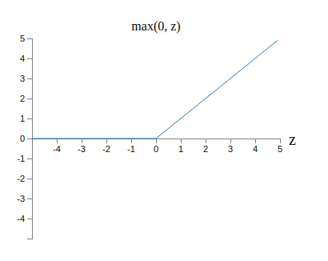
분명 그러한 뉴런은 시그모이드나 tanh 뉴런과는 꽤 다르다.
그러나 시그모이드 뉴런과 tanh 뉴런처럼 수정된 선형 단위는 어떠한 함수도 계산할 수 있으며 역전파와 확률적 경사 하강과 같은 아이디어를 이용해 학습할 수 있다.
언제 시그모이드 혹은 tanh 뉴런 대신에 수정된 선형 단위를 사용해야 할까? 이미지 인식* See, for example, What is the Best Multi-Stage Architecture for Object Recognition?, by Kevin Jarrett, Koray Kavukcuoglu, Marc'Aurelio Ranzato and Yann LeCun (2009), Deep Sparse Rectifier Neural Networks, by Xavier Glorot, Antoine Bordes, and Yoshua Bengio (2011), and ImageNet Classification with Deep Convolutional Neural Networks, by Alex Krizhevsky, Ilya Sutskever, and Geoffrey Hinton (2012). Note that these papers fill in important details about how to set up the output layer, cost function, and regularization in networks using rectified linear units. I've glossed over all these details in this brief account. The papers also discuss in more detail the benefits and drawbacks of using rectified linear units. Another informative paper is Rectified Linear Units Improve Restricted Boltzmann Machines, by Vinod Nair and Geoffrey Hinton (2010), which demonstrates the benefits of using rectified linear units in a somewhat different approach to neural networks. 에 대한 최근의 논문은 대부분의 네트워크에 수정된 선형 단위를 사용하는 것에 상당한 이점을 발견했다. 하지만 tanh 뉴런처럼 언제 정확히 수정된 선형 단위를 이용해야 하는지 왜 사용해야 하는지에 대한 깊은 이해가 부족하다. 시그모이드 뉴런은 포화될 때 즉 출력이 거의 $0$ 또는 $1$일 때 시그모이드 뉴런은 학습을 멈춘다는 사실을 기억하자. 이 장에서 반복해서 본 것처럼 문제는 $\sigma'$ 항이 경사를 감소시키고 학습 속도를 저하시키는 것이다. tanh 뉴런은 포화되면 비슷한 문제가 나타난다. 대조적으로 수정된 선형 단위에 대한 가중치 입력은 포화되지 않으며 그에 따라 학습 속도 저하 문제도 없다. 반면에
Check!!
Deep Learning, book by Ian Goodfellow, Yoshua Bengio, and Aaron Courville
한글 글꼴(korean fonts): 나눔 글꼴
In academic work,
please cite this book as: Michael A. Nielsen, "Neural Networks and
Deep Learning", Determination Press, 2015
This work is licensed under a
Creative Commons Attribution-NonCommercial 3.0 Unported License
. This means you're free to copy, share, and
build on this book, but not to sell it. If you're interested in
commercial use, please contact me(Michael A. Nielsen).
학업적으로 이용 시 다음과 같이 인용해 주세요: Michael A. Nielsen, "Neural Networks and
Deep Learning", Determination Press, 2015

이 저작물은
크리에이티브 커먼즈 저작자표시-비영리 3.0 Unported 라이선스
에 따라 이용할 수 있습니다.
상업적 이용을 원하면, 저자(Michael A. Nielsen)에게 연락을 주세요.
마지막 깁고 더함: 19/06/21